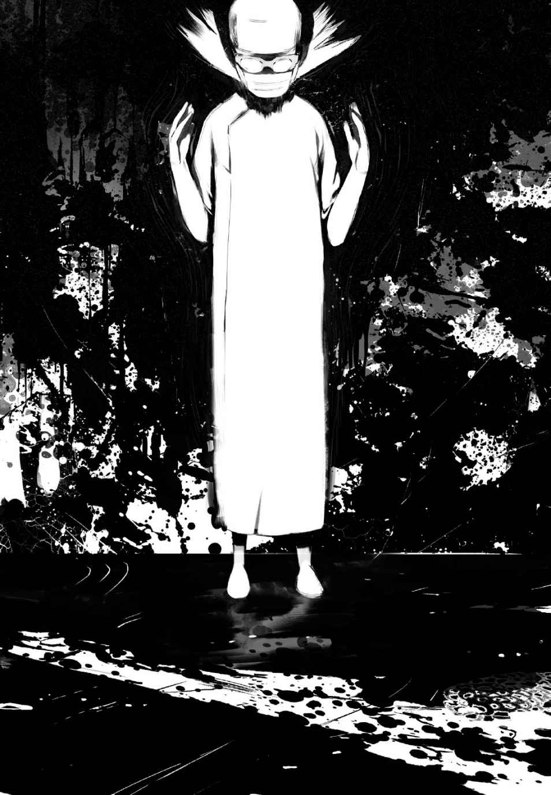
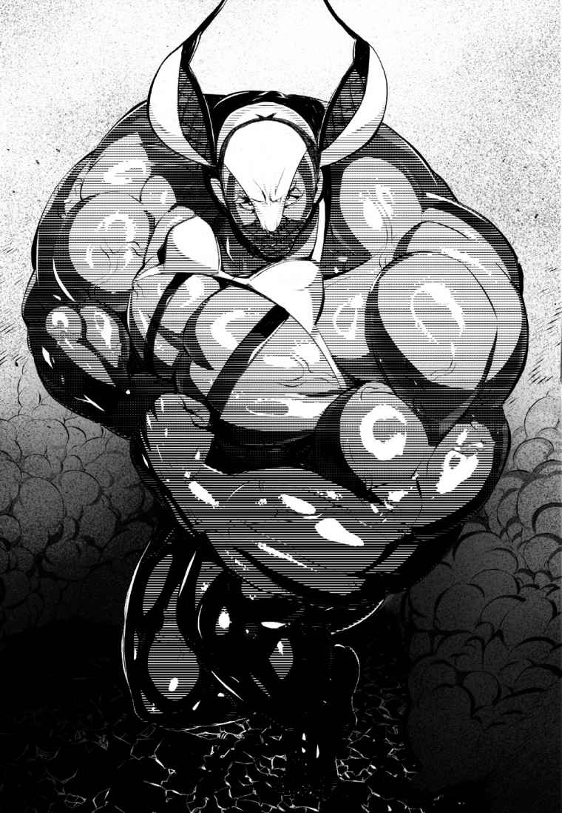

| 異世界最強は大家さんでした 2 (アース・スターノベル) | |
| ゆうたろう | |
| (2015) | |
第三章 ノリちゃん、はじめてのびょういん
◆ １◆
「ノリちゃん、病院に行こう」
「びょういん？」
おめめをパチクリして首を傾げるノリちゃん。
病院で未知なる恐怖と戦うという事は、子供にとって通過儀礼であり、初めての試練だと俺は思う。
お医者さん、看護師さん、果てには肉親までも。目に見える者全てが敵に見える絶望感と恐怖に、かくいう俺も初めての予防接種で泣き叫び、母ちゃんと先生を苦笑させたものだ。
子供が病院で泣き出してしまう姿は珍しくなかったし、それは異世界に来たからと言って変わる事もないだろう。神の系譜に連なる偉大なる種であろうとも、あの特殊な恐怖から逃れることは出来ないに違いない。
ノリちゃんも泣いてしまうのだろうか。
それを想像すると心が痛い。むしろ俺が泣きそうだ。
だが、俺は彼女の保護者であり、彼女を守らなくてはならないのだ。
いいや、建前はよそう。
利己的だと、独善的だと罵られたっていい。
彼女がいない世界などに存在価値なんて無いんだ。俺には彼女が必要なんだ。
事の発端は、亡者の大空洞でチャラ男と共にアンデッドの間引きをした所まで遡る。
「んじゃ、マジ危ねー事もマジ無いだろうし？ マジ手分けしたほうがマジ楽じゃね？」
亡者の大空洞は広い。しばらく一緒にアンデッドを狩っていた俺たちだったが、結構時間がかかりそうだなとボヤく俺に対し、チャラ男が最高に頭の悪そうなセリフを吐いてきた。俺は一も二もなく同意する。渡りに船だったのだ。
なぜなら......、
『ああああぁ、汝 よ早く斬ろう......早く、早くぅっ！』
完全に七色の世界へとブッ飛びあそばされた、イカれた女 のせいだ。
人前で喋らないという約束も一緒にどっかに飛んで行ってしまっているに違いない。
チャラ男をちょっとだけ、ほんのちょっとだけ信用してもいいかなーとかホントにちょっとだけ思った俺だったが、それでも聖剣をぶら下げていることがバレるのは色々と面倒だ。
俺が勇者として活躍していた半年間、聖剣を持っているというのは有名だった。それが十字教屈指の聖遺物「聖剣アリア」であること、聖剣アリアは古の聖女の魂を宿すインテリジェンスソードであることを、教会自体が強力に喧伝していたのだ。
『ああ、もう少し......もう少しで我は、向こう側にイけそうなんじゃっ！』
最初から向こう側の住人が、今更何言ってんだ。
あんなに嫌がっていたアンデッドの腐肉を浴びて悶えるアリアさん。あまりの節操の無さに溜め息も出ない。
「っつーかさぁ～、オレマジ帰ったらマジデートの予定あって～？ この前デート、ガン眠でテキトーこいたらさー、マジ激おこぷんぷん丸なワケー」
こっちはこっちで何言ってるのか全く解らないが、別行動を提案してくれたことに心の中で感謝する。
確かに、アホ剣のアホ妄言を聞かれたところで、間違っても聖剣だなんて思われることはないだろう。良くて頭のおかしいインテリジェンスソード、悪くて呪いの剣と思われるのが関の山だ。だが、用心に越したことはないのもまた事実だった。
結局、別行動の方が効率がいいという意見の一致をみた俺たちは、別々のフロアへと移動する。俺が移動した先、ただ徘徊するアンデッドの群れを見て思わず一言。
「おおー このフロアはアンデッド多いなー」
『汝よ......焦らさないで、あ、でもそれも、また、ああっ！』
広すぎる守備範囲にいちいち突っ込むのも疲れたので、俺は普通に間引きを始めた。
──ザシュッ
『ああぁっ！』
──ズシュッ
『い、イイィっ！』
お前うるさい。
『す、スゴイ......っ！ アンデッドすごいぃぃ！ 有り得ないと思ってたのに......、こんなにっ！ こんなにぃぃっ!? 』
もうやだこの剣。
俺は半ば本気でアリアをここに置いて帰ろうかと思ったが、それはそれで放置プレイとか言って喜びそうなので我慢する。
代わりと言っちゃなんだが、腹いせにちょっとだけからかってみることにした。
俺はアリアを振りかぶる。そして──、
──ピタッ
『あっ......？』
寸止め。
ど、どしたの？ ねぇ、どしたの!? とばかりに息を荒らげるアリアさんを横目に、もう一度。
──ピタッ
『あうっ......？』
来ると思って来ない衝撃に、身悶えを繰り返すアリアさん。ぷぷっ ざまあ。
しかし、俺が笑いを嚙み殺しながら、もう一度おちょくってやろうとアリアを振り上げた時だった。あろうことか、ウチの金属生命体が「女」の声で叫んだのだ。
『んっ......？ んん～～っ！ もうっ!! お願い！ 意地悪しないでっ！』
いつか女性に言わせてみたい言葉上位に食い込むであろうセリフを、腐肉でベチャベチャの剣に言われた時のこのやるせなさといったらどうだ。
最早、はばかること無く遠い眼をする俺。
一方、ご褒美的おあずけに、興奮も最高潮のアリアさん。
俺はあらゆる感情をシャットアウトして、事務的にアンデッドを狩り始めた。
そうして六体くらいのアンデッドを狩った時──、
『あ、あ、あああっ！ もうっ、もう我はっ！ ああぁぁホーリーインパクトぉぉぉっ!! （聖なる重撃）』
──ォンッ
解き放たれる眩 い光。
俺はあまりの眩しさに瞼を閉じる。
そして恐る恐る目を開けた時、フロアのアンデッドは全て塵になっていた。
信じられねえ、勝手にぶっ放しやがった。
ていうか何が聖なる だ。めちゃめちゃ興奮してたじゃねーか！
金属が放つ光沢とは別に、どこかツヤツヤ光って見えるアリアさん。
『ふう～～』
「ふうーじゃねえんだよ」
この時俺は、帰ったらアリアを病院に連れて行くと心に決めたのだ。
そして今日は、受託していた依頼が急遽キャンセルになって、１日の予定が空いてしまった。依頼が無くなってしまったのは懐的にちょっとキツいが、いい機会だと思い俺はアリアに言った。
「アリア、今日は仕事無いから、病院行くぞ」
『急になんじゃ？ 我はどこもおかしいところは無いぞ？』
「頭がおかしいんだよ、ホラ、行くぞ」
すると、自覚症状の無いアリアは焦り出した。
『はっ ま、まさか、あの技師のところに我を連れて行くつもりではあるまいなっ！ い、嫌じゃ！ あ奴は変態じゃぞ！ 変態に我を差し出すというのかっ！』
「お前ほどじゃないから大丈夫だって。もう行くぞ」
「い～や～じゃ～！」と思いのほか難色を示すアリアさん。本当にジタバタ暴れるから少々危ない。
だが、どれだけ頭が沸いていたとしても俺の大事な仲間として、愛剣として、おかしいところはキチンと治してやらねばなるまい。
俺は心を鬼にして、むんずとアリアを摑む。
するとアリアは、ハッとしたように言った。
『そ、そうじゃ！ ノリは病院に行かなくていいのか！ ノリは一度も病院に行ってないんじゃろう!? 』
俺はゆっくりと瞑目し、額を指で押さえた。
「もし、今のがノリちゃんが頭おかしい旨の発言ならば......、君は溶鉱炉で入浴 だ」
『ち、違う！ 我はノリの事を思って......！』
「続けたまえ」
弁明など無意味なのだが、一応話だけは聞いてやる事にする。
正直、もう既に俺はガジル金工店でアリアの入浴手続きをどうするか考えていたのだが、アリアの口から飛び出した思わぬ言葉に衝撃を受けた。
『神竜と言っても竜種じゃ。竜種が人里で暮らす際の予防接種とか、受けさせたことはあるのか？』
「......え？」
『神竜と言えども子供じゃ。病気に罹 ればどうなるかわからんぞ。それとも何じゃ？ ノリを病気にさせたいのか？』
「──っ!! 」
目を見開いた。呼吸を忘れた。
病気......、ノリちゃんが......、病気......？
愕然とする俺に、アリアは追い打ちをかける。
『そんなことも思いつかずに、汝は本当にノリのことを考えてるのか？ 家族として失格じゃぞ!? 』
正直、人格破綻者のアリアさんが言うセリフではないが、反論する余裕などなかった。
俺は膝から頽 れ、床に手をつき、俯く。
何が家族だ、何が愛しているだ。
あまりに利己的で一方的な自分に吐き気がする。
彼女の事を本当に考えていれば、当然の如く思いつくはずだった。
科学技術が発達していた元の世界だって、幼児の時の病気で、一生の障害が残ってしまう子がいるし、最悪死んでしまう子供がいたのだ。
他の技術に比べ、医療技術が異常に発達しているこの世界においても、小さいころの病気は、場合によっては最悪の結果をもたらすという事は変わらない。そう、ちょっと考えればわかることだったはずだ。
「俺は......、何をやっていたんだ......」
ベッドで息を荒らげて苦しむノリちゃんを想像した時、俺は自分の体がバラバラになり崩れ落ちるような感覚に陥った。
知っている。これは『恐怖』だ。
死ぬ......、ノリちゃんが？ 死ぬのか？ いなくなってしまうのか......？
ぐるぐると抜け出せない思考の迷路。
額からはダラダラと脂汗が滴り落ち、呼吸が不規則に荒くなっていくのがわかる。何も考えられない。上手く呼吸が出来ない。
マズイと思った。これ以上考えると壊れてしまうと思った。
「あるじー どうしたのー？」
それは、救い。ベッドの上から翳 される希望の光。
俺は力を振り絞って顔を上げ、心配そうに俺に声をかける天使を見る。
そこには、命を懸けて守り抜くと、全身全霊で愛すると誓った、俺の全てがいた。元の世界もこの世界も、あるかもわからぬ他の世界も次元の壁も、何も関係などない。
俺は思う。彼女は俺の世界だ。
自身の浅ましさと向き合い、自分の愚かしさを責める前に、俺にはやらなければならないことがあった。
「ノリちゃん、病院に行こう」
「びょういん？」
◆ ２◆
「ノリちゃん、病院に行こう」
「びょういん？」
うりゅ？ と首を傾げるノリちゃん。
俺が説明しようとした時、ノリちゃんがハッと何かに気付く。
「びょういんは、おいしい......？」
俺は首を振って「食べ物じゃないんだよ」と告げる。
するとノリちゃんは、右に傾げていた首を左に傾げて言った。
「びょういんは、たのしい......？」
俺はいつもノリちゃんに、ウソはいけないと教えている。当たり前だ。
まだ世の善悪もわからない歳の子供に、ウソはいい事なんだよと教える馬鹿がどこの世界にいると言うのだ。これはノリちゃんの将来を考えるならば当然のことだ。だから俺は彼女の手本となるべく、何事にもウソはなく、誠実に生きようと心掛けてきた。そう、ウソはいけないことなのだ。
「た、たのしい......と思うなあ......？」
「ほんとー!! 」
パタパタして嬉しそうに眼を輝かせるノリちゃん。
ああ、ノリちゃん赦 しておくれ......。君は汚れた僕には眩し過ぎるんだ......っ！
怒濤 の如く押し寄せる罪悪感と、雨あられと俺に突き刺さる無邪気な槍。俺は彼女のキラキラ輝くおめめを直視出来ないでいた。
「あんなー ノリなー あるじとびょういん行きたいなー」
「あ、あるじもノリちゃんと行きたいさ！」
空気を読めないバカ女 が茶々を入れてくる。
『噓じゃな～、汝は噓吐きじゃ～』
「......黙れ殺すぞ」
わかってる、俺が良くないことをしているのはわかっているのだ。
だが、いつだって選べる道は限られていて、突き付けられた取捨選択の場面で迷わず進めるほど俺は強くない。誰もが傷つかない方法など存在しないと知った上で、これが最善なのだと常に言い訳しながらも、それでも大事な事は忘れずに生きてきたつもりだ。
ウソはいけない。わかっている。わかっているんだ。
だが、どうだろう！
愛するノリちゃんに、病院はちょっと痛かったり苦かったりするところだよ、と真実を告げるのが本当に良い事なのだろうか!?
俺は声を大にして言いたい。彼女の事を考えるからこそウソをつくのだ！
「善」ではない事、イコール「悪」ではない。「悪」ではない事、イコール「善」でもない。
どこの世界も形式的な正しさが全てではないのだ。人の数だけ「善」は存在し、「悪」が存在する。本音と同じ数だけ建前が存在する。
例えば、近所のパチンコ屋さんがそうだ。
パチンコ屋さんの近くには、「たまたま」古物商許可証を有する古物商のババアが店を開いているし、「たまたま」パチンコ屋でもらう景品に入っている金の買い取りを行っているし、「たまたま」景品の在庫不足に悩んだ経営者が、そのババアが買い取っていた景品を、「たまたま」上値で買い取り、そんな取引を通じて「たまたま」ババアと独占的売買契約を結ぶのだ。
全国に数多散らばるパチンコ屋さんは、なんという偶然か、天文学的確率をものともせずにみな同じ状況を経て、安定的経営に至っているのだ。
それを欺瞞 の一言で片付けるのは簡単だ。それに義憤を覚える者だって少なくないだろう。
しかし、それは取り締まる側である警察の天下りのポストだったりするのだからしょうがないではないか。
多くの要素が複雑に絡み合ったソレを、人は社会と呼ぶし、堆 く積み上がった社会を文明と呼ぶのだ。
正しさだけでは腹は膨れない。本音だけでは息ができない。ならば俺が選ぶべき正義など言うまでもない。
「じゃ、じゃあ、あるじ、いい病院調べておくから、今度一緒に行こう！」
「はーい♪ 」
「今日はびょういんにいくぞ～♪ はっじめてのびょういんにいくぞ～♪ 」
今日も冴えわたっているノリちゃんとお手々を繫いで大通りを歩く。ノリちゃんは例によって俺の手の高さに合わせ、空中を歩いていた。
カイル精肉店を通り過ぎる時、旦那を座布団だと思っている女将さんが声をかけてくる。
「今日も元気だねノリちゃん！ 今日はどこに行くんだい!? 」
「あんなー ノリなー びょういんにいきます！ ノリびょういんはじめてです！」
ノリちゃんが覚えたてのスキップをしながら女将さんに言った。
「あ、ああ......そうかい......」
気まずい顔をする俺を見て、全てを理解した女将さんが、あんたも大変だねえといった眼差しを俺に向けた。
どうしましょう......と目で訴える俺に、女将さんは苦笑を返すばかり。
正直ミスったと思ってる。
こんなにもノリちゃんが病院を楽しみにするとは思わなかったのだ。
あの後、俺は評判のいい獣医師を探し、この街を走り回った。
マイラさんやベルトはもちろん、メルトさんをはじめオルテナ、チャラ男、果てには大家さんにまで意見を求め、吟味したのだ。
その結果、この街一番だと評される病院を俺は探し当てた。
──イエローサブマリン動物病院
それは伝説となった某バンドの名曲を思い起こす、この異世界において全く由来がわからない怪しい病院名。
なぜ次元レベルで離れたはずのこの世界に、地球の固有名詞が登場するのか全くわからないが、そんなこと言ってる場合じゃないし、何となく突っ込んだら負けな気がした。
だが、確かな情報として、ペットの動物から野生の魔獣まで、全ての種族、全ての症例を網羅 する凄腕の獣医師がやっている病院なのだと言う。神竜であるノリちゃんを診 る事の出来そうな医師は、他に居なかったのだ。
俺たちは大通りを歩き、胡散臭い病院名が刻まれた看板の前までやってくる。
ちょっとしたレンガ造りのアパートの一階でやっている病院らしい。俺はギィという音を立てる木扉を開けて中に入る。常時光源魔法に照らされた待合室は明るく、パッと見た感じ、ちょっと大きめな地域の普通の動物病院といった風情だ。
軽く周りを見渡すと、そんなに広くない待合室、診察開始時間前だというのに既に数人ほどが座っていた。
連れている生き物も様々だ。
普通に犬を連れている夫人もいれば、おそらくは使い魔であろうガーゴイルを連れているオッサンがいたり、何故か単独で座っているイケメンさんもいる。
そんな中、誰よりも礼儀正しいノリちゃんが、入室するとすかさず挨拶をした。
「こんにちは！ イガワノリです！ びょういんはじめてです！」
し～ん
マジか！ 俺は絶句した。まさかここは目の病院か？
我が家のノリ様のエンゼルスマイルが効かない人類がこの世に存在したというのか......っ！
俺は戦慄 を覚え、周りを窺 った。
イケメン、ババア、ババア、オッサン、ババアという布陣だったが、どうやらノリちゃんを無視したわけではないらしい。
なにやらオッサンは、そっぽを向いて拗 ねるガーゴイルに向かって「お前が大事なんだ！ わかってくれよ！」などと必死に懇願している。まんざらでもなさそうにオッサンをチラ見するガーゴイルがちょっとイラつくが、特に問題はない。
独りで座っているイケメンは、ピンと背筋を伸ばして膝の上で握りしめた拳をブルブル震わせている。そして足は伝説のメタル・バンドのドラマーを彷彿 とさせるスピードで貧乏ゆすりを繰り出し、視点の定まらない虚ろな目がフラフラと虚空を彷徨 っていて、ノリちゃんの挨拶どころではない感じだった。
人間がなぜ動物病院で診察待ちしてるのか、突っ込み所は多いがやはり別に問題は無い。
だが問題はババアだ。ババアがいけない。
確かにババア共は笑顔で「あら、可愛い竜ちゃんね」くらいの反応は示している。反応だけで言えば前二者よりよっぽどマトモだ。
だが笑顔の奥、三日月形に歪んだその眼が「でも、ウチの○○ちゃんのほうが可愛いわ」と雄弁に語っていた。
これはいけない。童話でもあったではないか。
鏡よ鏡、世界で一番可愛いのは誰？
惜しむらくは、童話の世界にノリちゃんがいなかった事だと俺は思う。王妃も姫もどんぐりの背比 べだったからこそ、鏡は姫の名を呼び、子供に聞かせるにはあるまじき殺人劇が開幕してしまったのだ。そう、ノリちゃんより可愛い生き物などこの世に存在しないし、むしろ存在してはいけないのに、そんな世界の理 を無視し、さらにはそれがさも「ウチの○○ちゃん」だとでも言わんばかりのババア共の傍若無人な振る舞いに、俺は怒りを通り越して笑ってしまった。
俺は、彼女たちの元々残り少ない人生を多少縮めたところで特に問題なかろうと判断し、右手に「なめし棒」を召喚してから足を踏み出す。
愚かなババア共だ。
誰が貴く遠い頂 に立つべきなのか、いや、既に立っているのかも知らない憐 れなおバカさんたち。神に弓引く行為がどれだけの災厄をもたらすか、自身の身を以 て知っていただかねばなりませんね。取り急ぎ、私がその皺だらけの皮をなめしてモモンガ・ババアとして新たな人生を歩──、
「あるじー あるじー」
「んん？ なんだいノリちゃん？」
思わず足を止めた俺に、ノリちゃんは短い腕を俺の耳元へと一生懸命伸ばし、内緒話の要領でコショコショと言った。
「ノリまちがえたー びょーいんはしずかにするところだった！」
どうみても天使です。本当にありがとうございます。
耳元が熱くなり、鼻息が荒くなってしまったのは気のせいだ。
ノリちゃんが周りをきょろきょろ見渡し、おめめをパチパチ。すると空いたベンチの前に移動し、「あるじー こっちきてー」とベンチをペチペチ叩く。
俺がよっこいしょと座ると、ノリちゃんはすぐに俺の膝の上に乗って背筋をピーンと伸ばした。
「？」
俺が首を傾げていると、向かいの犬が目に入る。チワワとポメラニアンのミックスみたいなちっこい犬は、主人であるババアの膝の上でピーンと背を伸ばしていた。どうやらそれがノリちゃんの目に留まり、病院ではこうするものだと思ったらしい。
どこか誇らしげに姿勢を正すノリちゃんを見て、やっぱりノリちゃんが世界で一番可愛いじゃねえかよ、と思った。
◆ ３◆
受付を済ませてから座って、５分ほど待っていると診察が始まった。
看護師らしい人が診察室から顔を出す。
「ガーゴちゃ～ん、ガーゴ・クローレンちゃ～ん」
するとオッサンが席を立ち、未だそっぽを向いているガーゴイルを優しく抱き上げると診察室へと向かう。
腕の中でガーゴさんが必死にイヤイヤをしているが、オッサンの心は揺るがない。
すまん！ お前の健康のためだ！ と言って躊躇 せず診察室へと入り、ドアを閉めた。
動物病院に連れてこられたガーゴイルさん（魔獣）。
俺はこの世界の「動物」という単語の定義の広さに戦慄しつつ、何気にオッサンが高ランクの冒険者かも知れないと思った。
ガーゴイルは、小さい体に大きな魔力を秘める悪魔型の魔獣だ。知能も戦闘力も高く、言語によるコミュニケーションが可能という、優秀な使い魔なのだ。
だが、使い魔にする場合は、かなり慎重に契約にこぎ着けないと一方的に騙され、魂を奪われたりすることもあるのだという。その高い知能と独自の価値基準で、使役する側の人間を選ぶのだ。
そして、彼らは劇的に成長し変態する魔獣でもある。当初は石の外殻を持つランクＤ程度の小さな魔獣だが、成長するにつれて外殻が剝がれ、人と変わらぬ皮膚を持つに至る。石の外殻の代わりに彼らを守るのは、魔導的な障壁だ。そこまで成長してしまうとそこらの冒険者には手もつけられなくなるのだ。
さっきのガーゴさんは、既にその状態に至っており、そしてオッサンはそのガーゴイルにかなり懐 かれていたようだったので、扱いについても戦いについてもガーゴさんを満足させる人物なのだろうと、簡単に推測が出来た。
俺がそんなことをぽややんと考えていた時だった。
「イヤァァァァァ～～ッ!! 」
ガーゴさんが泣きながら診察室から飛び出てきて、入口のドアを壊して外に走り去ってしまった。
「ガーゴちゃん待ってぇぇぇぇぇぇっ!! 」
ガーゴさんに続くオッサン。
待合室になんとも言えない沈黙が降りる。
それを見ていたブルドッグみたいな顔をしたババア（人間）が、勝ち誇ったようにフンッと鼻を鳴らした。
まー情けない！ ウチの子はそんな醜態は晒 さないザマス！ と言わんばかりの尊大な態度だ。
すると、床にお座りしていたババアのペットらしきブルドッグも、オッサンたちが出て行った入口を一瞥して、フンッと鼻を鳴らす。
そもそも、ブルドッグがブルドッグを飼っている事にも感心するが、親子揃って逃げ去った二人を見下すような態度をとったことに、余程の信頼関係があるのだろうと俺は感心した。ブルドッグみたいな人間と、人間みたいなブルドッグの相性はすこぶる良いらしい。
するとすぐに診察室から、何事も無かったかのように看護師さんが顔を出して言う。
「フランソワちゃ～ん、フランソワ・ビーンズちゃ～ん」
先程のブルドッグ親子が、手本を見せてあげるザマス！ みたいなイラっとする態度で診察室に悠然 と入っていった。
「キャンキャンキャンキャンキャンっ!! 」
「待って～！ フランソワちゃん待ってぇ～～～っ!! 」
──ドドドドド
走り去るブルドッグ親子。
お、おい......、大丈夫かこの病院......。
誰に聞いてもこの病院の評判はすこぶる良かった。特に、珍しい生物でも完璧にカバーするという話を聞き、ここしかないと決めてやって来た。
だが現状はどうだろう。
強敵を前にしても逃げ出さない優秀な使い魔が泣きながら逃走し、待合室で大人しくも豪然と佇 む犬が悲鳴を上げて逃走する。
俺が驚愕している間にも三組目（ババア＆チワポメ）が突入し、敗走していた。
そしてその間にも、俺の横に座っているイケメンさんの貧乏ゆすりは加速度的に速度を増し、もはや残像レベルに達してしまっているし、なんだか頭にツノが生え、手の甲には鱗らしきものが浮かび上がってきている。
隣のイケメンが、竜人か高位のドラゴンであったことに俺が驚いていると、異様な空気を察したのか、ノリちゃんがちょこんと俺の膝から降りて、耳をへにゃっとさせながら上目遣いで言った。
「あ、あんなー ノリ、おしっこいきたいかも......」
行っといでと言うと、ノリちゃんはそろりそろりと出口へ逃走を図った。
「ノリちゃん、そっちはトイレじゃないよ？」
「──っ!! 」
ビクっとするノリちゃん。
「あ、あんなー ノリなー......ノリ、ちょっとこわいかもしれん......」
「ノリちゃんのために必要なんだ......。大丈夫だからこっちにおいで？」
俯きながらトボトボとこちらに歩いてくるノリちゃんを見て、俺は胸が張り裂けそうになったが、さっきのオッサンに倣 って歯を食いしばった。
このまま帰るのは簡単だ。可哀想だからまた今度にしようよとか、神竜なんだから大丈夫だよとか、このままだと嫌われてしまうよとか、俺の弱い部分が今でも首をもたげている。
だがきっと、それを選択することは、彼女にとっても今後の俺にとっても良いことなんて何一つない。いつかピーマンだって食べられるようにならなきゃいけないのだ。
俺が葛藤していると、ノリちゃんが俺の手前でピタっと足を止める。俺が「どうしたの？」と声をかけようとした時、俯きながら彼女が言葉を絞り出すように呟いた。
「あるじが......ノリをだました......」
「の、ノリちゃん違うんだ。聞いて──」
「あるじが......ノリにウソついた......」
「～～ッ！」
俺は心底後悔した。
最初から本当のことを話し、理解してもらえばよかったのだ。
彼女は、説明しても話が理解出来ないような頭の悪い子ではない。真剣に説明してそれでも首を横に振るような我儘 な子ではない。そんなことは知っていたはずだ。
ならば、なぜ今こんなことになってしまっている？
俺のせいだ。
ただ、ノリちゃんに嫌われたくない我が身かわいさで俺が、ただその場凌 ぎについたウソが、ノリちゃんに不信感を与えた。
そして、いつもウソはいけませんと言っている俺に、彼女が誰よりも信頼しているであろう俺に、ウソをつかれたことが深く彼女を傷付けている。
自分の保身と、ノリちゃんの気持ちを天秤にかけ、自分の保身をとったクソッタレが言ったクソみたいなウソが、今こうしてクソッタレに返ってきているのだ。
俯いて震える彼女に何を言えばいい？
いくつもの言葉が浮かび、その全てが情けなく霧散する。
俺が今、口にしていい言葉など何一つ残っていなかった。何を言おうとそれらは全て言い訳だ。
俺はただ、呆然と悲しみに震える彼女を見ることしか出来なかった。
すると、小さな女神が震える声で俺に言ったのだ。
──あるじはノリをきらいになった......。
言わなければならなかった。
たとえ世界中の人がそう囃 し立てても、神が信託でそう告げたとしても、彼女本人がそう思ったのだとしても、そして今、俺が発すべき言葉を持たないのだとしても。
断じてそれは違うと、それだけは絶対に無いのだと、俺は彼女に言わなければならなかった。
「それは違うっっ!! 」
関係無かった。受付の女の子が見ていようと、待合室で待つ客が見ていようと、何一つ関係など無かった。
俺は、床に気を付けの姿勢で仰向けに転がり、俯くノリちゃんの目の前に自身の顔を持っていく。そして彼女の目を真っ直ぐ見て、もう一度言った。
「それだけは違う！ 俺は君が世界で一番好きだ！」
ぎゅっと瞑 った彼女の目から、ひとしずくの涙が流れ、俺の頰にポタリと落ちた。
「だって......ふぅぇっ ひぐっ、あるじ、ノリに、ノリにウソついたもん......っ！」
ウソをつき、彼女を傷付けた俺に、今この場で言葉を発する権利など無い。
だから俺は無言で彼女を抱きしめた。
背に感じる床の冷たさと、胸に燃えるように熱く感じるノリちゃんの体温。きっとその温度差が俺の罪だ。
俺は涙を流すノリちゃんの頭を、ただひたすら撫でた。
「前にも言ったよね、俺がノリちゃんを嫌いになることなんて有り得ないんだ」
鼻をすするノリちゃんに俺は語りかける。
「あるじはウソをついた。許してほしいとは言わない。病院はね、ちょっと痛いし、ちょっと苦いところなんだ」
ノリちゃんが真っ直ぐ俺の目を見ている。その瞳にはひとカケラの疑念も浮かんではいない。真剣に俺の話を聞こうとしている目だ。
「でも、ノリちゃんには必要なんだ。人間もドラゴンも病気になる。病院はねノリちゃん、病気を治したり、病気にならないようにするところなんだ。俺は君に病気になって欲しくない。君が病気で苦しむ姿を見たくない。君がいなくなるなんて、考えただけで恐ろしい。だから今日、君を連れてきたんだ」
ノリちゃんがおずおずと口を開く。
「ノリにはひつよう......？」
「うん......」
「ちょっといたいの......？」
「うん......」
「ちょっとにがいの......？」
「そうだよ」
「ぴーまんよりも......？」
「ごめん、それはわからない」
その小さい体、幼い心で一体彼女は何を考え、どうやって答えを選択したのだろう。選択するという概念すらまだあやふやな彼女は、一体どうやって目の前の困難を乗り越えることを決めたのだろうか。
戦闘力だけで他に何も持たない凡人の俺にはわからなかった。だが彼女は確かに選択したのだ。
彼女は俺の胸の上に立ち、凜々 しく宣言する。
「わかった！ ノリ、がんばるっ！」
彼女の顔が霞 んで見えないのは、俺の涙のせいだろうか。
それもあるかもしれない、だけどそれだけではないと思う。
傷付いても立ち上がり、俺を信じ、前向きに生きようとする気高い彼女が、きっと俺には眩しいのだ。
ノリちゃんは俺を立たせ、ベンチまで連れて行くと「あるじはここすわってー」と俺を促す。
そして、今度は俺の横に座ると「ノリがんばるんだからー」と呟いた。
◆ ４◆
──シュイ～～ン
「あ、あ、あぁぁあぁ～～っ!! 」
──ゴンゴンッ カンッ
「あああああ～～～～!! 」
──ゴリュッゴリュッ
「アッ──── ！」
扉の向こうから、どこをどう聞いても魔導ノコギリの音と悲鳴が聞こえてきたと思ったら、大工さんしか鳴らすはずの無い音が聞こえ、そして最後に得体の知れない恐怖を煽 る音と、男が操 を奪われる叫びが聞こえてきた。
一体この扉の向こうでは、何が行われているというのか。
隣ではノリちゃんがキューンキューンと鳴き始めてしまっているが、もう逃げるつもりは無いようだった。
向こうの席に座るババアとペットのクットリア鳥は、いつ失禁してもおかしくないほど怯えているが、果敢にもその恐怖に耐えている。
何一つ音が聞こえない時間がしばらく続き、あ、イケメンさん死んだよね？という空気が待合室に充満した時、バタンと診察室のドアが開いた。
中から出てきたのは、もうすでに変化の体を成していない人型の何か。
角もキバも生え、見える肌は全て黒色の鱗に変わり、何か大事なものを失ってしまった悲哀漂 う元イケメンさんが、両手でケツを押さえながら中腰でヨタヨタ歩いて出てきたのだ。
「お薬お出ししますから、お待ちくださいね～」
能天気かつ無慈悲な看護師さんの声。
どこかこの十数分で一気に老け込んでしまったイケメンさんが、ヨロヨロと俺の隣に腰かける。瞬間、短い悲鳴を上げて跳ね上がると、今度はびっくりするくらい浅くベンチに腰かけてうなだれた。
往年の、名作ボクシングアニメを彷彿とさせる真っ白具合。どうしても気になった俺は声をかける。
「あ、あの、ドラゴンさん？ 竜人さん？ あの扉の向こうで一体何が起こったんです......？」
すると、イケメンさんは力無くこちらを向き、弱り切った笑顔で答えてくれた。
「あ、ああ、もう変化も解けてしまっているのか、気付きませんでしたよ......。ははは、いや、お恥ずかしいところをお見せしたようで」
やけに礼儀正しく爽やかなイケメンさんに好感を抱いていると、彼はいきなり衝撃の告白を始めたのだ。
「あの、わたくし、お恥ずかしながらドリアデル山脈に住む竜族の若頭などをしておりまして、カルヴァドスと申します」
俺は絶句した。
ドリアデル山脈といったら、ここ皇都より遥か北東、魔境との境目にある前人未到のランク∞ ダンジョン「神のおわす頂」ではないか。
それは、特に標高も高くないただの山脈だった。厳密に分類すると『ダンジョン』ですらない。なのに、なぜランク∞ ダンジョンとされているのか。その最たる理由が今、目の前でやつれ切っていた。
「近々、十年に一度、若頭を決める力比べがありましてね。私も相当入念に準備をしていたのですが......」
ドリアデル山脈、そこは大陸唯一のドラゴンの集落になっているのだ。それも七大属性の名を冠する高位のドラゴンたちの。
種族的には間違いなくこの世界の頂点に君臨するであろうドラゴンたちは、ゲームや漫画で登場するドラゴンほど生易しい存在では無い。
そのブレスは天を裂き、地を焼き、一騎当千が当然とされるこの世界の兵 共をして、死にたくなければ逃げろと言わしめる凶悪な戦闘力を有している。しかも人間か、それ以上の知能を有し、戦略的にその人外の力を行使するのだ。
ただの人と比べて象と蟻どころの話ではない。
そんな単騎でも小国程度なら一晩で滅ぼせる彼らが、ドリアデル山脈には数百から集まり群れを形成し、自分たちのテリトリーに入る者には情け容赦ない苛烈な攻撃を加えるという。
少しでも想像してみればいい。土塊 、爆炎、水弾、雷撃、風刃、重撃、光線、全て戦略級のそれらが四方八方から冗談みたく降り注ぐ。
誰がそんな無理ゲーダンジョンを攻略しに行くというのだ。それはたとえＳランカーとて例外ではない。年頃の中二病患者だって真っ青になって逃げだす神域、それが「神のおわす頂」なのだ。
「全力のブレスを座標展開する特訓をしている時でした。過労、なのでしょうか......」
俺が冷や汗をかきながら相槌を打っていると、その「神のおわす頂」の絶対的支配種族の若頭だというイケメンが、憂 いを顔に浮かべ、重々しく口を開いた。
「『痔』になってしまいまして......」
えっと......Ｇ......？
「え、ええと......。痔......、ですか......？」
「痔です」
俺が絶句しているのを余所に、カルヴァドスさんが再び語り出す。
「痔というのは厄介でしてね、飛ぶにも痛いですし、ブレスなど吐こうものなら、ブレスより先に血を噴いてしまいますよ。ははは、いやはやお恥ずかしい話です」
本当にお恥ずかしい話を、恥ずかし気も無く披露する若頭。
俺は、この世界にはまともな奴はいないのだろうかと軽い眩暈 に襲われた。
「そこで、このままでは勝てない！ と思いまして、一族でも評判高いこの病院までやってきた次第です。ちなみに、今朝方も同胞が緊急入院しまして、手術を受けていたんですよ」
神域のドラゴンにも知られているとか、一体この病院はどうなってんだとか、突っ込み所は多いが今はとりあえず良しとしよう。
俺は無性に嫌な予感に襲われる。これ以上は聞いてはならない、深入りしてはならないと本能が警告を発するが、人の性 である好奇心を抑え切れず、愚かにも聞いてしまったのだ。
「ちなみに、その同胞の方というのも......」
「ええ、痔です。竜族は慢性的な痔に悩まされておりましてね、先生の軟膏が手放せませんよ。ははは」
無言で天を仰ぐ。天井に阻まれ、見えないはずの青い空を、俺は確かに見ていた。
聞かなければよかったんだ。
「ドラゴンに痔が多いだなんて......」
「『始まりは切れ痔』とはよく言ったものです」
「もうやめて......」
そんな格言聞きたくない......。
世の男の子が一度は夢見る、剣と魔法が飛び交い、竜が羽ばたくファンタジーの世界。
奇しくもそこに飛ばされ、地を這い、泥を啜 りながら、なんとか俺は生きてきた。
現実はそんなに優しくないなどという当たり前のことはとっくに思い知り、サンタクロースを信じていたかつての少年はもういない。
だが、そんな俺にだって夢見る部分は残っていた。絶対に侵されざる聖なる領域『絶対領域』が存在するように、誰にだってそんな領域は存在するはずだ。
なのに、夢もへったくれも無い現実の厳しさを目の前に突き付けられ、俺の中の『少年』は今、完全に死んだ。
恨みがましい視線を向ける俺に対し、若頭は笑顔で追い打ちをかけた。
「ブレスの時には全力でいきむんですよ？ ちょっとした拍子に粗相してしまうことは避けられません」
全国の少年少女に謝って下さい。
マサイ族がスマホを自由自在に操っていたのを見た時以上の衝撃に襲われ、俺はうなだれる。
「『たかが痔、されど痔』と、よく言うでしょう？」
「勘弁して下さい......、俺のライフはもう０ですよ......」
「いやいや、そういえばあなたは人間のようですが、お連れの方はどこに？」
診察が終わって自分を取り戻したのか、爽やかに微笑 む若頭がキョロキョロと周りを見回した。
ノリちゃんは小さいし、若頭とノリちゃんの間に俺が座っているので、若頭にはノリちゃんが見えなかったらしい。
俺は力なく右隣に座るノリちゃんに目を向ける。
彼女は「ノリ、がまんする！ ノリにひつよう！」と呟きながら、ウンウンと頷いていた。
ああ、ノリちゃん、俺の天使......。
俺は削られ切った精神がグングン回復していくのを感じた。
彼女は絶対に痔になったりしないし、もしなったとしても、それを知る全ての者を殺せばそれは無かったことになるので別に問題は無い。
俺がノリちゃんを同族の若頭に紹介しようとした時、
「ノリちゃ～ん。ノリ・イガワちゃ～ん」
看護師から呼び出しがかかった。
するとノリちゃんはピョンとベンチを降り、看護師さんのところまでトコトコ歩くと、
「あんなー ノリはなー イガワ・ノリでなー」
訂正を求めていた。
看護師さんも、「まあ！ 可愛らしい。イガワ・ノリちゃんね、わかったわ！」と応じて、ノリちゃんの手をとった。
あ、ずるい。それ、俺の役目なのに......。
俺が「じゃ、すいません、また後で」と若頭に声をかけると、何やら若頭が呆然とノリちゃんを見ながら口を開く。
「ま、まさか......。そんな......っ！」
よくわからないが、とにかく俺も行かないと診察が始まらないので、足早に診察室へ入りドアを閉めた。
そして本日三回目の絶句をすることになる。
汚れ一つない診察室。その奥、ここからでも見える中途半端に仕切られた二つの部屋。
おそらくは手術室だろう。その手術室が──、
赤、赤一色。
誇張でも何でも無く、そこは文字通り、血の海だった。
◆ ５◆
汚れ一つない診察室。その奥、ここからでも見える中途半端に仕切られた二つの部屋。
おそらくは二つとも手術室なのだろう。その手術室が赤一色。
誇張でも何でも無く、そこは文字通り血の海だった。
「なっ！ 一体何が！」
絶句する俺。ノリちゃんはそれを見て体をプルプル震わせ完全に怯えている。
俺は、事と次第によっちゃただじゃおかねえと思いながら、綺麗な診療台の前に立つ男を睨み付けた。
思いのほか小柄でほっそりとした人物。
全身をシミ一つない白衣で包み、白い手術帽を目深にかぶっている。大きめのマスクを装着し、目元にはいわゆる瓶底メガネが鎮座しており、表情はほとんど覗 えない。もし外で目撃したら、完全に不審人物の出で立ちだ。
再度、診察室の奥、血まみれの手術室に目をやる。
奥の手術室は血が乾き始めており、赤と言うより赤黒い血が殺人現場など可愛いものだと思えるくらい大量に壁にブチ撒けられている。床にはこれまた血まみれの肉塊が無造作に転がっていた。
手前の手術室は、まだ時間が経っていないのか、撒き散らされた血液はヌラヌラと光り、壁に付着した血液が重力に従ってドロリと床に滴り落ちていた。こちらも無造作に転がる肉塊と、血まみれの魔導ノコギリが酷く猟奇的だった。
言い訳する余地も無い凄惨な現場だ。
俺が問い詰めようとした時、目の前の不審人物が口を開く。
「アヒャヒャヒャヒャっ！ 今日は痔の患者が多くてねぇぇ～～。しかもドラゴン!! 意地になって張り切っちゃったよぉぉぉぉ～～！ 『痔』だけにねっ、ヒャ～ハッハッハッ！」
何が『痔』だけなのか全くわからないし、異世界ジョークにしてももうちょっと捻りがあるはずだ。
俺は、意地の「じ」と痔の「ぢ」だけを掛け合わせて喜んでいるアホに、ノリちゃんを怯えさせた罪を精算させてやろうと一歩踏み出すも、「今日は幼竜の予防接種だったねぇぇぇ～～」と、機先を制され沈黙する。
だが俺は、その前にどうしても言っておかなければならないことがあった。
「おいメガネ、ここで何があったかは聞かねえ。だがな、そのせいで俺の天使が変な病気に感染したらどうしてくれんだ？ 血液は一番ヤベェだろうが！」
するとメガネが、ほうっと息をついて語り出す。
「さすがだねぇぇ、その年で微生物の概念まで理解してるなんてねえぇぇぇ～。だけど大丈夫だよおぉぉ。ちゃんと条件指定結界を張ってあるからさあぁぁ～。しかも三重にっ！ 壊そうと思えば壊れる強度だけれども、今の状態ならボク以外は空気すら通さないよおぉぉぉ～～！」
開いた口が塞がらないとはこのことだ。なぜならば、
「ちょ、条件指定結界ってあんた、概念魔法じゃねえか！」
「おお！ それだけで概念魔法だってことまでわかるなんて、さすがだねえぇぇぇ～～」

概念魔法。
それはこの世界に存在する魔法の完成系だ。
通常の魔法は、結果を求めて演繹 的にその道筋を組み上げていく。例えば、炎を出すという結果を具現化するために、魔力を構成要素やそれを動かすためのエネルギーに変換し、必要なことを定型的に一つ一つ行っていく。
その手続きが魔法陣の構築であったり詠唱であったりする。一定のルールにしたがって結果を求める作業、それが魔法技術だ。
だから結果を発現させる過程にミスがあったり、それだけの魔力が足りなかったり、何よりルールとして成り立っていない無茶な機構などがあると魔法は発現しない。
だが、概念魔法は違う。
それら全てをすっ飛ばして事象を発現させる。まず結果を求め、その結果を発現するために必要な要素を帰納的に構築し、辻褄 を合わせていくのだ。
言葉にするとそれほど凄い事でも無いようだが、両者の間には絶望的なほどの溝が存在し、特に回復魔法においてその違いは大きく現れる。
例えば、腕が切断されたとしよう。この世界の回復魔法とは、生体の回復力の異常促進に他ならない。切断された腕の傷口を合わせ、回復魔法を唱える。するとどうなるか。
骨も肉も繫がり、出血は止まり、死という耐えがたい結果からは逃れることが出来るだろう。だがほとんどの場合、二度とその手は動かないか、長期のリハビリに悩まされることになってしまう。
なぜならば生体回復の結果として、傷口は癒着するが、神経や血管が元通りにくっつくとは限らないからだ。
極端な話、右手と左手を入れ替えた状態で回復魔法を唱えると、左右逆のままに癒着する。微細な位置や角度、方向によって支配する神経が違うというのに、それらが全て同じ位置に配置された状態で回復魔法を使えるとは限らないということだ。
しかし概念魔法の場合は、何より一義的に切断された腕が元通りになるという結果を求める 。だから、切り飛ばされた腕がグチャグチャになっていようと、魔獣の腹に収まっていようと、そんなことは何ら関係がない。
現象として、ただ腕が元通りになる。その結果だけが当たり前のように具現化するのだ。
絶対に認められないが、理論的に概念魔法の果てには、死者を甦 らせることすら可能になるだろう。それに必要な過程は全て結果がもたらしてくれる。
そんな無茶苦茶な魔法だけに、魔術の深淵を旅し、その理を細胞レベルで理解し、必要となる莫大な魔力を自在に制することが出来る者だけが、この魔法を使うことが出来る。後払いの魔力が足りなければ、待っているのは『死』だ。
魔法に触れてたかだか４年の俺には想像する事すら許されない禁忌の領域、それが概念魔法だ。それを目の前の男はやってのけるという。これで驚かなかったら一体何を驚けばいい。
「......あんた、何者だ......？」
「警戒する必要はないさあぁぁ、ただのしがない獣医だよおぉぉぉ～。さ、ノリちゃん、診療台にあがってえぇぇぇ～」
メガネは怯えるノリちゃんを優しく摑むと、診療台の上にちょこんと乗せる。
「ああぁ～～、可愛いねえぇぇぇ、おじさん食べちゃいたいくらいだよおぉぉ～～」
「の、ノリはおいしくないですっ！」
おめめをウルウルさせながらイヤイヤするノリちゃん。可哀想だけど、超可愛くてどうしよう。
俺がニヘラっとしていると、メガネが説明を始める。
「だいたい幼竜は３～５歳のうちに竜熱にかかるんだあぁぁ。この竜熱がなかなかやっかいでねえぇぇ～。屈強な竜族の一割二割がこれで命を落とすんだよおぉぉぉ～、よかったねえノリちゃんはあぁぁ」
いつの間にか取り出した注射器を右手に、ニヤリと笑うメガネ。
「さあ、竜熱予防の魔透液を打つからねえぇぇ～。ノリちゃぁん、ちょっとだけチクってするよおぉぉ～」
キラリと光る針。そこからピュッピュッと飛び出る液体を見て、涙目のノリちゃんが再度イヤイヤと首を横に振る。
「あるじー ノリ、ノリこわい～～！」
「の、ノリちゃんっ！」
今すぐこのメガネを叩きのめしたくなるが、ここはノリちゃんのためにもガマンだ。
せめて安心させようと彼女の手を握ると、思いのほか強く握り返され、言い様の無い気持ちに襲われた。
「あるじー あるじー ノリやっぱり、や～だ～～っ！」
「ノリちゃん、いい子だから我慢しよう。ノリちゃんなら大丈夫！」
俺の言葉で覚悟を決めたのか、ノリちゃんはギュッと目を瞑りプルプル震えていた。
そんな彼女を見て、俺は彼女にとって信頼するに値 する人物なのだろうかと、突如湧き上がった想いに足元がグラつきそうになる。
それでも俺は、そんな情けない自分と向き合うことも、今までの自分を顧みることも、全て後回しにして彼女の手を強く、強く握った。
ノリちゃん、頑張れ。
──チクッ
「あ、ミスった」
「だあらっしゃあああぁぁぁぁ──ぃっっ!! 」
俺は反射的にフライングニードロップをかまして、素早くマウントをとった。
「お、おおおおい、てててててめぇ......、おおおお俺のノリちゃんの柔肌に何無駄穴開けてやがる......。いいか、もう一度やったらブッ飛ばしてやる。二度はねえぞメガネ」
「もうブッ飛ばされてる気がするんだがねえぇぇぇ～～！」
俺は立ち上がるとメガネの胸倉を摑んで立たせる。そして耳元で決意を込めて囁 いてやった。
「......１ミリだ、１ミリでも俺の天使に無駄な傷をつけてみろ、超高温で炭化させた貴様で分厚いサングラスを作って『メガネここに眠る』と彫った墓にかけてやる。わかったな......？」
「わ、わかったよおぉぉぉ......」
メガネは「じゃ、じゃあいくよおぉぉ～」と言ってチクッとノリちゃんの腕に注射をすると、「はい、終わりだよおぉぉ～」と、あっけなく宣言した。
「うりゅ？ おわりー？」
キョトンとするノリちゃん。
俺は満面の笑みでノリちゃんを褒めてあげた。
「ノリちゃん偉い！ 頑張ったよ！ 今日はあるじ、シチュー作っちゃうよ！」
「ノリがんばったー！」
キャッキャッキャ
また一つ、出来ることが増えたノリちゃんの姿に、俺は目を細める。
卵から孵 り「あるじ」しか喋れなかったあの頃のノリちゃんはもういない。俺がたまたま彼女に選ばれた有象無象の一人なのだとしても、俺にとって彼女はもう替えなど利くはずもない唯一無二の存在だ。きっと目の前ではしゃぐ天使無くして、俺はもうこの世界で生きてなどいけないだろう。
自嘲気味に歪む自身の口元すらも、今は掛け替えのないものだと俺は確信する。
「はーい、じゃあノリちゃん。メガネさんにお礼言おうね」
「メガネさんありがとうございます！」
少しはしゃぐ彼女の手を引き、さあ、帰ろうかと踵 を返した。
「しかし、君も大変だねえぇぇ～。しかも事の重大さをわかっていない。全く困ったもんだよおぉぉ」
俺は足を止め振り返る。
「......何のことです......？」
「彼女のことだよおぉぉ～～。わかってるんだろおぉぉ？ 彼女がいる限り、君に平穏なんてやってこないってことがさあぁぁぁ～～」
その時、俺は凶悪な顔をしていたと思う。暴虐の気配を撒き散らす俺に、繫いだ手からノリちゃんの緊張が伝わってきたからだ。
それでも俺は牙を剝き出しにして静かに吠える。
「......何が、言いたい......？」
メガネは俺のプレッシャーを気にした様子も無く答えた。
「何年この商売をやってきたと思ってるんだい？ ボクにだってわかるさあぁぁ～、彼女が理を外れた存在だってことがねえぇ～～。きっと外で待ってる痔持ちのドラゴンだって、気付いてるよおぉぉ～」
こいつはただものではない。そして知っている。なぜ知っているのか理由などはわからないが、その事実だけは認めざるを得ない。こいつは危険だ、そう思った。
膨れ上がる暴力的な魔力、それを察したノリちゃんが心配そうに俺を見ている。だが、この場面、俺は止まるわけにはいかなかった。
そんな中、メガネが突如愉快そうに、何の脈絡も無く核心を突いた。
「彼女は神竜。神の名を冠する至極の存在。８００年前の聖魔戦争の契機になった存在であり、現在にも及ぶ勇者と魔王の対立構造を作り出した存在で、常に争いの中心に置かれた存在だあぁぁ。この前召喚された勇者だって、魔王の一族が守る卵を奪還することを申し付け──── 」
「ノリちゃんは関係無いっ！ 彼女が望んだことじゃないっ！ 周りの馬鹿共が何を言おうとノリちゃんはノリちゃんだ!! 俺の大事な家族だっ!! 」
「重い、重いよおぉぉ～。一体誰がそれを認めるかねえぇぇ～～。そこにいるだけで争いを生む強大な災害の存在をさあぁぁ。どれだけの血が流れると思───」
「......てめえ、殺すぞ......それ以上言うんじゃねえ......。約束してやる、絶対に殺してやるぞ......っ!! 」
俺から立 ち上 る魔力は既に誰でも知覚出来るレベルに達していた。動物なら泡を食って逃げ出し、魔道士なら腰を抜かし、一般人なら吐き気を催すほど濃厚な魔力だ。
それでもメガネは眉一つ動かさなかった。俺の警戒度が振り切れる。
「ボクが心配してるのは、それで君が幸せになれるのかってことでねえぇぇ～」
「お前に俺の幸せの何がわかるっ！」
今でも思い出せる記憶。
今では忘れてしまった感情。
次元の壁に向かって涙を流すだけだった俺の前に現れた奇跡。
卵から孵り、俺の右手に乗せられた彼女の顎の感触を、今でも忘れない。
その時、体の底から噴き上がった圧倒的なまでの感情の奔流 を、彼女に触れようと差し出した手の震えを、初めて彼女を抱きしめた時の歪んだ視界を、あるじと呼ばれ背骨を突き抜けたあの歓喜を。
俺は絶対に忘れない。
だから俺は絶叫したんだ。
「ノリちゃんは俺の全てだ！ 俺の世界だ！ 絶望して壊れそうになった俺を救った天使だ！ 何がわかる！ お前に俺たちの何がわかるってんだっ!! 」
譲れないものはある。たとえ俺が路傍の石に過ぎない存在なのだとしても、命を懸けてでも譲れないものというのは間違いなくこの世に存在する。
俺は全てをするつもりだった。考え得る全ての手段を行使するつもりだった。
と、突然メガネは突然険しい顔をして言った。
「降りかかる困難、君はそれを受け入れると？」
「受け入れる？ ふざけるな。俺は彼女と幸せになるし、何があっても守って見せる」
俺に躊躇などない。あるはずもない。体中の細胞全てが、一瞬たりとも迷わず答えを選択する。俺たちの世界を、幸せを、壊そうとするならば結論は一つしかなかった。戦争だ。皆殺しにしてやる。
ペロリと唇を舐める。脳髄を駆け上がる原始的な感情に、頰が自然と吊り上がった。
すると、メガネがフッと微笑んで言ったのだ。
「ならいいんだ。それが聞きたかったんだよおぉぉぉ～」
先程までの、張りつめた空気が噓みたいに一気に霧散する。一瞬幻術の類 を疑ったが、そんな気配も無かった。
振り上げた拳の下ろす先を失い、一体何が起きたのかと、当事者だった俺すらも戸惑いを隠せず、ただ呆然としていると、バシっとメガネに肩を叩かれた。
「ボクは七星の一人、【黄星】。研究者だよおぉぉ～～。何かあったらウチに相談しにおいで～～」
告げられた衝撃の事実に、ただ立ちすくむ。
ＳＳランカー【黄星】を前に、目を白黒させる俺。
【黄星】は穏やかな笑みを一転させ、今度は不敵にニヤリと笑って言った。
「まずは外で待ってる痔持ちドラゴンと話をつけなきゃねえぇぇぇ～～」
◆ ６◆
【黄星】は穏やかな笑みを一転させ、今度は不敵にニヤリと笑って言った。
「まずは外で待ってる痔持ちドラゴンと話をつけなきゃねえぇぇぇ～～」
「あ、ああ、ありがとうございます......」
俺は狐に摘 まれたような心境のまま、とりあえず黄星にそう言い残すと、ノリちゃんの手を引いて扉に手をかけ、一度振り返る。
ＳＳランカー【黄星】。
何を知り、何が狙いなのか、どれほどの実力を持ち、どれくらいの脅威になるのか、全く分からない男だと思った。害意はなさそうなので、わざわざ敵対する必要は無いが油断もしないほうがいい。
特殊過ぎる事情を抱えている事は自覚しているつもりだ。俺は面倒なことにならなければいいなあと、少し弱気になり待合室に戻る。
そしてガーゴさんに壊された入口の扉を見て、修理費はどうするんだろうと思った。考えてみれば、みんなお金を払わず走り去っていたような気がして、あらためてこの病院大丈夫かよと思った。
そしてそう思うと、世知辛い現実に引き戻されたような気がして何故か安心する。
我ながら小市民だなあとは思うが、他の人が払わずとも財布の口を開けながら足が受付に向いてしまうこの性格は、あながち嫌いではなかったりするのだ。
お金を払って待合室を見回すが、若頭はいなかった。
ドラゴンが待っていると黄星は言っていたが帰ったのだろうか。どちらにせよ、ドラゴンがノリちゃんの存在に気付き、「待っている」と言われても、残念ながら俺にはそれがどういう事になるのかがイマイチ想像できない。
ドラゴンの知り合いなんていないし、彼らの中で神竜がどういう位置付けをされているかがわからないからだ。
単に、数あるドラゴンの一種族だと捉えられるだけならば、挨拶をしてこの場は終わりだと思う。
だが、俺が知っているのは８００年前、神竜の卵 の所在についての部族間抗争が起き、それが後に「聖魔戦争」と呼ばれる大戦へと発展していったということくらいで、正直、彼らドラゴンと神竜が敵対関係にあるのか、はたまた協力関係にあるのか、この世界とその歴史に疎い俺にはよくわからないのだ。
「ノリちゃんは、他のドラゴンと会ったらどうするの？」
「ノリなー ノリはー......、ノリどうするのー？」
よくわからないといった感じに頭を左右に振るノリちゃん。
ふんいーふんいーと、一生懸命考えた末に出した彼女の答え。
「ノリなー あるじといっしょー」
ああ......、あるじは、世界が君を取り合って分裂した理由がよくわかるよ。
『可愛いは正義』という言葉があった。
可愛ければ過程や道程は全て赦され、結果だけが尊重されるという、現代日本における原理主義的格言だ。その本質は概念魔法によく似ている。
しかし、と、俺は思った。
『可愛過ぎる』は罪です。そして君は可愛過ぎるのです。
俺は、ノリちゃんが生まれ持った業 の深さにおののきながらも、彼女の手を引き、外に出る。そしてすぐに固まった。
「ああっ！ あなた様の御誕生、我ら一族、一日千秋の思いでお待ちしておりましたっ！」
「ああ、そうきましたか......」
外に出てすぐのところ。
完全な人型形態に戻った若頭が、膝をつき、頭 を垂れて厳 かに言った。
顔を上げ、ノリちゃんを見ることもしない。そうすることが不敬にあたるとでもいうかのように俯いたまま、しかし地を見据えたその眼を歓喜に打ち震わせている。その姿はまさに、王への畏怖と崇敬を顕す騎士のそれだった。
俺とノリちゃん、二人でキョトンとしていると若頭が喜色を爆発させる。
「我らが王、我らが神エルマキナ 様。今日ここであなた様にお会い出来たこと、これを僥倖 と言わずして何と言いましょうや」
大仰なセリフも、興奮が抑えきれないといった風に声が上 ずる若頭を見て、ホッと胸を撫で下ろす俺。
そんな中、ノリちゃんが何やらハッとすると、俺の耳元で内緒話をする要領でコショコショと言った。
「あるじー ノリなー ひとちがいしてるとおもいます！」
俺も何となく悪乗りして、ノリちゃんにコショコショしてみる。
「そうかもしれない！ ノリちゃん、このドラゴンさんに教えてあげて！」
ノリちゃんは大きく頷くと、若頭に近づいて言った。
「ノリはひとちがいだとおもいました！」
ガバっと顔を上げる若頭。その表情が驚愕から、縋 るようなものへと変化していく。
「エルマキナ様！ あなたは我らの王なのです！」
時に子供は残酷だ。
長命の彼らが文字通り８００年もの間待ち続けた行方 知れずの待望の御子 。痔の治療に街に降りて偶然会ったともなれば、それは彼らにとって天啓以外の何物でもないだろう。
だがノリちゃんはそんな事情は知らないし、目の前の人が必死であれば必死であるほど、彼女の真っ直ぐな心が、彼の力になろうと差し伸べるその手が、凶刃となって彼に突き刺さる。
「あんなー ノリなー ノリはイガワノリなのでちがうとおもいました！」
「あなた様はお生まれになったばかりで知らないのです！ さ、参りましょう、我々の里へ。その御力で我らを統 べ、導いてくださいませ！」
「ノリはおうちでシチューをたべます！」
愕然とする若頭。
すると彼は目頭を押さえ、涙声で言った。
「おいたわしゅうございます......。我らが不甲斐無いせいで、人などに拐 かされ、そのような事を仰られるようになってしまった......」
痛恨の極み！ とでも言いたげな若頭を横目に、俺は俺で先程から聞き捨てならない事をのたまう彼に聞かねばならないことがあった。
「里に行くってどういうことです？ 彼女は俺と暮らしてるんですけど、里に行ってどうするんですか......？」
「俺と......暮らしている......？」
ブワッと若頭から噴き出る魔力。一瞬で空気が張りつめる。その強烈なプレッシャーに、周りの気温が一気に下がったような気がした。
若頭がこちらに視線を向ける。その瞳がすうっと人の限界を超えて細まった。
竜眼。
戦闘行動時のドラゴンが見せる恐怖の象徴だ。
ドラゴンにその眼を向けられるということは、人にとってただ単純に死を意味する。
戦闘状態のドラゴンに攻撃を受ける、巻き込まれる、それは人の身で抗うには不合理に過ぎる圧倒的な死の嵐。並の冒険者など、腰を抜かして股を濡らすことしか出来ないだろう。それほどの意味が、細められた竜の瞳には宿っている。
だがこれでも俺は、世界三位の元勇者だ。
俺は死の瞳を静かに睨み返して相手の言葉を待った。
「あなた、だったんですね......。我らが主を誑 かした罪、その身を以て償ってもらいましょう！」
メキメキと音を立てて変化していく若頭。ツノが生え、牙が伸び、翼が展開される。ヒトという形の義体を投げ捨て、急速に本来の姿に戻る若頭にはもう、人であった面影など一欠片 も無い。変わらないのは激情渦巻く竜眼だけ。
そうしてすぐに体高８メートルほどの、漆黒の西洋竜となった。属性持ちの中でも飛び抜けて強力な種族、ブラックドラゴンだ。
それに気付いた人たちが、悲鳴を上げながら蜘蛛の子を散らす様に逃げていく。
俺は焦った。
確かに戦闘だけで考えたら負ける気などまるでしない。この世界で俺より強いのはノリちゃんと大家だけだから当然だ。
しかし、周りはどうなる？
本気のドラゴンと戦闘にでもなれば、街の一つや二つはすぐに瓦解してしまう。逃げ惑う人々を守り、街を壊さないよう気を配りつつ、更に正体まで隠し、若手で一番強いというドラゴンを制圧出来るかと言ったら正直出来る気がしない。
それにここは大通りのすぐ脇の道だ。ドラゴンが現れたともなると、否が応でも目立ってしまうし、現にもうとんでもないくらい目立ってしまっている。
各勢力が俺を、『黒の元勇者』として吊るし上げようと躍起になっているときに、吞気にドラゴンと戦うところでも見られでもしたら、鬼の首を獲ったような勢いで俺とこのゼプツェン皇国を弾劾してくるに違いない。レガリアなんかは大義名分が欲しくて、明確な証拠を手ぐすね引いて待ち望んでいるのだ。
考えても良い考えなどすぐには浮かばない。若頭も聞く耳を持つような状態ではなかった。
どうすればいい......!? 這い上がってくる焦燥感に背中が冷えてきた時、
「やっぱりこうなっちゃったかぁぁぁ～。病院を壊されても困るし、特別だよおぉぉ～～？」
後ろから聞こえる黄星の声。
すると突然、まるで波紋が広がる様に目の前の光景全てがセピア色に変化し、そこら中で上がっていた悲鳴が唐突に途切れた。いきなりゴーストタウンにでも放り込まれたような感覚。
「なっ！ 何だこれ！ 一体何が起こった......っ！」
「位相をちょっとだけズラしたのさぁぁ～。これでどれだけ暴れても問題ないよぉぉ～。ボクの力ではこのくらいが限界なんだけどねぇぇぇ～」
こともなげに言う黄星だが、これは間違いなく概念魔法だ。
あまりの出来事に病院から顔を出す黄星に目を向けるが、彼は元の色彩を保っている。軽く見回すと、周りでセピア色の侵食を免 れているのは、俺とノリちゃんと黄星と若頭の四人だけだった。
ノリちゃんはよくわからないといった感じで、キョトンと首をかしげている。
「さあ、後は三人でなんとかしてねぇぇぇ～。さすがに高位のドラゴンの相手は、ボクには出来ないからねぇぇぇ～～」
あんたは一体何者なんだと言いかけてやめる。助けてくれたことは間違いないし、今は何より若頭の相手をするのが先だ。
異世界最強の一角、ドラゴンを目の前に恐怖しない人間などいないだろう。だが、俺はこの世界の理を外れた存在。超越者【勇者】なのだ。
正直、ドラゴン一匹殺す程度の事は簡単だが、ノリちゃんを大事に思ってくれている彼を殺すという選択肢は俺には無い。優先順位としてはまず説得、出来なければ力で言う事を聞かす、だ。
若頭に視線をやると、結界の有無など関係ない様子で臨戦態勢に入っていた。最後通牒 だとでも言わんばかりに彼が吠える。
「我が王をこちらに渡すのです。さもなくばあなたは後悔することになる......」
俺は、先ほどもらえなかった答えを求めて質問で返した。
「ノリちゃんを里に連れて行ってどうするんだ？ 彼女の意向は無視するのか？ それが王に対する態度なのか？」
俺の言葉に、見上げるくらい大きいドラゴンが、ううっと怯む姿が何とも場違いで天然さんの香りがした。
「え、エルマキナ様は騙されているのです！ 同胞である我々の里で暮らすほうが幸せに決まっています！ 王の事を考えるからこそお連れするのです！ そうです！ きっとその方がエルマキナ様も喜ばれるハズです！ そして......」
そりゃお前らの勝手だろ、の一言で切って捨てる気持ちにはならなかった。
彼らが、ノリちゃんを盲目的なまでに敬愛する気持ちが本物だと言うことがイヤでも伝わってくるし、余計なお世話だとしても、その純粋な厚意を無下にするほど俺だって子供じゃない。
むしろノリちゃんのために、それほど必死になった若頭に、俺は好感すら抱いているくらいだ。
だが、それとこれとは話が別なのだ。あちらを立てればこちらが立たないというのなら、俺はやはりこちらを立てたい。それに何より、彼女の意思が一番重要だと思う。
そして卑怯なのかもしれないが、将来は別として、今の彼女が彼に付いていくことは有り得ないと俺は知っている。俺と彼女は世界にたった二人だけの家族だからだ。
だから、俺は穏便に事を進めようと思っていた。
選択肢を与えることを許容するから、本人の意思に任せないか？と。ドラゴンは長命なんだから、幼い彼女の成長を待ってあげてもいいのでは？と。それが彼女にとっても幸せなのでは？と。
俺だって彼女と離れるのは絶対にイヤだが、彼女の自由を束縛するほど馬鹿ではないつもりだ。いつか来る巣立ちの日に、彼女に笑って「いってらっしゃい」と言えるよう、日々心の整理をつけるために努力している。考えただけで涙がちょちょぎれるが、それが俺の生きる意味なのだ。
だが、そうして少し涙目になりながらも口を開こうとした俺に彼はこう言ったのだ。
「そして！ 将来は、我々若く強いオスの中から伴侶を選んでいただくのです！ そう！ 若頭などいかがでしょうか!? 」
「 あ？」
あ？」
◆ ７◆
「そして！ 将来は、我々若く強いオスの中から伴侶を選んでいただくのです！ そう！ 若頭などいかがでしょうか!? 」
「
あ？」
「私は一目見た時から、あなた様が偉大なる神竜であることに気付きました！」
おめー最初は痔の事で頭いっぱいで、高速貧乏ゆすりマシーンと化していたじゃねえか。俺は、右手から無意識に噴き出す魔力を抑え込むように握りしめる。
力ずくで何とかするのは簡単だった。だがそうした場合、今後の俺たちの生活はどうなってしまうだろうか。下手すれば大戦争になりかねない。もしならないとしても、毎日毎日、俺の相手をするために、あの八畳一間のボロアパートの前に、ドラゴンの行列が出来ることは間違いない。
そんな事情があるため、既に頭の中では１００回以上も若頭を殺 るシミュレーションを終えていたが、それでも対話で済ませようと、何とか正気を保つ俺。
しかし、そんないっぱいいっぱいの俺に、目の前のアホはどんどん燃料を投下した。
「あなた様の婿は、若くて強いオスでなければなりません。それすなわち若頭っ！ 見ていてくださいエルマキナ様。必ずや今度の力比べで若頭の座を防衛し、あなた様にこの身を捧げる所存です！」
俺は右手で自身の額を押さえ、左手で若頭を遮った。
「ちょ、ちょっと待ってください、故 カルヴァドス卿。実は私、お恥ずかしながら、私のノリちゃんにまとわり付く悪い虫は殺すと決めておりましてね。彼氏も旦那も殺すことにしているんですよ。そうですね、基本的には加工します。そこでもう一度お聞きしたい、ははは......すみませんね、私の聞き間違いだとは思うのですが......、あなたはノリちゃんをどうしたいと......？」
若頭は思いのほか目をキラキラさせながら言った。
「生涯の伴侶にしていただきたい！ そしてきっと元気な子供を作ります！ そうですね、五人は欲しいです！」
──クェっ
俺の喉奥からそんな得体の知れない音が漏れた。
そして若頭が自信たっぷりに言い放つ。
「誰にも我々の愛を邪魔させません！」
俺は爽やかな笑みを浮かべ、髪をかきあげた。
......コロス。
自爆キャラに抱き着かれている飲茶さんに、ザーボソさんとドドソアさんをけし掛けるくらいの圧倒的オーバーキルで殺す。
さて、どうしてくれよう。
「まず慢性的な痔でお悩みの方々のために若頭の直腸をブッこ抜き二度と痔にならないミラクルボディへとバージョンアップした若頭Mk ‐Ⅱ に今なら特別に魔力増幅ポーションと座薬をつけてなんと１９８００ギルでご奉仕した上送料・金利手数料を弊社で負担し顧客満足度ナンバー１を獲得してからΘ Σ Γ Δ （口にするのも憚られる）（禁呪指定）で殺す。そうだ、そうしよう......」
俺は早速、ねっとりと纏わりつく赤黒い魔力肢を構成し、若頭の直腸に手を伸ば──、
「えー でもなー ノリなー」
血塗られた未来予想図に突如舞い込んだ天使。言うまでも無く俺のノリちゃんだ。
するとノリちゃんは、何でそんなこと言ってるの？ と言わんばかりに首を傾げながら断言したのだ。
「ノリなー おーきくなったらなー あるじのおよめさんになるからなー」
涙堪えること能 わず。
今や涸れることなく、噴水のように噴き出す滴が行き着く先は、清らかなる彼方 の涅槃 。
俺は厳かな気分で、俺を産んでくれた親と神に深く感謝した。
しかし、俺は知っている。
今のこの一言に、世の多くのお父さんが舞い上がり、遠くない未来に絶望することを。
「大きくなったらお父さんと結婚する！」と言っておきながら、大きくなったら一緒に出歩くことを嫌がり、一緒にパンツを洗濯することすら嫌がる様になるのだ。
お父さんと結婚すると言ったじゃないか！ という全国のお父さんの叫びは、お母さんと娘の失笑でその行き場を無くす。
そんな悲しいお父さんたちの末路の話を知っていた。家族仲が良かった井川家においても例外は無く、妹が小学五年生からの三年間、父ちゃんは毎日この世の終わりみたいな顔をしていたものだ。この世界のお父さんだってそれは変わらないに違いない。
しかし、儚 い夢であることを知っているからこそ今、この瞬間くらいは好きにしたっていいのではないかと俺は思う。
だから俺はさっきのノリちゃんの言葉を嚙み締めるよう目を瞑り、深く深く息を吸う。
そして刮目すると同時に、万感の思いを込めて渾身のドヤ顔をキメた。
「......だそうデスヨ？」
ぶっちーんと若頭の堪忍袋がキレる音が聞こえた。
もしここがネットならば、「ねえどんな気持ち？ 今どんな気持ち？」と囃し立ててやるところだが、残念ながらここは匿名ではない現実世界だ。
「いやー別に俺はアレなんだけどノリちゃんはこう言っているし～。なんかすみませんね～」
俺は見逃してやってもいいと思い始めていた。確かに奴は天に唾吐くような愚行に及び、甘んじて改造を受け入れる義務があるとも思える。
だが、俺は知ってしまった。
彼も俺も、ノリちゃんの一挙手一投足に一喜一憂する憐れな子羊であることを。ノリちゃんの可愛さの前では、彼のように脳を焼かれる者が現れてもおかしくないのだ。
すると若頭はワナワナと体を震わせ、ブラックドラゴンの癖に顔を真っ赤にしながら叫んだ。
「ふ、不潔です！ 破廉恥 です！ 人間とそのような......ま、まぐわうなど、淫猥 なことが許されるハズはありません！」
若頭の叫びはまだ続く。
「そ、そんな......、よ、欲深き人間がお美しいエルマキナ様の肢体を舐 り凌辱するなどっ！ そんな羨ましい事を認めるわけにはいきませんし、あなたはそれに飽き足らず、その魅力的な炉 利 ボディを堪能し！ そして開発されたエル様の止 まることを知らない好奇心が矮小なる私を蹂躙し淫らな御言葉でわたくしめを辱めていただき蔑みながらその御身足で汚らわしい私の私自身を踏みしだいて......ああ！ エルマキナ様結婚してくださいっ！」
「死ねやぁぁぁぁぁ～～っ!! 」
どごーん
間違って死んでもいいかな、と思うくらいの力で８メートル上空の若頭の顎にアッパーカットをぶち込んだ。
若頭の巨体が跳ね上げられ、家々を粉砕しながら地面に墜落する。
「な、何をするのです、あなたに殴られても気持ちいいわけないでしょう！ 非常識にも程がありますよ！ 一体何を考えてるんですか！」
「そりゃ俺のセリフだ！」
「人間ごときが竜である私に手を上げるなど許されませんよ！」
随分な言い草だった。
同種間・異種間は関係なく、娘を貰う場合には通さなければならないスジというものはある。
たとえ、種族的に向こうが上位種だろうが、俺はノリちゃんの家族として、譲ることのできない一線というものがあるのだ。
「てめーコラ若造が......。未来の父親になるかも知れない人間に向かってその口の利き方は何だ！ おお!? 」
若頭がビクッと体を震わせ、ヨロヨロとよろめく。私はとんでもないことをしでかしてしまった！と言わんばかりのリアクションだった。
若頭が意を決するように言う。
「お義父 さん！ 私に娘さんを下さいっ！」
「誰がてめーのお義父さんじゃボケぇぇぇ！」
どごーん
今度は左頰に拳をねじ込む。
セピア色の建物群をぶち抜いて、若頭がすっ飛んで行った。
「恐怖しろ、慈悲を乞え、神を穢 した罪をその汚らしい体で贖 え......」
自然と吊り上がる口角。今や俺から噴き出す禍々しい魔力は、とうに若頭の背丈を超えている。
俺はゴキリと指を鳴らし、瓦礫に埋もれる若頭に向かってゆっくりと歩を進めた。次からは本気の一撃をお見舞いしてやる。
と、その時──、
若頭を覆っていた瓦礫が周囲の建物を巻き込み爆散した。
住宅街にポッカリと空いた数十メートルもの空白地。そこから中空へと浮かび上がる黒竜は、神代の時代の一場面を連想させるほど神々しかった。
「強さは認めましょう人間よ！ だがあなたのような淫獣を放置するわけにはまいりません。私の最大最強の技、『重撃のブレス』で葬って差し上げましょうっ！」
──ギュリリィッ
金属が擦 れるような音を立てて、若頭の口元に収束する魔力。
魔 力 悲 鳴 と呼ばれるこの現象は、魔力を超高密度で収束、圧縮し練り上げる過程で確認される超常現象だ。
実体が無いはずの魔力が固形化するほどの密度で、ぶつかり擦り合わされることで、本来は有り得ない摩擦力が生まれる。その抵抗力が限界に至った時、絶叫にも似たこの音が撒き散らされるのだ。
超高位とされる魔道士でも、簡単にはその領域に達することは出来ないという。
扱うには大き過ぎる魔力と、これを制御する桁 外れの魔力制御術を使いこなすには、人の身はあまりに脆弱だ。少しでも魔術を齧 った者にとって『ドライブ』は絶望的な死の宣告と同義なのだ。
だが、人がどれだけ練磨し研鑽 を積んでも到達すること叶わぬ領域へと、ドラゴンという種族は難なく踏み至ってしまう。
『ブレス』だ。
今もこうして若頭の口元で展開される直径１メートルほどの立体魔法陣は、超高密度の魔力が成せる技で、人間が同規模の魔法を組み上げるとすれば、数百メートルにも及ぶ魔法陣を展開させなければならないハズだった。
こうして集められ組み上げられた魔力に、体内で精製される自身の属性魔力を付与し、発動させることで、それは完成する。
これこそが咆哮（魔力付与行為）と同時に発射されるドラゴンのブレスの正体だ。
常識的に考えて人一人に対しそれが向けられることなど有り得ない。誰もが涙目になる圧倒的オーバーキルだろう。だが、残念ながら相手は俺だ。
そしてそれ以前に、俺には気になることがあった。
思い返されるのは今日、病院でした若頭との会話。
それらの内容を総合的に勘案した結果、どうしてだろう、視線の先の若頭が、俺には体を張った壮大な前振りをしているようにしか見えなかったのだ。
そうこうしているうちにも魔法陣の構築が完成し、後は属性付与をするだけとなった。
若頭が勝ち誇ったように笑い、言い放つ。
「さあ、後悔しなさい淫獣め。私のブレスであなたは粉微塵 に吹き飛ぶのです！」
なぜ俺が淫獣扱いなのかさっぱりわからないが、若頭を務めるだけあって、魔力密度、魔力量ともにドラゴンの中でも相当レベルの高いブレスであろうことが見て取れた。
若頭が「いきますよ！」と声を上げ全身を反らす。そして前のめりになり全力でいきんだ 。
ぶしゅ～～
ブレスの替わりに届いたのは、そんな穢らわしい音だった。
「あ、ああっああああああぁぁ～～～～っ!! 」
ブレスを吹く前に、ケツから血を噴いた若頭。
俺は空の彼方に飛んで行ったブレスに目を細めながら、痔には気を付けようと心に決めた。
「そ、そんなっ！ 私のデリケートな部分がっ！ 先生はもう大丈夫だって言ってたのにぃぃ～～っ」
フラフラと住宅に墜落する若頭。轟音とともに押し潰される家、巻き上がる土煙。
「一週間は安静にしてって言ったじゃないかぁぁぁ～～」
一世一代のケツファイアーに呆れる声を上げたのは黄星だ。
俺は俺で何だか可哀想になり、溜め息をつくとノリちゃんのところに戻った。
珍しくノリちゃんまでもが、少し可哀想なものを見る目を若頭に向けている。
「ノリちゃん帰ろうか......今日は一緒にシチュー作ろう」
「つくるー♪ 」
俺はシチューの歌を歌い出したノリちゃんの手を引き、黄星に帰りたい旨を告げた。
「ま、待ちなさい！」
いつの間にか大通りまで這い出してきた若頭が呻 く。
「なりません！ なりませんよエルマキナ様！ そのような淫獣の言いなりになってはいけません！」
ケツから断続的に血を噴きながらも必死に叫ぶ若頭。
俺は再度溜め息をつくと呟いた。
「マジックアロー（超弱）」
「あああっぁぁあぁぁぁ～～っ！」
出力を抑えた最弱魔法で、若頭のケツに点火する。
断末魔を上げ、ようやく息絶えた若頭を確認すると、俺は再度黄星に向き直り、帰りたい旨を告げた。
◆ ８◆
「しちゅう♪ しちゅう♪ 今日はシチュ～！」
高らかに歌うノリちゃんの手を引いて、帰宅前のお買いもの。
商店街を歩くといつものようにかけられる声。
「おっ、ノリちゃんご機嫌だねぇ、今日はシチューなのかい!? ピーマンも食べなきゃ大きくなれないぜ！ ほらこれはオマケだ！」
「まいどありノリちゃん、ジャムをたっぷり使った試作品があるんだ、食べるかい？ 持っていくといい」
「あらノリちゃん！ 病院は行ってきたのかい？ ご褒美だよ！ この肉持ってきなっ！」
言うまでも無くノリちゃんは、この商店街のアイドルだ。
声をかけられる度に挨拶をし、ノリなーノリなーと飛び回る。
気さくで面倒見のいい店主が軒 を連ねるこの商店街で、そんな彼女が可愛がられないハズがないのだ。
それは店の人間だけには留まらない。ゼプツィール最大の大通りであるこの中等区メインストリートには、身分を問わず多くの人が訪れ、この街の活気の一役を担う。
「お、ノリ！ 良いところに来たな！ 実はクルルからクソまずいサンドイッチ貰って困ってるんだ......、手伝ってくれよ～。師匠もお願いしますよ......」
それは朴念仁な小さな勇者であったり、
「ノリちゃん、今日も可愛いな。今度服を作ってあげるよ」
まさかの手芸スキルをほのめかす絶世の美女だったり、
「ノリさんチョリーッス！ 今日もマジ白いっすねー。焼く時はマジ声かけてくださいよー」
天然異端者のチャラい兄ちゃんだったりする。
今日は本当に色々あった。
ちょっと病院に行ってちょっと予防接種して帰ってくるつもりが、蓋を開けてみたらノリちゃんが泣いたり、変態若頭が出てきたり、謎のＳＳランカーが出てきたりと、凡夫な俺はただただ滑稽に走り回るしかなかった。
当たり前に過ぎるはずの日々は思いの外平坦ではなくて、一筋縄には終わってはくれない。
毎日が新発見の連続であろう彼女と過ごす日常は、俺にとっても驚きと焦りの連続だ。
そんな平穏無事では済まない日常の一コマとして、『ノリちゃんのはじめてのびょういん』は何とか幕を閉じた。
俺のウソで彼女を泣かせてしまったり、それでも歩み寄り、俺を信じようとする彼女の強さを垣間見たりと、手も心も綺麗なままではいられなかった俺にとっては、その強さが羨ましくもある。
だが、ただ指を咥 えているわけにはいかない。俺は彼女の家族であり、彼女の模範となる責任があるからだ。
人によって、それは紛い物に見えるのかもしれない。だが真っ直ぐ育つ彼女にいつか見破られる張り子の虎なのだとしても、少しでも彼女が家族を誇らしく思えるよう必死で足搔 くことは、決してウソではないと俺は思うのだ。
彼女がすくすくと背を伸ばし、俺が一生懸命背伸びをしているうちに、あっという間に過ぎゆく時間。振り返ると、彼女と過ごした二年強、思い出と呼ぶには鮮明過ぎる記憶のかけらを反芻 して、俺は苦笑する。
こうして有り触れた日常が何とか無事に終わり、そしてまた次の日常に俺は目を白黒させるのだ。
声をかけられ、嬉しそうに飛び回る彼女に目を細めながら、きっと俺たちは幸せに生きていけると、胸に抱える買い物袋を持つ手に力を込める。
残念ながらこれはフラグでもなんでもない。
確かに若頭からの接触はこれでは終わらないだろうし、また一人、彼女の正体を知る者が増えてしまった。
しかし、だから何だと俺は思う。
日本からは遠く離れたこの世界で見つけた宝物。
闇の底に沈みかけた俺を、優しく照らした希望の光。
手段など選ぶつもりはない。
綺麗事だけを述べるつもりも無い。
俺はどんな手を使ってもこの慌ただしい日常を終わらせないし、幸せになることだって諦めないと決めたのだ。
「ノリちゃん、そろそろ帰るよー」
「はーい♪ 」
ノリちゃんがパタパタと横に来て、何も言わずに俺の手を取った。
手のひらから伝わるぬくもりが愛おしくて、無言でギュッとその手を握る。
どうもしないよと、不思議そうに俺を見上げた彼女に、そう呟いた。
「さあ、今日はシチューだよ」
「シチューだー！」
俺たちの物語はまだ終わらない。
いや、終わらせない。
思い通りに事が運ぶ日なんてない。だけどそんなことに嘆いてる暇だって有りはしないのだ。
儘ならない俺の人生。
21 歳の俺が告白されたことなんて無いのに、２歳のノリちゃんにまで先を越されてしまった。
竜の一族は待望の御子を諦めないだろうし、あの変態に至ってはとんでもないアプローチを仕掛けてくるに違いない。これからの事を考えると頭だって痛くもなるさ。
それでも俺は、繫いだこの手を放しはしない。
どんどん成長する彼女に、置いて行かれないよう必死な俺の姿を、壁の向こうの両親が見たら一体何て言うだろうか。
きっと「頑張れよ」と言ってくれるに違いないと俺は思った。
だから、俺は歩こうと思うんだ。
たとえ出口の見えない迷路を、手探りで進んだ先に何が待っているかわからなくても。
迷ったって無様に転んだって、俺には手を繫ぐノリちゃんがいるのだ。怖がってなんかいられないではないか。
だって、俺たちの記すべき物語は、まだまだ始まったばかりなんだから。
これは──、
そんな山も谷も無い有り触れた日常、それでも小さな出来事に笑って、涙を流す。
そんなどうしようもない俺たちの、どうしようもない物語。
◆ 前兆◆
「イサオ・イガワ。あなたたち二人はこの名前に聞き覚えはあるかしら？」
そんな一言から見目麗しき四姉妹の会話は始まった。
姉妹。どこにでもあるこの簡素な表現に、この四人の女性を当てはめるのは適切ではないかも知れない。もちろん、其々が詩に詠 まれ、千の言葉で称 えられるであろう程の美しさを備えているという事もあるが、そういった種類の理由ではない。ならばその理由とは何か。
「妾は......、どこかで聞いた事があるような......」
「おいおいオフィーリア。腐っても大国の皇族ともあろうモンが、『知らない』はマズい名だぜ？」
そう、彼女たちは皇族。
それもこの大国ゼプツェンの頂点に座す皇王の、四人しかいない実の娘たち。皇位継承権上位を独占し、明日にでも皇王を継ぐ身分を有するという、皇国最高位の四姉妹なのだ。
もっとも、その内の一人。まだ子供と言っても差 し支 えの無い一番年下の妹は、先程から涎を垂らして爆睡中ではあるが。
「だ、だって、妾は軍事以外はとんと疎くて......っ！」
しどろもどろになりながら口を尖らせたのが皇位継承第三位。三女、オフィーリア・グングニル。
大地に染み渡る様な深濃緑の髪を後ろで縛り、成熟過程の女性特有の甘酸っぱい香りを放つ彼女は、軍事大国でもあるゼプツェン、その軍事の頂点に君臨する五将軍の一人であり、戦時は地上戦の要 である騎獣猟兵連隊隊長を務める希代の女傑だ。
戦場における勇猛さは、精強と名高い皇国軍においても並ぶ者はいないと誰もが口を揃える。そしてその実力は国内外に響き渡っており、周辺各国への抑止力として、四姉妹の中でも彼女の存在は際立っていた。
しかし、今この場に限ってはそんな名声も役には立たないようだ。借りてきた猫のように縮こまり、姉を見上げるその姿からは強者の威厳など露 ほども感じられない。
二人の姉に心を許している姿は年相応の女の子に見えるだろうが、世界に七人しか存在しない『星持ち』の一人であることに変わりは無く、戦場での彼女を知っている者が見れば、さぞかし驚きを隠せない光景であろう。
「ティナ姉さんこそ、その名を知っているのですか......っ？」
「お前なあ、イサオ・イガワは完全に軍事寄りの存在だぞ？ 学閥寄りのあたしが知ってるくらいの有名人さ。あんた他国の情勢とか気にしなきゃ駄目じゃんよー。なー、姉ちゃん？」
皇族にしては砕け過ぎている感が否めない彼女の名は、ティナ・グングニル。
歳の頃二十歳 前後、透き通るような若葉色の髪をアップで纏め、怜悧 と表現されるであろう美貌に片眼鏡 をかけるその姿は、その雑な言葉遣いとは裏腹に深い知性に満ちている。
「そうね、もう少し外交にも興味を持ちなさいオフィーリア」
「く、クリシュナ姉様がいれば外交は──」
「だめよ？ その考え方は駄目。可愛いオフィーリア。あなたは決して頭の悪い子ではないんだから努力するの。わかった？」
しょぼんと項垂 れるオフィーリアに優しく微笑むのは皇位継承権第一位。四姉妹の長女、クリシュナ・グングニル。『皇国の太陽』と謳われる天上の美姫だ。
太陽の様に輝く金色の髪を振り翳し、言葉という名の武器で数多の論客をねじ伏せる『荊姫』の異名は大陸中に知れ渡っており、その恐ろしい程の美貌と比例するように鋭く凶悪な棘に、一体どれほどの者が膝を折ってきた事だろうか。次代の皇王に相応 しい、この国の外交のスペシャリストだ。
「【勇者】よオフィ。いえ、『元』と言った方が適切かしら。四年前、レガリアに召喚された異世界人。それがイサオ・イガワ」
「ゆ、勇者っ！」
「んで？ そのイガワがどうかしたの姉ちゃん？」
国民にとっては国を左右する天上の会話に違いないが、本人たちにとっては仲の良いただの姉妹の会話でもある。だから、元とはいえ、勇者の名前を覚えていなかった事に更に落ち込むオフィーリアも、相変わらず気楽な調子のティナの様子も、四人にとってはいつも通りの光景だった。
「そのイサオ・イガワがこの国に住んでいる事は知っているかしら？」
「うそっ！」
「なっ！」
その反応に楽しそうに眼を細めるクリシュナ。彼女は微笑みを崩さぬまま言葉を続けた。
「しかも名を変えず、そのまま冒険者なんてやっているのよ？ あまりにも荒唐無稽過ぎて誰も気付いていないというのも皮肉な話ね」
「......」
言葉を発しない、いや、発しようとしない二人を眺めながら、楽しそうにコロコロと笑う彼女はどう見ても高貴で可憐な美しい娘だが、二人の妹は姉が見た目通りの可愛らしい存在では無い事をよく知っている。『荊』なんて生易しい言葉に収まらない苛烈な性格をしている事を、よくよく理解しているのだ。
だから黙っている 。
この笑みを姉が浮かべる時、それはいつも何か重大な事が起ころうとしている時だと、二人は文字通り痛いほど知っていた。だから二人は黙って姉の言葉を待っているのだ。
「聞くところによると、勇者は非常に温厚で大人しく、魔獣すらも殺すことを避けてひっそりと暮らしているらしいの。それだけならば何ら問題は無いわ。我が国は最果ての国。この街は最果ての街。彼が善良な市民である、それだけで喜んで我が国は彼を受け入れるわ。だってそうしてゼプツィールは生まれたんですもの。だけど......」
魔境のすぐそばに存在する都市、それがこの街ゼプツィールだ。多くの為政者をして『正気の沙汰ではない』と言わしめるほど、この街はあまりにも魔境に近く在る。
追放されし者、迫害されし者、行き場を無くした者、戦火に追われた、故郷を追われた、失った。そういった者たちが追い立てられた果て、湧き出る魔獣どもとの闘争の果て、弱者が身を寄せ合って立ち上げた最後の居場所、最後の砦。それがゼプツィールという街の成り立ちだ。
だからこそ、勇者と呼ばれる墜ち人を受け入れる度量は自然と備わっている。それを否定することは、この国の歴史を否定する事に他ならないからだ。だが、しかし──、
「だけどもね、勝手に召喚して、勝手に追放しておきながら、懲 りずにその力を狙う羽虫どもったら、見苦しくて見ていられないわ。受け入れる度胸も無い癖に、力だけ寄越 せなんて北の蛮人でももっとマシな事を言うと思うの」
そう言って、クリシュナは嗤 った。
二人の妹はビクっと体を震わせ、凶悪な笑みを浮かべる姉の姿に唾を吞み込む。こうなってしまった姉がどれほど恐ろしいかを、二人は嫌というほど思い知らされていた。
「狙っているのよ。勇者を。我が国民を。殺せず、傷つけられず、ただ黙って俯いて消え去った、憐れでか弱き異界の旅人を、ビチグソどもが狙っているのよ。ティナ」
「は、はい！ 姉上！」
「この国も一枚岩ではないわ。調整を始めなさい。何かを与えろという話ではないわ。善良である限り、彼がその範囲で普通の日常を手に入れられるよう......違うわね。奪われないよう 、調整しなさい。オフィーリア」
「な、何でしょう！ 姉上！」
「勇者に託 けて我が国を害そうという動きがあるわ。私でも詳しい話は入手出来ないの。それにもうかなり押し込まれているようだから、防ぐのは無理ね。だから被害を最小限に抑えられるよう、統制を始めなさい。ギルドと連携し情報共有。諜報部隊に、準戦時化における権限を付与し、情報の一元化に努めなさい。戦争が始まるわ。二人ともわかったわね？」
「「は、はい！」」
二人の妹が慌てふためきながら部屋の外に駆けて行く。荒々しく閉められた扉の音で、忘れ去られたように涎を垂らしていた末妹が目を開いた。
「ふにゃあ～～、あれ～？ 他の姉様たちはいずこに？」
目元をゴシゴシ擦りながら伸びをする少女を、クリシュナは優しく撫でながら微笑んだ。
「お仕事に行ったのよリタ。眠かったらもう少し寝ててもいいのよ？」
聖母のように暖かな眼差しに安心したのか、リタと呼ばれた少女は、うにゃうにゃっと呟きながらまた微睡 みに抱かれていく。
安心しきったその寝顔に、クスリと頰を緩ませたクリシュナはゆっくりと立ち上がると、蕩 ける様な極上の微笑みを東に向ける。
そして、こう呟いた。
「後悔させてあげますわ。腐れインポども」
「......おっと」
「何だよいきなり」
「いえね、何か悪寒がしたもので」
そう言いながら、白いローブに身を包んだ男は、フードの奥で軽く笑った。
隣に座っていた青年が苛立たし気にカウンターを指で叩く。それに焦った店員が急いで青年のグラスに酒を注いだ。
「それで？ 何だ、話というのは？」
高圧的に問いかけた青年は注がれた酒を一口舐めると、やはり苛立ちを滲ませながら白いローブの男を睨み付ける。その高圧的な態度が違和感なく馴染んでいる様子から、青年の身分が相当に高い事を窺わせた。
一方白いローブの男は、そんな威圧など何も感じないという風に平然としており、その反応が更に青年を苛立たせる。
「この店に入れる時点で身元は保証されてるんだろうがな、話があるならフードを取れ。顔を見せたまえ」
最低限の照明しかなく、隣の人物すらまともに確認できないほど薄暗いこの店は、中等区にある会員制のバーだ。
中等区に存在しておきながら、高等区の住民か、それに連なる者しか出入りが出来ないこの店は、様々な商談や政略談義の場として利用される。ここで見た事聞いた事は、店を出た瞬間口にしてはならないという暗黙のルールが存在する、いわば汚れた自浄作用が働く店として、密かに重宝する権力者は多い。
「それは話の最後にしていただきたい。返事次第でそうしましょう」
青年は最早、不快感を隠しもせずに盛大な舌打ちを一つ。
今日は珍しく、他の客は誰もいない。
いつもならば無理やりに言う事を聞かせる場面だったし、青年は実際にそうしてやろうとも思ったが、『白いローブ』を身に付ける事の意味を知っているからこそ、実行に移すことは出来なかった。
聖職者。そして『白』というのは、十字教において「純潔」と「純粋なる信仰」を表し、高位の神官のみが身に付ける事を許される至高の色である。
いかに青年が貴族として高位の身分を有していたとしても、この街で、いや、この大陸で、好き好んで教会を敵に回す馬鹿など存在しない。もちろん、白いローブを着る事自体が禁止されている訳でも何でも無いのだから、ハッタリであることは十分に考えられるが、それでも落ちる可能性がある橋ならば渡ろうとは思わない。
「で？ だから何だ？ 用があるなら早くしたまえ」
「あなたをレーベル侯爵家の人間と知った上で協力を要請したいのです」
「......続けろ」
すると白いローブの男は、いきなりズイッと青年に顔を近づけ、擦 れた声で囁いた。
「最近、納得のいかない事はありませんでしたか？ 溜まった鬱憤を晴らす機会が欲しくありませんか？ 我々はその手助けが出来る」
青年が盛大に顔を顰 めた。
この男は知っているのだ。ついこの前、街のレストランで起きた騒ぎの事を。そして事の顚末 を。レーベル侯爵家の二男が高等区で後ろ指を差され、嘲 られる理由となったあの忌まわしい出来事を。
だから青年は怒りを込めた視線を、フードの奥に叩き込む。
そもそもが薄暗い店だ。フードの奥でどんな顔をしているかなど見える筈も無い。
しかし、青年は確信した。白いローブの男は、青年の怒りすらも溶かし込むよう、純白の笑みを浮かべていると。あまりにも手応えの無い空虚な間が、かえって鮮明にそれを想像させた。
「あなたは十貴族の一員であるにもかかわらず、平民に恥をかかされた。思うところはないのですか？」
あるに決まっている。納得できるわけが無いではないか。
平民に、実際は使役している魔獣にだが、手を上げられたのだ。あの時吹っ飛ばされた仲間は治療の甲斐あって一命を取り留めたものの、通常の生活に戻るにはまだまだ時間がかかるような有様だ。
身分制度を採用するこの国において、それは決して許されない事だった。あってはならないことだった。耐え難 き屈辱だったのだ。それなのに──、
「見せしめを禁じられた。決闘すらも。違いますか？」
「そう......だ......っ！」
奴らは何事も無かったように暮らしているらしいが、本来そんなことは有り得ないと知るべきだった。
平民が貴族に手を上げて無事でいられるはずが無いのだ。たとえ傷付けられた本人が善しとしても、他の貴族が黙っているはずが無い。貴族の面子はそれほど軽くは出来ていないし、それを許すということは、今度は自分が犠牲になるかもしれないということだからだ。
だが奴らは許された。女の方はＳランカーだったからまだしも、男の方はたかだか貧乏人一匹だというのに、それなのに奴らは......。
「許されてしまった。それも上からの命令で、彼等には関わらないようにと。そうですね？」
「そうだっ！」
ドンっとカウンターに拳を叩きつける。店員たちが怯えた目を向けてくるが、そんな事に気付かぬほど、青年は激昂していた。
「おかげで私は笑い者だ......っ！ 仲間が平民に手を上げられたというのに、逃げ帰って来た臆病者......っ！ 何もしないで引 き籠 っている愚か者ってな具合になぁっっ!! 」
カウンターの上を勢いよく手で払う。カウンターの向こうに落ちたグラスが盛大に割れる音が薄暗い店内に響いた。
おかしい。こんなのは絶対に。
なぜ自分がこんな恥辱に耐えなければならない。なぜ我慢しなければならない。
許されるはずが無いのだ。貴族を虚仮 にした者は、それ相応の報いを受けるべきなのだ。貴族を侮辱する事の意味を、思い知らせねばならないのだ。それなのに──、
「こんなのは絶対に──っ」
獣じみた黒い衝動を堪えて荒々しく肩を上下させる青年。怒りで唇は震え、瞬きを忘れた瞳が出血寸前まで血走っていた。獣の唸り声のような呪詛が、次々と青年の口から吐き出される。
すると白いローブの男は、するりと青年の耳元に口元を寄せ、暗闇に蠢 く蛭 のように、ねっとりと艶 めかしい唇を動かしたのだ。
「間違っている......。そうでしょう......？」
青年はビクリと身を震わせた。思わずローブの男に視線を向ける。
そこには獣がいた。開き切った瞳孔に、底なしの沼のような混沌を宿した、グズグズに腐った臓物のような悍 ましい何かが、そこにはいた。
原始的な恐怖に襲われ、反射的に身を引こうとした時、白いローブの男が青年の腕をガチリと摑む。
「なっ！ は、放──」
「あなたは......」
息がかかるほど近くに寄せられた顔。
そして、青年の目の前には、彼を吞み込まんと蠕動 する闇があった。
「あなたは、悪くない......」
それは突然だった。
トロトロに煮崩れた乳粥のような優しい言葉が、青年の耳朶 に付着する。そしてそれは侵蝕し流れ込み、彼の脳を蕩かせたのだ。
「私は......悪く、ない......」
「そうです。悪いのは奴らです」
脳髄を刺激する甘美な言葉に、青年は現世 の淵を泳ぐかのような奇妙な浮遊感に襲われる。解き放たれる様な多幸感が彼を包み込む。
怒りの死角に燻 っていたその感覚は、疲弊した青年の精神にとって酷く心地良く、蠱惑的に彼を誘惑した。
「あなたは、正しい......」
頭のどこかで、危険だ、溺れるな、という声がした。
しかし、男の口から次々と紡がれる蜜のように蕩けた甘言に抗うには、青年の精神はあまりにも脆く、魔導的にも悪夢から逃れる事は困難であった。
そして、青年は堕ちてゆく。底の見えない享楽の泉へと。
ヌラヌラと醜悪に光る触手に捕えられた小鳥の如く。
捕えられ、舐られ、啜られ、引き千切られ、吞み込まれる事が、今ここで決まってしまったのだとしても、青年の顔に憂いは無い。忘我の極みに在るその眼に宿るのは、劣情にも似た昏 い興奮。その残滓 が向かう先で、物語は幕を開ける。
そう──、
そうして、今、この瞬間。
フードの奥に潜む歪 な笑みに見送られながらゆっくりと──、
悲しき歯車は廻り出したのだ。
「ここでの獲物は狩り尽くしたな......」
私はピクリとも動かない、膨大な数の獲物を見て嗤う。
愚かな連中だった。
私の崇高な理念を理解しようともせずに、敵意を以て対応してきたから、相応の罰を与えるのは致し方ないことだった。その結果、全てを失うことになるとも知らずに。
「さて、ここにはもう何もない。次の街に行こう。ここからなら......、ゼプツィールか」
暴虐の限りを尽くしたこの街を、最後に一瞥し前を向いた。
次の街には、私を満足させる者がいるだろうか......いや、考えるだけ無駄だろう。無慈悲に奪い尽くすだけの話だ。
誰も私を止めることなど出来ない。
単独戦闘で私に勝てる者など、いるわけがないではないか。
先程まで女の体の一部であった真っ赤なソレを握りしめる。そして私はぐちゃりと顔を歪めて歩き出した。邪魔する者はこの拳で排除するのみだ。
「待っていたまえ憐れな子羊たちよ、私が君たちを救って見せよう」
この日、ゼプツィールまで繫がるヴィッセル街道にて、筋骨隆々の男と遭遇した多くの者が腰を抜かし、呆然と彼を見送った。
「はっはっはっ！ 我が名は【拳鬼 】！ この拳で全てを摑み取るっ！」
マイラさんの休日
◆ １◆
昼間っから酒場で酒を飲んで、俺は荒れていた。
「なんだってンだクソが！ あのガキが調子に乗りやがって！」
ドンとテーブルに酒瓶を叩きつける。
周りの連中が、呆れ半分面白半分で俺を宥 めた。
「大体あんな女々しいガキのどこがいいってンだよ、マイラちゃんはよぉ！」
俺の愚痴に等しい怒声も、周りの喧騒にかき消され、他のテーブルに届くことはない。
俺はぐるぐる回る視界に吐き気を催しながらも、店員のねえちゃんに追加の酒を注文した。
「前もそうだった！ その前もそうだったんだ！」
ギルドのカウンターでマイラちゃんを誘おうとした時だって、マイラちゃんは奴を見つけると、俺なんかいないもののように無視して奴に声をかけた。
このゼプツェン皇国で、いや、周辺各国含めても最大規模を誇るこのゼプツィールの冒険者ギルドで、一番人気を誇るマイラ嬢。
彼女を狙う冒険者は数知れず、そして多くの冒険者が突撃しては、その全てが無残にも散って行った。
冒険者仲間の間では、マイラ嬢は『鋼鉄の女』と呼ばれ、一時期は異性に興味がないとまで言われていたのだ。
それがどうだ。彼女がヤツを見る目は、他の冒険者とは明らかに異なっていた。
誰だってわかる、あれは女の目だ。女が好きな男を欲し、求める目だ。
「クソっ！ あんな青瓢簞 のどこがいいってんだよ！」
自分が優秀な冒険者だとは思っていないが、それでもあのＥだかＤだかわからんランクの臆病者よりはマシだと思ってるし、稼いでると思う。
それなのに、ヤツと俺に向ける彼女の視線の温度差といったら......。
「調子に乗りやがって......っ！」
この前の白星の日、たまたま外を歩いていたら、休日であったのだろうマイラ嬢が外をぶらついていた。ギルドの制服姿を見慣れている俺にとってはえらく新鮮で、その透き通るような肌が眩しく光っているようにも思えた。
俺は思わず声をかけようとした。すると、マイラ嬢は何かを見つけて目を輝かせる。不思議に思い、彼女の視線を追った先、そこでは幼竜を頭に乗せたあのカマ野郎が野菜を買おうとしていた。
すぐに駆け寄っていく彼女、右手を上げたまま取り残される俺。
納得が出来なかった。あんなタマもついてるかわからない女顔のヒョロ僧に、俺たちのアイドルが盗 られると思うと我慢がならなかった。
俺は冒険者の理屈に従い、奴に直接痛い目見せてやろうとした時もあった。だがそのたびにブラックウインドのリーダー、ブレットの野郎が青い顔をして、それだけは止めておけと俺に忠告をしたのだ。
怖気づきやがって！
あんな青二才の何に怯えてやがる。腰抜けどもが。
酒を飲んでいると、曖昧な視界とは裏腹に、俺を馬鹿にする二人の声が聞こえてくるような気さえしていた。
俺の中に広がるドス黒い感情。もし俺があの潤んだ視線を受ける立場だったらと想像して、腰のあたりから突き上げる痺れるような劣情。
俺は一人悪態をつくと立ち上がった。
「やってやる......っ」
目にモノ見せてやる。冒険者の理屈に沿って、彼女を必ず俺のモノにしてやる！
確かに酒の力はあった。だがそれは、酒が入っていなかったとしても遅かれ早かれ抑えきれずに噴き出していたはずだ。
俺はテーブルに銀貨を投げ出し、勘定を済ませると店を出る。
今日は白星の日。斥候職の俺にとって必要な情報はもうとっくに仕入れている。休日であるマイラ嬢は買い物以外にはあまり外出せず、彼女の弟はショボイ稽古のため、奴の教えを乞いに行っている。あんなニョーラに剣を教えてもらったとしても何一つ役に立つわけがないが、今はそんなことは関係ない。
大事な事は、『今、彼女が家に一人でいる』ということなのだ。
幸い、俺は男で彼女は女だ。男が女に言う事を聞かせる方法などいくらでもある。何をやったってバレなきゃ問題など無い。
「へへへ......、ヒィヒィ言わせてやるぜっ！」
今日は白星の日。曜日はともかくとして、シフト上、今日は私の休日だ。弟は今日も朝早くから家を飛び出して行った。前日からウキウキしながら木刀を磨きあげ、心からイサオさんとの訓練を楽しみにしている弟を眺めるのは、私の数少ない癒しの一つだった。
当の私の休日といえば、普段ならゆっくりと気が済むまで寝て、昼過ぎから身だしなみを整えて買い物に行ったり、弟の訓練風景を遠くから監視したりしているのだが、今日は違った。
毎日起きる時間にきちんと起きて、日課である走り込みと体術の訓練で汗を流し、キッチリと水浴びで身を清めてから朝食を摂る。
そして、普段はカギをかけ、弟には絶対に開けるなと言いつけてある私室で、背筋正しく椅子に腰かけて古文書を読み、再度水浴びをし、今はソレ を手に２時間ほど瞑想に耽 っていた。
おもむろに目を開く。
ダメだ、全然ダメだ。
こんなコンディションではソレと向き合うには何もかもが全然足りない。ソレをきちんと調査する為に、自身の全神経を研ぎ澄ませ心身を最高の状態にもっていかなければ、到底その深みまでを知ることが出来ないのだ。
考えてみれば身の清め方も全然足りないように思えた。神聖で穢 れ無き物体であるソレと向き合うには神経だけではなく、身体 の方も清く最高の状態を保たなければならないに決まってる。
私は自身の愚かさと不甲斐無さを痛感した。
いや、落ち込むのは後だ。何よりも今は、身を清めることを優先せねばならない。
私は服を脱ぎ、三度目の水浴びを開始する。体中隅々までゆっくり丹念に洗う。肌が赤くならない絶妙な力加減で全身くまなく磨きあげ、最後に数度水を被り深く息を吐いた。
「よしっ！」
頰を叩き気合を入れる。肌を滑る水滴を拭き、家着を身に着けた。
普段ならここで弱めの柑橘 とミントの混合香水を少量だけ振りかけるのだが、今日はそんなことはしない。神経を研ぎ澄ませている時に、邪魔するものを付けるなど愚の骨頂だ。
私はソレ を摑むとベッドの上に正座した。
今から自分の感覚だけを頼りに、ソレを調査せねばならない。
冒険者ギルド・ゼプツェン支部ゼプツィール隠密工作班班長マイラ・レガースの名に懸けて、任務は成功させなければならなかった。
数秒間目を瞑 り、深く深呼吸をして目を開ける。
そして私はおもむろに、ソレに顔を埋没させた。
す～～は～～す～～は～～すぅ～～～～～～～～っ
「ふぉ～～～っ!! 有り得ない！ 有り得ないですよぉぉ～～～～！ すごい！ イサオさんの......、イサオさんの匂いがすごいですぅぅぅ～～～～っ！」
私はベッドの上を転がりまわった。そしてハッと気付く。
マズイ！ このままでは近所迷惑になってしまう！ 落ち着かなければっ。深呼吸、深呼吸よマイラ！
社会的危機を感じた私は全身を使って深呼吸をした。ソレ 、イサオさんが忘れて行ったタオルに再度顔を埋没させて。
「おおふおおふおおぉぉ～～ぅふ！ しゅごい......しゅごいですぅぅ！ ああ！ 何で、何でこんなにいい匂いするですかぁぁ!? 誰か知ってる人は？ 知らないよ！ 私、こんなのし～り～ま～せ～ん～～っ！」
私は再びベッドの上を転がりまわった。そして再度、ハッと気付く。
罠だ！ これは罠だと思った。
深呼吸するたび、無意識に顔を埋 めてしまうので、自身を顧みて落ち着こうとするたび、天上へと至ってしまう。
「無限ループ......じゃないの......っ！」
ランクの高いダンジョンに行くと、そういったトラップ術式が仕掛けてある事があるという。
どんな屈強な戦士も偉大な魔道士だって、前進も後退も出来ない無限回廊に放り込まれた時の恐怖は如何 ほどのものか。解術出来ず、そのまま気を違 えたり餓死したりしてしまう者だって決して少なくないのだ。
このタオルには、それと同等クラスの危険な術式が仕込まれているらしかった。
なんて凶悪な罠だろう。私は戦慄 に身を震わせ、あまりの恐ろしさに下半身をじんわりさせた。
「恐ろしい魔導具ですね......」
私は忘れないよう、メモ帳に「タオルが魔導具」と書きこんだ。
それにしてもすごい威力だった。
先日、荷運びの依頼達成の手続きに来た彼が首に下げていたタオル。汗だくの彼が額を拭きながら手続きをしていたのだが、彼はふとした拍子にタオルをサイドボードに置き、そのまま忘れて行ってしまったのだ。
私は、彼が離れた後、０・１秒でそれを確保し、同僚に「今度来たとき渡してあげなきゃね」と微笑 みながら、丁寧に畳んで密封袋に詰めて、自分のカバンに押し込んだ。
帰ってすぐに堪能......調査したかったのだが、きちんとコンディションを整える必要性を感じ、休日まで自室の机に飾っておいたのだ。もちろん直射日光に当てるなどというミスは犯さない。
そして今日、未だしっとりと湿り気を感じるそのタオルは、密封され、数日間放置されたおかげで、口当たりも優しくまろやかに熟成されており、見た目、香り、味、どれをとっても極上の一品へと昇華されていた。私はそれが放つオーラに気圧 される形で、昼過ぎに至るまで自身を見つめ直していたのだ。
きっと顔は上気していると思う。呼吸は荒く、筋肉はギュウっと締まり、内腿 同士を擦 り付けずにはいられない。
もう我慢など出来なかった。出来るはずが無かった。
私は、タオルに顔を埋めてベッドに横たわり、下半身に手を伸ば──、
──カチャ カチャ
静かにドアノブを回す音が聞こえた。
明らかに他人の家と知って入ろうとする者が鳴らす音だ。
そしてすぐにカギを開けようと、小さく金属が擦れる音が鳴る。
ウチのカギはそう簡単には開かないように出来ている。私でも８秒かかるのだから、開錠に必要な技術は相当なものが必要となる。
頰が自然と吊り上がった。
このまま開けられずに諦めるならよし、開けて入ってくるもよし。なぜなら私のやる事は何も変わらないからだ。
私は丁寧にタオルを畳み、密封袋に戻すとナイフを手に立ち上がった。
思い知らせねばなるまい。
巨大組織の隠密部隊精鋭の家に押し入ろうなどとする憐 れな痴 れ者に。
何よりこの私の至福のひと時を邪魔せんとする下種 に、深く深く知らしめねばなるまい。開けてはいけない扉を開けた先、開けてしまった者にどんな厄災が降りかかるかを。
浮かべるは凶相。
私は静かに行動を開始した。
◆ ２◆
──カシャン
ようやくカギが開いた感触が手のひらに伝わってきた。
確かに普通よりもいいアパートだ。一般区には珍しく、上下水道も設置されているであろう物件に、さすが高給取りのギルド職員だと素直に感心する。
しかしこのカギの開錠難度は異常だ。もしかすると上級クラスの解錠技術が必要なのではないか。開いたのは半分運もあるだろうが、斥候職である俺の面目躍如 といったところか。
若く綺麗な女が暮らしているということもあって、おそらく物盗りや強盗を警戒しているのだろう。
いい心掛けだが、しかし俺には通用しない。
歩いてここまで来て、カギ開けに集中したおかげですっかり酒は抜け、頭もすっきりしていた。
力ずくだ。力ずくでやってやる。腰が抜けるほど犯してやる。脅してこの先何度も何度も味わってやる。そのうちに俺無しではいられない体にしてやるのだ。
俺は吊り上がる頰を揉みほぐしながらドアを開け、中に入った。
神経を集中させ気配を覗 うが、何故か人の気配がしない。外出していないはずだが、どこかに出かけてしまったのだろうか。
まあいい。色々物色し、少しでも脅すのに有利な材料を探して待っていればそのうち帰ってくるだろう。
広めの廊下を進むとリビングに出る。高級感は無いが、しっかりとした木家具が配置され、綺麗に片付けられていた。正面を見ると、半開きのドアの向こうに殺風景な部屋がある。小さめの剣や安そうな防具が散らばっているその部屋は、一緒に暮らしているガキのものだろう。
ガキの部屋には見向きもせずに、リビングの右側にあるドアに向かった。俺はそのドアまで歩くと無造作に開ける。
ふわんと石鹼 の香りが漂う大人の女性の部屋がそこにあった。再度周囲を警戒するものの、やはり人の気配は感じられない。
俺が物色しようと棚に手をかけた時、棚がす～っと横にずれた。そして横開きタイプの戸が現れる。
「隠し部屋か......？」
隠し部屋と呼ぶにはあまりにあっさりとした仕掛けだが、奥に部屋があることは間違いなかった。そして普通の人間なら、そちらに大事なものを置くはずだ。
俺は迷わず引き戸を開け隠し部屋の中に入り、一瞬だけ怯む。珍しく窓の無いタイプの部屋で真っ暗だった。角度の関係で入口から入る光もごく僅 かなので、中がよく見えない。
だから俺は部屋の中ほどまで進んで、冒険者なら基礎中の基礎である光源魔法を使い、室内を照らした。
「──っ!! 」
えっ？
最初に来たのは困惑。何がどうなっているかを理解することが出来なかった。
次に、その状況を理解した時、やって来たのは絶句。ただただ呆然と口を開けることしか出来ない。
そして今感じているのは、肌がヒリつくような『恐怖』だ。
俺は一瞬眩暈 に襲われ、ガラにもなく呻 き声を上げる。
長方形の広めの部屋、家具はシンプルな机がぽつんと奥に置かれているだけで、他には何もない。
それだけならば驚くことなど何もない。こんなに狼狽 したりはしない。だが......、
「何だ...... 何だこれはっ!! 」
俺は思わず一歩後退 る。
壁という壁、天井という天井に張り付けられた無数の紙。壁肌が見える隙間なんて無い。全てが紙で覆い尽くされている。
それはもう、こだわりとか趣味とか、そんな言葉では片付けられなかった。
妄執だ。狂気と言ったっていい。
そう、全て、それら膨大な数の紙全てに、とある人物が描かれていたのだ。
そいつは、そいつの名は......、
「......見ましたね？」
「ひぃっ！」
思わず固まった。女みたいな悲鳴が喉から漏れた。
一体なぜだ、人の気配なんか感じなかった！ 玄関のドアを開ける音どころか、物音ひとつ聞こえなかったんだぞ！
いつから居た!? どこに潜んでいた!?
俺はギギギと油の切れた馬車軸のようにゆっくりと振り返る。
申し訳程度に光が差し込むこの部屋の入口、その光を遮 るようにして──、
ギルドのアイドルが微笑みを浮かべ佇 んでいた。
「い、いや......これは、何が──」
「イサオさんですよ。そう、私の愛しい運命の人です......」
俺は恐怖に固まり視線だけで彼女の顔を見る。そして背中に氷をぶち込まれたかのような感覚に陥った。
目だ。
パッと見、柔らかな笑みを浮かべる彼女の目が、完全にイッていた。
愛憎という釜に、悪臭漂う排泄物をぶち込んで煮詰めた様な、ドロリと混濁した瞳が昏 く光る。
「だ、誰だ......一体、お前は誰だ......？」
怖気 が走った。誰だ。この目の前の女は一体誰だ。
少なくとも絶対に俺の知っているマイラ嬢ではない。マイラ嬢の形をした何かだ。マイラ嬢の声を発する何かだ。
するとその女が、くしゃっと凄惨 に顔を歪めた。
「あら、マイラですよ。覚えられていないのは悲しいです、ドルトンさん」
「し、知らないっ！ 俺は知らないっ！」
思わず声を上げた。怖かった。ただひたすら怖かった。
だって俺は本当に知らない、一体何だこれは......、何だってんだよっ!?
ちくしょう！ 俺は知らねえ！ こんな、こんな......。
「俺はっ！ 俺はそんなグロテスクな笑い方をする女は知らねえっ！」
いつの間にか歯がカチカチ鳴り出す。膝が笑って動けそうにない。
するとマイラを名乗る女が、ゆっくりとこちらに近づいてくる。そして俺など眼中にないとでもいうように通り過ぎると、奥にポツンと置かれた机のところまで進んだ。
今、入口は塞がれていない。
逃げるなら今しかない。そう思って逃走を試みた時、再度俺は目を剝 く。
「無駄ですよ『影縫い』です。動けないと思いますよ？」
じょ、冗談だろ......？
影縫いなんて、高位の隠密職でもなかなか使えない上級技術じゃねえか！ どこの世界にそんな高位技術を修得してる受付嬢がいるってんだ！
いよいよ恐慌に陥った俺は、なりふり構わず這ってでも逃げようとするが、体がピクリとも動かない。ランクＢの斥候職である俺がだ。
「すごいでしょ？ この色んなイサオさんの絵。これね、実は魔法 を使って保存した写実像なんです。あまりに欲しい機能だったから勉強して使えるようになったんですよ！」
勉強して出来るはずねえだろうが！
失われ た技術だから『ロスト・ルーン』って呼ばれてるんだよ！ そんなこともわかんねえのかクソったれが！ ふざけんじゃねえ化け物め！
「いい部屋でしょう？ コツコツ集めたんですよ。これなんかカッコいいと思いませんか？ 緑地公園でホームレスの人たちが襲撃された時に怒り狂ったイサオさんの横顔です。私、彼があんな顔をするなんて思いもしませんでしたよ！ 実行犯全員を殴り飛ばして捕まえたんです。あの晩はすごかったですよぉ、何回も、何回も何回も何回も何回も何回もイキました。ああ、あの日の事を思い出すと私......私はっ！」
何を言ってるんだ、この女は。
陶然 と蕩 けた顔で股を弄 る姿は異常としか言いようがない。
「それにね、見て下さいよ、私の宝物なんです。そうですね、例えばこの革手袋」
女は机に置かれた手袋を手に取った。そしてうっとりとした表情で手袋に頰ずりをする。
「イサオさんの匂いがすっごく、すうっっっっごく、染み込んでるんだぁぁああぇえぇぇへへへへぇっぇ～～」
俺にはもう、選択肢は残されていなかった。
「た、頼む......助けてくれ！ このことは絶対に喋らない！ 神に誓ったっていい！ だから助け──」
「ダメですよォ」
女がまた、ぐちゃっと醜悪な笑みを浮かべて語り出す。
「これを見た人はね、基本的には殺すんです。だけどドルトンさんは運がいいですよ！ 短時間でウチのカギを開ける高い斥候技術、そろそろもう一人『草』が欲しいと思ってたんですよぉ！」
女はいつの間にか持っていた小さめのカバンをカパッと開ける。
中に見えるのは、用途を想像するのも悍 ましい、禍々しい怨念を放つ器具の数々。
「や、やめてくれ......！ おね、お願いだ......!! 頼むからやめ──」
「さあ、行きましょう、実はもう一部屋借りてあるんですよ！」
「～～っ!! 」
女が一歩一歩、ゆっくりと近づいてくる。そして、しゅるっと俺の影を摑むと爽やかに言った。
「大丈夫です、痛いのは最初だけですから。そのうち泣いて続きを乞うようになりますよ。だって、そう躾 けますからっ！」
ぐるんと反転する視界。
どれくらい時間が経ったのかわからないが、次に目が覚めた時、俺は寝台に乗せられ全身を拘束されていた。
あたりを見回す余裕なんてあるわけがない。
俺の足元から立 ち上 る湯気、今やっと気付いた。俺は無様にも失禁してしまっていたのだ。
目覚めた俺の真横に立つのは、何に使うかもわからない禍々しい器具を手に、にこやかに微笑むマイラちゃんに似た化け物。
「や......やめ......っ」
──クチャッ
「あああぁぁぁぁぁあああああああっ！」
絶叫、絶叫、絶叫。
そして......。
商店街を歩いていたら偶然彼を発見した。
やっぱり私とイサオさんは運命の糸で結ばれてるのかしら!?
私はすぐに駆け寄って声をかけた。
「あ、イサオさんこんにちは！ 今日は一人でどうしたんです？」
「あ、マイラさんこんにちは。今日はノリちゃんが霊泉に行ってて、今から公園でちんまい弟子の稽古っす。マイラさんはどうしたんすか？」
彼はドットが私の弟だということをまだ知らない。
弟を助けてもらったあの日、お礼を言いそびれて、あれよあれよという間にその話を持ち出すにはあまりにも時間が経ち過ぎてしまっていた。今言い出したところで、恩人にお礼も出来ない失礼でイヤな女で話が終わってしまいそうで中々言い出せない。
噓で塗り固められた関係だとしても、それだけは耐えられそうになかった。彼にだけはそんな目で見られたくない。
いつもふとした拍子に考えてしまう。弟を助けてくれた日と、負傷した私を助けてくれた日が逆だったらな、と。今の私だったらきっと彼との関係も変わっていたんだろうな、と。
私は少しだけ胸が痛くなり下を向いた。
「どしたの？ 体調悪いの？」
こんな時でも嫌になるくらい優しい彼。
頼りない笑顔を盗み見て、やっぱりこの人が好きだなーって思う。
「い、いや、違いますよ！ あの、そう！ ちょっとウチのペットが家を汚しちゃって。掃除するための布を買いに来てたんですよ！ もう大変ですよ！」
何とかごまかそうとする私に彼が言った。
「へぇ～、大変すねえ。夕方でよければ手伝おうか？」
「ええ！ そ、それって......」
来る？ イサオさんがウチに来る!?
ど、どうしよう、台所は片付けきっていないし、部屋にはイサオさんのタオルが置きっぱなしだし、何より夕方になったらドットが帰ってきてしまう！
その前に何とかなるだろうか、いや、それより今、汚物の匂いがついたりしていないだろうか、新たな『草』が調教の過程で盛大にお漏らしをしてしまったので心配だ。
どうしよう、招きたい。でも色々問題があるかもしれない。
私はテンパって、思わず上目遣いで彼に問いかけてしまう。
「あの......ウチに来たい......です......？」
「え、あ、ああ！ いや！ そういうことではなくっ！ て、手伝いが必要ならって思って！」
目に見えて狼狽 える愛しい人。
それを見たら少しだけ満足した。ホントに可愛いんだからっ！
彼はそこらを歩いている冒険者とは全く違う。優しいし可愛いし何より純粋だ。
「ふふふ、そういうことにしておいてあげますっ！ でもイサオさんならいつでも来ていいですよ！」
その言葉だけで、彼の容量はいっぱいいっぱいのようだった。
顔を真っ赤にしながら「じゃあまた明日！」と逃げるように去っていく彼。
私はその後ろ姿を、見えなくなるまでずっと見つめていた。
幼くして両親を亡くし、戦災奴隷として売られ、小さい弟を守るため、死んだ方がマシと思えるような過酷な訓練を経て技能を身に着けて、やっと贅沢は出来なくともお金には困らない生活を手に入れた。
見ていたらわかる。彼はきっと立派な親御さんに愛されて育てられたんだろうということが。私のような地の底を這い回るような生活などしたことも無いに違いない。残飯を漁 った事も、泥水を啜 って命を繫いだことも。
そんな彼が、こんな薄汚れた私の過去を知ったらどう思うだろうか、何て言うだろうか。
「馬鹿ね」、そう呟いて軽く笑う。
ニカッと笑って「大変だったんだねー」とか、何てことなかったように言ってくれるに決まっている。
それが彼だ。そんな彼だから好きになってしまったのだ。
自分でも制御出来ない狂おしいほどの激情、自分にこんな熱くドロドロしたものが眠っているなんて想像もしたことが無かった。
こんなにもドキドキして、自分がどうなっても彼には笑って欲しいなんて、そんな陳腐 でくだらない自己犠牲精神に目覚めるなんて思いもしなかった。
私は一瞬だけ目を瞑ると、「よしっ」と気合を入れて歩き出す。
私にはまだ仕事が残っている。
最近彼の周りを、隙あらば殺せと言われているに違いない気配を持った連中が常にうろついている。
彼がどんな背景を持っていて、どんな力を持っているか私はほとんど知らない。だけど、薄々想像はついてきているし、大きなものを背負い、さらに大きな流れに巻き込まれようとしていることはわかる。伊達に８年間も隠密として生きてはいない。鼻が利かなければ死ぬ世界にいると、見えてくるものだってあるのだ。
だが、どうしてもわからない事があった。
一体彼が何をしたというのだろう。あの彼が過去、誰かを泣かせるような、恨まれるような、そんな卑劣なことをしたというのか。
いいや、あるはずがない。
私は認めない。彼が彼である限り、私は絶対に認めない。
だから私は静かに戦うことを決めた。彼は知らなくていい。彼はただ笑ってくれていればそれでいい。
私には私にしかできないことがあるはずだ。どれだけ汚くても、醜くても、彼のためならば、きっとそれが今、私がやるべきことだ。
それでいい、今はそれでいいのだ。
でも、と私は思う。
私は私で手に入れてみせる。
私は隠密職、どんな堅牢な砦にだって忍び込んで見せる。欲しいものはどうやっても手に入れる、気付かぬうちに奪ってみせる。それが私、マイラ・レガースだ。
だから、そう、きっといつか......、
「絶対に好きって言わせますよ！ イサオさんっ！」
オルテナさんのお買い物
◆ １◆
目が覚めて、ベッドから体を起こすとあくびを一つ。
紅目をごしごし擦 りながら、もひとつ大あくび。
「んぃ～～～～」
両手を広げて伸びをしてから、いつものようにぼんやりと室内を見渡す。
窓から差し込む朝日が、レースのカーテン越しに室内を優しく照らしていた。
あー朝かー起きなきゃなー。
そのままちょっとだけコックリコックリしていたが、一度起きると熟睡できないタイプであることは知っているので、えいやっ！ と声をかけて立ち上がる。そしてもう一度ペタリと座ってこっくりこっくり......。
冒険者のくせに朝が弱い私は、ここからが長いのだ。悪い癖なのは自覚してます。
30 分に及ぶ睡魔との戦いに勝利した私は、隣で寝ていたぬいぐるみのノリコちゃんに「おはよう」と声をかけた。ノリちゃんがあまりに可愛かったので思わず作ってしまったのだ！
私はノリコちゃんを抱え、スリッパを履いてキッチンへ。
キッチンには、念願叶って手に入れた鏡がある。詳しくはよくわからないが、ドワーフたちが水晶を土魔法で加工して作るのだという。私の宝物だ。
顔を洗い、左手にノリコちゃんを抱えながら、右手でパーム繊維で出来た歯ブラシを手に取る。
うつらうつらしながらも歯を磨き終えると、次は毎朝の日課である笑顔の練習だ。
今日もいつも通り鏡の前で練習をしてみるが、笑い方を忘れてしまった私が意識して笑おうとすると、どうしても引 き攣 った笑顔になってしまう。
自分でも「あ、これは無いな」って思うくらい不審な顔だ。前も子供に泣かれてしまって、実は結構気にしてる......。
ちょっとだけ気分が暗くなりかけたが、ノリコちゃんをギュッとして回復。そうだ、ご飯をつくらなきゃ。
ピンクの寝巻きの上に、フリフリのエプロンをつけて朝食を作り始める。メニューはベーコンエッグとサラダとトースト。
ベーコンは最近お気に入りのカイル精肉店で、野菜はイサオが教えてくれたデル青果店で、パンはもちろんサイキルパ。調味料や卵はルッカ食料品店で買ったものだ。
まずはサラダの準備。ノリコちゃんを椅子に座らせて、昨日のうちに煮沸 処理しておいた水に新鮮な野菜を放り込んでおく。
次はベーコンエッグ。私は魔法がほとんど使えないため火は使えない。かといって魔石式のコンロは勿体ないので、特別に設置してもらった火魔石に直接魔力を流し込んでフライパンを温める。魔力だけは馬鹿みたいに有り余っているのだ。
ベーコンを敷いて、脂身がプツプツ言い始めたら卵を落とし、ぱぱぱっと塩を振る。すぐに少量の水を入れて蓋を閉め、パチパチ油が弾ける音が鳴り始めるまでウツラウツラ。
はっと起きたタイミングで丁度音が鳴り始めたので、急いで蓋を取ってお皿に盛りつける。うん、今日も上手にできた！
続いてトーストを焼きながら、水を切ったレタスを千切って皿に盛り、その他の野菜もお皿に盛りつける。ドレッシングは、最近ハマって作っているタマネギとパプリカのドレッシング。舌を刺激する辛みと苦みが大人っぽいし、色味も綺麗で楽しいのだ。これをサーっとかけて出来上がり。トーストもいい頃合いだ。
私はお気に入りの白い丸テーブルに料理を並べ、ノリコちゃんの隣の椅子に座る。
神などこれっぽっちも信じていないが、食べる前に軽く祈ってしまうのは、小さい頃からの習慣だ。
トーストを一口。うんいい焼き加減！ 野菜もシャキシャキだし、しっとり焼き上がったベーコンの上の卵も、半熟でバッチリだ。
私はのんびり朝食を摂って、食器を洗っている時、ふと気づく。
「あれ、今日は黒星の日じゃないか」
そうだ、今日は黒星の日。私が決めた私の休日だ。
今日はどうしよう。何をしよう。そういえばリビングに香り油を置きたいと思っていた。ふわっといい香りがするのがいい。そうすると、それを置く台も欲しいから、可愛い台を探しに行きたい。
いや、ノリコちゃんの兄弟を作ってあげるのもいい、名前はノリオ君。うん、イサオみたいでいい名前じゃないか。
そしてイサオの名前が浮かんだ時に、私はハッとした。
この前、お店でワインをかけられ彼の上着が汚れてしまった時、イサオはその服が一張羅 なのにと悲しい顔をしていた。
その後、彼が作業着以外を着ているのを見たことが無い。あまり服を買ったりはしないのだろうか。どちらにしろ、これから冬がやってくるというのに、あの格好のままだと大変なのではないか。
そう思った時にピーンと閃いた。
そうだ、セーターを編んであげよう！
今では冒険者になり、勝手にＳランクに指定され、闇姫とか呼ばれているが、結局元々はただの田舎の村娘だったのだ。家事は立派な仕事だったし、自分で作れるものは全部自分で作っていた。編み物とかお人形作りなんて得意中の得意だ。
みんなは愛想の無い私のことを怖がるけど、私だって19 歳の普通の女の子だし、可愛い物も大好きだし、将来は可愛いお嫁さんになりたいと思ってる。言ったら笑われるけど。
いつもは肌にピッタリ張り付く黒の対撃スーツを着て、黒の帷子 やらプロテクターを付けて、漆黒の剣をぶら下げたりしているが、本当はピンクとか黄色のヒラっとした可愛い服を着て、オシャレして街にお買い物に行ったりしたい。言ったら笑われるけど。
でも、周りはそうは見てくれないのだ。
名が上がる前はまだマシだったが、名前が知られるようになってからはもうダメだ。
全身を黒で固めるＳランカー。いつも仏頂面 の闇姫様。そんな闇の眷属である古代種オルテナ・レーヴァンテインが、こんな乙女チックな趣味をしているなんて、どこに行っても誰も認めてはくれない。
それでも勇気を振り絞って、自分の思うがまま外に出たことが三回ある。
一度目は黄色いワンピースで髪をツインテールに。
子供に号泣された。
二度目はピンクのフワッとした襟付きワンピースで髪をポニーテールに。
ギルド職員に良い病院を紹介された。
三度目はやっぱり諦められなかったピンクのフワッとした襟付きワンピース。髪はツインテール。
不審者として捕まった。
四度目は無い。私の心は折れた。
だからいいのだ。家の中で着て楽しむのだ。
買う時には怪訝 な顔をされたり、「闇姫様のご乱心」とかいう噂が流れたり、闇姫の成り済まし女捕縛クエストがギルドに発注されたりと、色々あったけどそれでもいいのだ。私は満足してる。
私がそんな恰好をしてはしゃいでいるのを見たら、彼は何て言うだろうか。
やっぱり引くのかな、笑ったりするのかな、いや、もしかしたら私だと気付かない可能性すらある。
どう考えても似合ってるとか、可愛いとかは言ってくれないに決まっている。
ちょっと悲しい未来しか想像できなくなりヘコむ私。
でもいい。そんな恰好して外を歩くことなんてもう無いもん！
色々考えたけど、とにかく彼にセーターを編んであげよう。
きっと喜んでくれるはずだ。
そうと決まったら毛糸を買いに行こう。
こうして、私はどこかウキウキしながら街に繰り出したのだ。
◆ ２◆
「ああぁぁっ！ 折れちまった！ 折れちまったぁぁぁっ！」
「あ、アニキーっ！」
「オイコラワレェ、可愛い舎弟が腕折れた言うとるやんけっ！ どないしてくれんのじゃ！ おお!? 」
しばらく街を歩いていたら、５、６歳くらいの子供に凄んでいる男たちがいた。
チビ、デブ、ノッポと、どう反応したら良いのかわからない三人組。意味無く襟を立てたシャツに黒いジャケットがお揃いで、センスのかけらも無い典型的なチンピラだった。
私は、チンピラたちのあまりにわかりやすい小芝居に軽く眩暈 を覚える。
「ちょ、ちょっとぶつかっただけでケガするわけないよ......っ！」
子供が涙を流しながら怯えきっていた。当然だろう。
小さい子供にとって大人は別の生き物だ。普通の冒険者が、２倍の背丈があるオーガを見上げる恐怖とさして違いはない。子供はいつもそういう位置から大人たちを見上げているのだ。
そんな巨大な存在、チンピラの一人はその子と頭一つしか変わらないけども、それでも三人もの大人たちに囲まれ凄まれて、怯えない子供がいるならば逆に見てみたい。
こういう時こそ大人たちが勇気を出して助けてあげなくてはならないのだが、残念ながらこの世界は「力無き正義」に対して殊更 冷たいのだ。そしてそれを多くの人が知っているから動こうとはしない。
遠巻きで心配そうにしながらも、あと一歩が踏み出せない大人たち。
私はそんな彼らを責められなかった。
単なるチンピラといえども、腕っぷしの世界で生きる荒くれ者に物言える大人など、そうそういるものではない。
武器の携帯が許され、ただの喧嘩が普通に殺し合いに発展する世界で、力無き者が自分の身を守るために、理不尽な出来事から目を逸らすのは決して悪ではないと私は思う。
力無き者は尊厳を理不尽に奪われる。奪われたくなければ強くなるしかない。私はそれを拒絶するために強くなったのだ。
そんなことを考えているうちにも、チンピラたちはますます調子に乗っていた。
「このままだとオメェ、牛さんのおっぱい搾 れんやんけ！ オッサンらオッパイ大好っきゃねんぞっ！ 搾れなくて死んじまったらどうしてくれんねん！ おお!? 」
「搾りてえぇぇ......、搾りてぇぇよォォォ～～っ!! 」
「あ、アニキーっ!! 」
死ねばいいのに。
今すぐ子供を助けに行きたい衝動に駆られるも、助けるのにも経緯を知るためと、私は少しだけ様子見をすることにした。
やり取りを聞いている限り、どうやら意外にもチビがリーダーのようだ。ノッポが、子供のぶつかる筈も無い高さにある腕を押さえて苦しげに呻 いており、デブはさっきから「アニキー」以外の言葉を口にしていない。本当にどうしようもなかった。
「う、うそつき！ おじさんたちは噓吐きだっ！」
「ウソツキやとぉ!? おいワレェ！ オッサンらがどこのモンか知ってて言うとんのか？ ええ!? 教えたるわ。オッサン優しいから教えたるっ！ チビるんやないでぇ、ワシらはなあ、泣く子も黙る！ おっぱい大好きビーチク三兄弟やァっ!! 」
広場が静寂に包まれた。
呆然とする周囲の大人たちを余所に、腕が折れたはずのノッポがスッと片膝立ちになり、両手を口元に寄せて言った。
「ヒューヒュー！ さすがアニキ！ イカしてるぜぇ～っ!! 」
「あ、アニキーっ！」
泣きべそをかいていた子供があんぐりと口を開けている。本当に泣く子も黙る衝撃だった。
「お前ら言うたれ！ このクソガキにおっぱいとは何ぞや、言うたれやぁ!! 」
すると、ノッポとデブが物凄い優越感を顔に滲ませながら言い放つ。
「オッパイはなぁ......『形』だ！」
「『柔らかさ』ですアニキィ！」
するとチビが、ワナワナと怒りに肩を震わせながら叫んだ。
「『大きさ』じゃボケぇぇ～～っ!! 」
チビにドツかれるノッポとデブ。
最早、この三人が何をしたいのか、何をやっているのか全くわからない。完全にタイミングを逃してしまった私は、この状況に歯嚙みをしていた。ちなみに私は『形』派です。
「ええかお前ら！ 『形』なんぞ戯言じゃ！ 『柔らか』くて当たり前じゃ！ 生意気おっぱいなんぞクソじゃ！ 持たざる者の言い訳じゃ！ 貧乳に発言権なんか無いんや！ わかったら復唱せいっ！ 『巨乳こそ至高』!! 」
「『巨乳こそ至高』！」
「『巨乳こそ至高』です、アニキぃ！」
それは宣戦布告だった。
念のため、指で対撃スーツを引っ張り胸元を確認してみる。周囲に視線をやると、女性陣は皆同じことをしている。そしてどこか満足げに鼻を鳴らす者と、溜め息をついて下を向く者に分かれた。
ゆ、許さん......。
確かに私は巨乳ではない。だけど決して小さくはないのだ。生意気系おっぱいなのだ。
クソじゃない。私はクソじゃないもん！
「巨乳は正義......って、ちょ、や、ヤバいアニキ！ オルテナだ！ 魔人オルテナ・レーヴァンテインがこっち見てまさぁアニキっ！」
「なっ！ なんやて！ あの、気に食わない者みな喰っちまうっていう闇の食欲魔人、貧乳のオルテナ・レーヴァンテインか!? 」
「そうです！ そのオルテナでさあアニキっ！」
「ちょ、ちょっと待って!! 別に食べたりしないし、私は貧乳じゃな──」
「「「ひぃぃぃっ!! 」」」
物凄い勢いで逃げていったチンピラたち。右手を上げたままぽつんと取り残された私。
呆然と立ちすくむ私に向かって、絡まれていた少年が怯えた視線を投げかけてくる。
きっと、あの馬鹿どもの言ったことを真に受けてしまったのだ。謂 れ無き誤解は解かねばなるまい。私は人を食べたりしない。ちなみに貧乳でもないからね。
こんな時のために私は日々笑顔の練習をしているのだ。今こそ、その練習の成果を見せる時ではないか！
私は、少年を安心させようと、ちょっとだけ寄せて上げながら、今朝方練習したばかりのとびきりの笑みを浮かべた。
──ニタァ
「ヒィッ！」
物凄い勢いで逃げていった少年。笑顔のままぽつんと取り残された私。
見ました奥さん？ あんな小さい子をあんな邪悪な顔で脅して......。（ヒソヒソ）
食べるのよ！ きっと食べてしまうのよ！（ヒソヒソ）
貧乳よ！ きっと貧乳なのよ！（ヒソヒソ）
おもむろに空を見上げた。
雲一つない空の青が、酷く目に染みる。私は涙がこぼれないよう、必死に耐えていた。
いいもん！ 別に気にしてないもん！
私は上を向いたまま、服飾通りに向かって歩き出した。
大通りに垂直に交差するいくつもの中通り。その内の一つ、服飾関係のお店が軒 を連ねる通りを一人歩く。
さっきのダメージは大きかったけど、きっと誰でもたまにあることなので切り替えが大事だ。
何気に人通りが多いため、私が歩いていても気付く人は少ない。
しばらく見て回っていると、糸を専門に扱っている商店を発見した。店先には綿糸からロープまで幅広い商品が陳列されている。
店の奥にもさまざまな商品が置かれており、私は吸い寄せられるように店に入った。
店先に並べられている色とりどりの毛糸を見るとワクワクしてくる。太さはどうしようかな、模様はどうしようかな。
どれがいいかな、イサオは何色が好きなんだろうか、そうだ！ ノリちゃんにもお揃いのセーターを作ってあげよう。きっと喜ぶに違いない。
正直お金には困っていない。だからどうせなら高くても丈夫で暖かいやつがいい。どの毛糸がいいんだろう。
私がウンウン唸っていると、店員がやってくる。
「いるぁっしゃいませぇぃっ!! 」
やたら大声でマッチョな店員さんだった。
「本日は何を......なっ!! オルテナ様ではないですかっ!? 」
ちょ、声大きいって！
通りを行き交う人がこちらに注目し始めている。「オルテナだ」「闇姫よ」「え？ 誰それ？」「何言ってんのよＳランカーよ！」
遠巻きに出来始める人だかり。ざわめく人たち。
逃げ場を失いオロオロする私を余所に、店員はそんなこと関係なくグイグイ来た。
「オルテナ様っ！ 本日は何をお探しでっ!? 」
「あ、ああ、毛糸を探し──」
「オルテナ様が毛糸をっ!? 」
だから声大きいんだって！
食い気味に被せてきた店員が再度復唱する。
「オルテナ様！ 毛糸をお探しなのでっ!? 」
「あ、ああ、そうです、毛糸を......」
普段から多くの人が集まり、喧騒絶えないこの通りが、一瞬だけ静寂に包まれる。
そして爆発的に伝播 するどよめき。
表現は様々だが、つまるところ、そのどよめきの内容はこうだ。
──あの闇姫が毛糸を？ 一体何のために？
人々の心情を代弁するかのように店員が進言する。
「お、オルテナ様......剣の柄紐ならば、毛糸ではなくセミュクリガリア繊維で出来たこちらの紐をお勧めいたしますっ!! 」
うんうんやっぱそうだよね、毛糸は無いよねと頷く周囲の皆さん。
どうですこの完璧な接客はっ!? とばかりにドヤ顔を披露する店員。
とんでもない速さで外堀を埋められた私は「あ、ああ......じゃあそれ買います」と、とりあえずそのセミュなんたらの繊維を購入した。
「ありがとうございっしたぁっ！」
ホクホク顔の店員が私にセミュ何たらを渡し、会計をしようと背を向け、釣り銭箱に向かう。周囲の人達も納得して流れ始めようとした時、私は勇気を出してもう一度挑戦した。
「あ、あの......それで、その、毛糸を買いたいんですが......」
店員がこちらを振り返り、眉根を寄せて言った。
「オルテナ様！ 毛糸をお探しなのでっ!? 」
ふりだしに戻る。
だからさっきからそう言ってるではないか。
お、おい闇姫様が本気で毛糸を所望しているぞ......。（ヒソヒソ）
どういうことだ!? 何がしたいんだ彼女は......。（ヒソヒソ）
詰め物よ！ きっと胸に詰め物をするのよ！（ヒソヒソ）
正直もう帰りたかった。特に最後の台詞 が酷い。
でも今ここで帰ったら、きっとノリコちゃんに愚痴りながら泣いてしまうだろう。
私がプルプル震えていると、またもや店員が周囲の疑問を代弁する。
「オルテナ様......、毛糸では魔獣を斃 せませんよ......？」
周囲の人たちも、すごい勢いで首を縦に振っていた。
そんな当たり前のこともわからんのか的な空気に場が支配され、私は言い訳を吞み込んだ。
これは酷くないだろうか。
私だってちょっと強いだけのただの女の子で、料理も作るし洗濯もする。編み物が趣味だし、ぬいぐるみ作りが得意だ。
確かに普段は冒険者としてＳランクの魔獣も狩るし、討伐ランクの高い犯罪者だってとっちめるし、何より略奪者については情け容赦ない鉄槌 を下しているから、多少女の子っぽくは無いかも知れない。
それに、私の目つきが悪いのは知ってるし、声が低い事も知ってる。あの日以来、意識して愛嬌 を振りまくことも出来なくなってしまったし、とんでもなく強くなったことで、普通の人が恐怖するのもわかる。そもそも私は魔族に分類される種族だから、それも恐怖を助長しているんだということだって理解してる。
だけど、こんなに寄ってたかって苛 めなくてもいいではないか。
押しに弱い性格がこういう事態を招いているってことはわかるが、別に迷惑をかけているわけではないではないか。
もう我慢できない。私は強くなったのだ。Ｓランカー【闇姫】なのだ。言う時にはキチンと言える女だということを見せてやる......っ！
だから私は万感の思いを込めて言い放った。
「わ、私だって女の子だ！ せ、セーターを編むんだっ！」
──ピシッ
空間にヒビが入る音を、確かに私は聞いた。
時が止まった。少なくとも私はそう思った。
石像のように固まる人々、信じられないものを見るように目を剝 く店員。
私一人がハアハアと息を荒らげる。
そんな中、誰よりも早く立ち直った店員が、にこやかに微笑 んで言い放ったのだ。
「御冗談を......（笑）」
限界だった。
もう我慢など出来なかった。
私は全力で魔力筋を組み上げて闇を纏う。
そして......、
「うぇっ、ひぐっ......、死んじゃえ～～～～っ!! 」
捨て台詞を吐いて逃走しました。
◆ ３◆
「どうしよう......」
私は街のはずれで途方に暮れていた。
右手に持つセミュなんたら繊維の糸に視線を落として頭を抱える。
「お金払ってない......」
これはいわゆる泥棒ではなかろうか。
確かにこのセミュなんたらは全然欲しくない。何に使ったらいいかさっぱりだし、買わなきゃいけない雰囲気だったから購入すると言ってしまったものだ。
しかし、酷い仕打ちを受けたとはいえ、代金を支払わないというのはいけないことだ。
それにＳランカーである私にあんなドヤ顔で薦めるくらいだから、さぞかし値の張る物に違いない。
そんなものを、頭に血が上 っていたとはいえ、持ってきてしまったことを深く反省する。
「だけど、どうしよう......」
お金はあるのだ。
びっくりするほど高額の報酬が支払われるＳ級依頼を普通にいくつもこなしているので、ここ最近生活に困ったことなど無い。
何か買う時だって必要なものだけを吟味して買っているし、そもそもお買い物は色々悩んで見て回るのが楽しいのであって、無節操な使い方など有り得ない。
だから正直、かなりお金が貯まっている。ていうかお金持ちだと思う。
おそらくさっきの店の商品を全部買ったところで、ご飯に困ったりすることなど有り得ないだろう。しかし......、
「きっとまた苛められる......」
絶対にまたあの大声店員が出てきて、「泥棒しましたねっ！」とか、「そんなに毛糸が欲しいんですかっ！」とか言われて、またいつぞやの時みたいに、『闇姫様ご乱心』とか噂されることになってしまう。下手したらまたギルドに『偽闇姫捕縛依頼』が発注されてしまう......。
「行きたくない......」
それに、もう盗っ人として手配をかけられてしまっているかもしれない。
行ってみたら警邏 の兵が待ち構えているかもしれない。
投獄は嫌だ。アレだけは絶対に嫌だ。
ギルドカードを持って出なかった私も悪いと思うが、何度「オルテナ・レーヴァンテインです」と言っても信じてもらえず、挙句の果てに「オルテナ様はそんなヒラヒラした服は着ない！ 似合わない！」と罵倒 されて完全に心を折られてしまったあの日。
運良く、以前私に良い病院を紹介してくれたギルド職員が、泣き止まない私の身柄を引き取ってくれたが、そのまま件 の病院に連れて行かれた。そして先生は『落ち込んだ時に飲む薬』を処方してくれた。
ダメな薬を右手に握りしめ、私は誓ったのだ。牢屋に入れられるような事は二度としないと。
「だけど、お金は払わなくては......」
行かねばならない。代金はきちんと払わなければならない。
トラウマが蘇 り、涙が出そうになるが、私は意を決して服飾通りへと足を向ける。
再び魔力筋を構成して、通りの近くまでひとっ走り。そこからは他の人を驚かせてはいけないので、普通に歩き始めた。
そして、服飾通りに差し掛かった時、私は発見してしまう。
何の変哲もない店構え、ともすれば地味とも言い得る、およそ服飾通りには似合わない普通の店に『ソレ』はあった。
「か、可愛い......っ！」
ワンピースっ！ 私の大好きな！ すっごく可愛いワンピースっ！
もう、それ以外は目に入らなくなっていた。
私はお金を返しに戻って来たことも忘れて、蜜に吸い寄せられる虫のようにフラフラと店へと足を踏み入れ、縋 り付くようにワンピースを手に取る。
生地は白、柄は絞り染めだろうか、色んな色・大きさの円が元気に躍る。
そして不思議な手触り、絹でも綿でもない、おそらく何か動物の毛を撚 った糸で織った生地だろう。
丈は長め、半袖で、少し大きめに開いた胸元には可愛いリボン。
袖口とスカートには白いフリルがあしらわれており、派手にならない程度にフワッとしている。
欲しい。物凄く欲しい。絶対欲しい。ていうか買う。
普段は、衝動買いはしないと心に決めている私だが、ここで逃すと二度と逢えないかも知れないとの思いが、私のポリシーをどこかにやる。
私は店番をしていた品のよさそうな50 代くらいのご婦人に声をかけた。
「す、すみません！ これ下さい！」
「あらまあ、噂のオルテナちゃんね～、綺麗だわぁ～......」
正直、どんな噂かが非常に気になるが、褒められたのでお礼はちゃんと言う。
「あ、ありがとうございます......。あの、おいくらですか......？」
「１万８千ギルよ～。オルテナちゃん綺麗だから１万５千ギルにオマケしちゃう！」
「えっ、いいんですか！」
衣料品は、魔導具が発達してきている今でも、一般家庭の収入ではそうポンポンと買える値段ではない。そう考えると１万８千ギルはかなり安いし、しかもオマケしてくれるという。
だから私は固まった。初めてだったから。
Ｓランクに指定され、【闇姫】と呼ばれ始めて約２年。
行く店行く店で、私はふっかけられ続けた。
Ｓランカーの冒険者だからお金も持ってるし、金銭感覚が狂っていると思われたのだ。
私の本質は結局のところ普通の村娘だし、物の相場価格だってしっかり把握している。
節約は大好きだし、野菜の皮で炒め物を作ったりもするし、結婚したら旦那様はお小遣い制にしようと決めているくらいだ。
なのに、押しと空気に弱い私は値引交渉も中々出来ず、結局言い値で買わされてしまい、その度、歴代のぬいぐるみたちに泣きついてきた。
値段を聞くといつも悲しくなるので、値段が明示されていない店に入るのには少し構える癖がついてしまった私。
そんな私をこのご婦人は『普通のお客』として扱ってくれたのだ。
それだけではない。
「はい、確かに１万５千ギルいただきましたよ～、きっと似合うわあ～」
──褒めてくれた
どこに行っても誰に言っても驚かれ、怪訝な顔をされ、酷い時は笑われる。
姑息 にも「友達に頼まれたんです」作戦を決行したこともあるが、「ですよねぇ、オルテナさんには似合わないですもん」と言われて枕を濡らした。
生活拠点を移す時、馬車いっぱいに服と小物を詰めて移動していたら、商売を始めたと誤解されて、食い扶持 稼げる冒険者が気軽に手を出すんじゃないと、商人ギルドから正式に抗議を受けた。
何でみんなそんな事を言うんだと、誰にも迷惑をかけてないじゃないかと、私は私が好きな格好をしてはいけないのかと、夜、毛布で口を押さえて叫んだ時の惨めさを私は忘れない。
だから、きっと私はもう限界だったのだ。
「あらあらオルテナちゃん、いきなり泣き出しちゃってどうしたの？」
え？ と思い、目元に触れて初めて私は涙を流していたことを知った。
「え？ え？ あれ、なんで？」
それは突然だった。
私は、ポタッという音につられて視線を下に落とす。
そして滂沱 と流れ落ちる滴が象 る地面の染みに気付いた時、まるで先行して噴き出した涙に追いつこうとするかのように......、
感情が爆発した。
「う、うぅ......ひぅ、うえぇぇ...... ばぢゃぁぁ～～んっ!! 」
「あら～、よしよーし」
おばちゃんは、愛しい我が子にそうするかのように、私の頭を優しく抱いた。
◆ ４◆
「あ、あのっ！ おばちゃん、なんかごめんなさい......」
「いーのいーのよぉ、オルテナちゃんにも色々あるのよねぇ～」
おばちゃんは店先でわんわん泣き始めた私を奥の椅子に座らせ、落ち着くまで付いてくれていた。
こうやって持ち直してみると凄く恥ずかしかったが、嫌な気分ではない。思いっきり泣いたら気持ちも楽になってきた。
仕事中なのに私ばかりに構ってもらってると申し訳ないと思い、買った服を綺麗に畳んでから麻袋に入れ立ち上がる。
それに正直、さっさと糸屋さんにお金を返して、帰って早く着たい。今日一日はこのワンピースを着て過ごしたい。誰もいない部屋で鼻歌を歌いながらクルクル回りたい。
「すみません、もう一軒寄らなければならないので、そろそろお暇 します」
「あら～、ざんねんだわぁ。お買い物じゃなくても遊びにいらっしゃいな」
「はい、是非また伺 います！」
「あ、そうだわ、ちょっと待って」
歩き始めた私を引き留めるおばちゃん。
私が振り返ると、おばちゃんがとんでもない事を言った。
「折角だから着替えていったらどうかしら？」
「えっ？」
「そうよ！ きっと似合うわぁ。ホラ、こっちにいらっしゃい！」
私を摑んで奥へと引っ張っていくおばちゃん。
試着室代わりに使っているという奥の休憩室まで連れて行かれて、「さ、早く着替えちゃいなさい」とせっつかれる。
私はそれだけでも泣きそうになるくらい嬉しかった。しかし、過去の記憶が容赦なく私に告げるのだ。「やめておけ」と。
走馬灯のように頭を巡る過去の屈辱。
理解はしつつも認めたくないと目を逸らし続けていた。そんなことはないんだよと、自分に言い聞かせてきた。
だが、過去の経験から導き出される残酷なまでの事実。
──私が好きな格好をしても誰も喜ばない。
そんなものは個人の自由なのだから気にする必要などない、他人がどうでも自分が喜べばいいじゃないか。そんな考え方だってある。実際、私はそのように考えてきた。
だが毎回毎回、困惑され、失笑され、心配され、下手すると迷惑をかけてまで自分の考えを貫けるほど私は強くない。
いくら魔力筋を無限に構成し、迫撃最強とまで謳 われたところで、精神面ではどこにでもいる村娘と変わりなどないのだ。
「で、でも......、みんな笑うんです......。迷惑をかけたこともあるし......」
するとおばちゃんは満面の笑みを浮かべ、反論など許さないといった風に断言した。
「女の子がオシャレするのに他人の意見なんて関係ないわよぉ。それに文句言う男なんてブッ飛ばしちゃいなさい。おばちゃんが許すわよ～！」
「お、おばちゃん......っ」
激情再び。
これ以上迷惑をかけるわけにいかないので、何とか堪 える。きっと今の私は酷い顔になってると思う。
「それにね、オルテナちゃんが真っ先に選んでくれた服はね、仕立屋を目指している孫が仕立てたものなの。おばちゃん凄く嬉しいのよぉ～。さ、着て頂戴！」
もう迷いなど無かった。
私だって可愛い服を着たい。可愛く着飾りたい。だけど着ていいのか？
そんな私の迷いを、おばちゃんは全面的に肯定したのだ。女の子がオシャレをして何が悪い！ と言い切ってくれたのだ。
私は色気も何もない対撃スーツと装備を脱ぐと、買ったばかりのワンピースに袖を通す。
肌触りが心地良くて、足元が少しだけスースーした。
部屋に置いてあった金属製の姿見に自分を映して、くるっと一回転。
に、似合ってる......よね......？
だが、履く物が無い。
折角こんな可愛いワンピースを着ているのに、ダマスカスを仕込んだ黒いブーツのままとか有り得ない。
どうしようかと思ったら、ニルの木の皮で編まれた、踵が少し高いサンダルをおばちゃんが持ってきてくれた。
あたしが「いくらですか？」と聞くと、「女の子も無粋なこと言っちゃいけないのよぉ」とウインクされた。私も将来こういう人になれるよう努力するのだと、一人静かに決心する。
「お、おばちゃん......、どうかな......？」
おばちゃんは少し首を傾げた。
「うーん。オルテナちゃんの髪はすっごく綺麗なんだけど、この格好でその髪型だとちょっと重いのかしらねえ～」
確かにそうかも。
腰まで届く私の黒髪は、真っ直ぐサラサラで羨 ましがられるのだが、一本一本の毛が太くて、量も多いので、恰好によっては重く見えてしまうのだ。
「ちょっと髪型いじっちゃいましょうかねぇ～」
すかさず私はアピールした。
「それならば、私とっておきのツインテールはどうでしょうか？」
「ツインテールは可愛い系でちっちゃい子じゃないと難しいわよ～」
え？ そうなの？
私、暇さえあればツインテールしてたけど、もしかして似合わない......？
背はイサオと同じくらいだから小っちゃい子ではない、ていうかきっと大きい......。
軽くヘコんでいると、おばちゃんが「そうだわ！」と手を叩いた。
「お団子にしましょう。オルテナちゃんは綺麗系の子だし、この服にはピッタリよ！」
そう言ってさっそく私の髪をお団子にし始めるおばちゃん。
背があまり高くないおばちゃんに合わせて少し屈むとおばちゃんと目が合う。
「おばちゃんは私の紅い眼が怖くないんですか......？」
反射的な問い。私は言ってすぐに後悔した。
人族に紅い瞳の種族はいない。そして多くの魔獣が紅い眼を持ち、十字教に記される悪魔の目は紅色だ。
だから多くの人は私の紅い眼を生理的に嫌悪し、拒絶する。私が怖がられる理由の一つでもあるのだ。
こうして自分の思いを全肯定してくれたおばちゃんに、もし怖いと言われたらどうしようと指先が震えた。誰かに拒絶されるということは本当に怖いし悲しい事なのだ。
私はその時、確かに怯えていた。このおばちゃんにまで拒絶されたらと思うとゾッとした。
それを知ってか知らずか、おばちゃんが力強く微笑む。
「怖かったわよぉ。だって噂も聞いてるしねぇ～」
サーっと冷える背筋。ぶわっと溢れる涙。
聞かなければよかった。
疎 まれ畏 れられ、そうして行き着いた血族の末路を、誰よりも私は知っているハズだった。何を期待したのだろう。何を夢見ていたのだろう。聞くべきではなかった。踏み込むべきではなかったのだ。
「あ、あ、あの......、わ、わたっ、ご、ごめんな──」
「でも噂は間違いだわね。ただの可愛い女の子じゃないのよぉ！」
弾かれたように顔を上げる。
恐怖にも似た困惑を抱えながら、柔らかく微笑むおばちゃんを見つめた。
「それにね」、おばちゃんが笑う。
「本当に怖い人はね、おばちゃんの前であんなに泣かないわよぉ～」
「う、うぅぇ......、おばぢゃ ......」
「ほらぁ、泣かないの。綺麗な顔が台無しよぉ～？」
私は知らなかった。
見てもらえることが、聞いてもらえることが、理解しようとしてくれることが、こんなにも嬉しい事だなんて。こんなにも気持ちが満たされるなんて。
旅の止まり木として立ち寄った街、ゼプツィール。羽根を休めてすぐ飛び立つつもりだったこの街に、滞在する理由がどんどん増えていく。
冒険者として、今まではそういう感覚が煩 わしく感じたりしていたが、何故だろう。全くイヤな感じがしない。
歳を重ねるたびにしがらみも増えて、簡単には動けなくなるのだと人は言う。
だけど、きっとそれも一方ではとても暖かいことなのだ。
小娘が語るにはまだまだ早すぎるのだろうと認識しつつも、私はガラにもなくそんなことを考えていた。
「～♪ ～♪ 」
足取りも軽く、家路を急ぐ。
道行く人は私をびっくりしたように見て、振り返ってはまたジロジロ見ていた。
「Ｓランカー【闇姫】」が、こんなフワっとした格好をしてお団子頭で歩いてることに驚いているのだろうか。それとも闇姫に似た誰かに不審感を抱いたのだろうか。
どちらにせよ、きっとまた変な噂が流れるのだろうが、もう私は気にしない。
少ないけれど、私を認めてくれる人だってちゃんといるのだ。
あの後、私は糸屋さんに行くと、イチャモンをつけられる前に毛糸を買い「セミュなんたらのお代です」と店員にお金を握らせて、さっさと逃げた。
大声店員は最後まで口をパクパクさせていたので、よっぽど怒っていたんだろうと思う。逃げて正解だった。
大事にならなくて良かったと、軽く胸を撫で下ろしながら大通りに差し掛かる。デル青果店の若旦那が今日も威勢のいい声で客寄せをしていた。
私は、今日の晩御飯は何にしようかと新鮮な野菜を眺めながら歩いていた、その時──、
「あっ──」
──ドンッ
人とぶつかってしまった。
私は履き慣れないサンダル？（ヒール？）を履いていたため、バランスを崩してしまう。そして尻もちをつきそうになったところを、ぶつかった人に支えられた。
「す、すまない！」と焦って顔を上げた先、
「すんません！ 俺、よそ見してて！ 大丈夫でし......、ん？」
彼が、いた。
私の顔、服、顔、頭、と視線をせわしなく動かす彼。
私は顔に血液が集まっていくのを感じた。
見ないでっ、恥ずかしい......っ！
「ち、違うんだっ、こ、これはっ！ 私は......そのっ！」
必死に言い訳しようと口を開いた私に対して、彼が不思議そうな顔で首を傾げた。
「え、何が違うの......？」
すうっと体が冷えたような気がした。必死に言い訳をしようとした自分が、馬鹿みたいだと思った。
可愛い恰好をしてウキウキしていた気分が急激に冷めていくのを感じる。
彼は、目の前の女が私だと気付かなかったのだ。
冷静に考えてみれば当たり前だった。
私が、オルテナ・レーヴァンテインが、いつも黒ずくめの野暮ったい女が、こんな恰好をするなどありえない。
いつも剣をぶら下げ、仏頂面の無愛想な女が、オシャレをして街に出てきたなんて、彼には想像も出来なかったのだ。闇姫と今の私を結び付けることが出来なかったのだ。
どうせ私は......と、黒い思いが浮かびあがっては消えていく。
なぜ私はこんなにもイライラしているのだろう。なぜ悪くも無い彼を、今こうやって睨みつけているのだろう。
情けない、みっともない、恰好悪い。
馬鹿みたいだった。先ほどまでの浮 ついた気持ちが自己嫌悪に拍車をかける。今すぐここから逃げ出したいと思った。
口をへの字に引き結んで下を向く。目に入る小石さえもが私を馬鹿にしているように感じて涙が溢れそうになった。
もういい、帰ろう......。
打ちのめされた私が、踵 を返して駆け出そうとすると、
彼は、こう言ったのだ。
「おー、オルテナさんめっちゃ可愛いじゃないすか、びっくりしたわ～」
弾けるように顔を上げる。
やだ、何コレ......どうして......!?
私の中、火傷 しそうなほど熱い感情が濁流のように荒れ狂った。
私はその感情の正体が自分にもよくわからず、戸惑ってしまう。
答えを探すように彼に視線を向ける。頼りない笑顔にあてられて、心臓が暴走を始めた。
「──っ！ っ!? ～～っ!! 」
何かを言葉にしたいのだが、何を言葉にすればいいのかがわからず、口を開けては閉じるを馬鹿みたいに繰り返した。それでも、頭の良くない私にでも理解出来たのは、捻りも飾り気も何一つない、あまりにも単純な感情。
──嬉しい！ すっごく嬉しい！
「いっつも黒い恰好だったから、黒が好きなのかと思ってたよ。やっぱ美人は何着ても似合うってのはホントだなー。でも、オルテナ親衛隊の連中は泣くんじゃないか？」
「おるてなおしゃれさんだったー！」
キャッキャッキャッ
「ノリちゃん！ ノリちゃんも美人さんなんだから、何着ても似合うよっ！」
「がおー！」
相変わらずの二人を眺めて、何かがストンと胸に落ちる。
そうだったのか。一人呟いた。
「馬鹿みたい......」
正直、私を「女神」と呼び付き纏う「オルテナ親衛隊」はどうでもいい。
だが、この二人は違う。私はきっとこの二人が好きなのだ。
この二人に見ていて欲しいし、聞いて欲しい。気付いて欲しいし、言って欲しい。
いつも受け身だった私が、そんな大人気ない子供じみた我儘 を、彼らに投げかけていたのだ。
彼らが当たり前のようにそれを受け止めてくれるというのならば、私だってきっと一歩踏み出すべきだと思う。
だから私は、今まで誰にも言ったことがないような事を口にしたの。
「じ、実は、私は、その......、料理が得意なんだ。ふ、二人で今度食べに来ないか......っ？」
びっくりしているイサオ。わーいと喜ぶノリちゃん。
「おー、いいの？ 楽しみにしとくよ！」
頼りない笑顔を、一層頼りなく緩ませながら、彼が言った。
「ほ、本当っ？ 約束だよっ!? 」
少しだけ裏返った声で、思わず出たのは素の言葉。
同業者たちに舐められまいと、ガチガチに固めた虚勢の鎧が、無残にもポロポロと剝 げていくのを、どこか遠くで微笑ましく眺めている自分が居るような気がした。
「じゃ、じゃあまたね！ 楽しみにしてるね!? 」
「お、おう......お、俺も楽しみにしてるよ......」
二人と別れ、持っていた麻袋を胸にギュッと抱く。セーターを編むのは秘密だ。
恥ずかしいからではない。驚かせたいからだ。
商店街を視界に収め、「よしっ」と柄にもなく気合を入れた。今日はまだ時間があるのだ。
晩御飯は有り合わせの材料で作ろうと思っていたけどやめだ。
今度遊びに来る二人に出す料理を考えよう。色々作ってみよう。
折角、楽しみにしていると言ってくれたのだ。とびきり美味 しい料理を作って驚かせなければ、私の気が済むわけがないではないか。
──だって今、私は最高に嬉しいんだもん！
まず最初に目指すはデル青果店。そしてカイル精肉店で煮込み用の肉を吟味しよう。実はシチューにはうるさいってことを、二人に思い知らせてあげるんだから。
欲張りな私は、不敵に笑って来た道を戻り始めた。
踏み出したからには、行ける所まで行くのだ。
そんな想いを胸に秘めて。
クルルちゃん はじめてのおつかい
◆ １◆
「お嬢、どーしたんスかぁ～。超機嫌悪いじゃねッスかぁ」
屋敷に帰って来た私がただいまの挨拶もそこそこに、肩を怒らせながら自室に向かっていたら、向こうの角から顔見知りのメイドが現れたので捕まえて部屋に引きずり込んだ。
「ゾッキー！ 良いところに来たわ！ ちょっと聞いてよっ！」
「え～、超めんどいんスけどぉ～」
主 に向かってあからさまにゲンナリした表情をするメイド、彼女の名はゾッキー。
雇い主に向けてはイケナイ言葉を平然と言ってのけるあたり、中々に豪胆なメイドだ。
桃色の髪を持つ獣人で、メイドの中でも随一の戦闘能力を有しているらしいが、見たことは無いし、本業の方はからっきしなので単なる駄目メイドの言い訳だと思っている。
彼女はメイド長以外の言う事を聞かないという、まさかの不良メイドだが、私と同じ10 代という事と、気安く話せる性格をしている事もあって、小さい頃から話し相手になってもらったりしているのだ。
「いいから、ほら、ソコ座って」
「超ダリィ～～～、あ、お嬢、コレ食っていいッスかぁ～？」
許可を出す前に、テーブルに置いてあるバスケットに手を突っ込み、クッキーをバリバリ食べ出す不良メイド。
ふと、何でこのメイドはウチで働いていられるのだろうと思った。雇う側も雇う側だ。
何となく微妙な感じで、行儀悪くクッキーを食い散らかす駄目メイドを眺めていたら、不意に彼女が立ち上がる。
どうしたのだろうと彼女を目で追うと、彼女は保温ポットからお湯を持って来てお茶を点 て出した。その仕草は、腐っても武家の名門カイナッツォ家のメイドだけあって、口の周りにクッキーのカスを付着させた駄目メイドとは思えないほど様 になっている。
殊勝な心掛けだわ。私は思った。
頼んでもいないのに、帰って来たばかりの私の喉が渇いている事に気付くあたり、やはり流石我が家のメイドと言わざるを得まい。
姉貴分な彼女に誇らしげな視線を向けていると、ゾッキーは美しい立ち居振る舞いを崩さぬまま、茶器を持ってこちらに向かって歩いて来る。
凜 としたウォーキングに軽く見惚れていると、ゾッキーは当たり前のように私の前を素通りし、当たり前のようにお茶を淹 れ、当たり前のように先程の椅子にドカリと座った。
──ズズズズ
「
～、超うめぇ～」
「あんたどんだけ自由なのよっ！」
「さ～て、仕事に戻ろっかな～」
「話聞いてよっ！」
本当にどうしようもないメイドだった。
そもそも「仕事に戻ろうかな」って何よ。私の部屋はあなたの休憩部屋ではないんだからね！
すると私の怒気が伝わったのか、面倒臭そうにこちらを向いたゾッキーが口を開く。
「ゲフゥ～ッ」
ゲップだ。ゲップしやがったこのメイド。
あろうことか主の部屋で、主のお菓子を貪り、主のお茶で喉を潤した挙句、主の前でゲップしやがった。
「あんた......、いい加減にしないとクビにするわよ......」
「お嬢様。何なりとお申し付けくださいませ」
あんたホントクビになっても知らないからねと心の中で毒づきながら、私は今日の出来事を語りはじめた。
「あのさあ......、串焼き一本を10 万ギル金貨で支払うヤツなんていないぜ？」
夕暮れ時、伸び始めた影を踏みしめるようにして二人で街路を歩いていると、串焼きを片手にドットが呆れた様に言ってきた。
つい先程の出来事を思い出して私は頰を膨らませる。公園からの帰り道、お腹が空いたとボヤくドットのために、串焼きの屋台で大きな串を注文した時の話だ。
「な、何よ！ 私は悪くないわっ！」
そう、私は悪くない。
確かに大きくて、脂の滴 る美味 しそうな肉串だったが、一本10 万ギルもするはずが無い。値札も見なかったし相場も正直よくわからないが、おそらく高くてもせいぜい１万ギルくらいに違いない。
ならば10 万ギル金貨で支払ったって何の問題もないではないか。寄越 せと脅したわけでもないし、後で払うという話でもないのに、売値を上回るお金を出したにもかかわらず、それを咎められるというのはどう考えたって納得が出来ない。
それなのに先程の店主の反応はどうだ。なぜ商品を買うと言っているお客さんに向かって溜め息をついたりするのだ。失礼極まりないではないか。
「でも屋台のオッチャン困ってただろ......？」
「だって！ お釣りを用意して無い方が悪いに決まってるじゃないっ！」
お釣りが無いとは一体どういうことだ。まさか串を買うお客さん全てが価格丁度のお金を支払うとでも思っているのか。いちいち値段を調べて家から価格ピッタリの硬貨を用意して来いとでも言うつもりなのか。
私が最近贔屓 にしているあの胡散臭い裏食材屋ですら、毎回きちんと２千ギルのお釣りをくれるのだ。なのに表の商売人がお釣りを用意していないなど、常識知らずにも程がある。
「それなのにあの店主！ 最後には逆ギレしちゃって......、頭おかしいのよ!! 」
思い出したらまた腹が立ってきた。勿論、家の力を使ってとか、馬鹿げたことは考えたりしないけど、それでもあの店で二度と買うもんかと決意を新たにする。どちらにしろ、あんな常識知らずのお店は早々に潰れるに違いない。
「駄目とは言わないけどさあ、マナーとか常識とか、一応そういうのあんだぜ？」
「な、何よ！ 私がマナーのなってない世間知らずなお転婆 娘とでも言いたいのっ!? 」
「そこまでは言わないけど、それに近いものはある」
「ムキィィ～～っ！ ドットの癖にっ！ ドットの癖にぃ～～っ！」
ダシンダシンと地団太踏む私。ドットがそんな私を残念なモノを見る目付きで見ている事に気付き、カーっと頭に血が上 る。
何よ！ ドットの癖に！ ハラペコで涎 垂らして屋台を見てたのは誰なのよっ！ ちょっと優しくしてあげたらこれだものっ！
確かに、食べさせてあげたいな～とか思ったのは事実だけど、べ、別に「ありがとうクルル。やっぱり君は最高さ」とか「あ、口元にタレがついてる」とか、そんな事を考えたわけではない。
もちろん、口元についたタレを指で拭 ってあげたら「もったいないな」とか言っちゃって、私の指が彼の口に含まれる神展開を期待していたわけでは決して無い。絶対違うんだから！
「ちょ、直接......っ、直接口元のタレをペロってしてあげるのも......っ！ や、やめろよクルル恥ずかしいだろう、あら、私はタレを拭いてあげただけよ。何をされると思ったのかしら、言ってごらんなさい......？ うふ、うふふふふ......」
「お、おい......クルル、大丈夫か......？」
「はっ！ いけないっ！ 最近よくアマンダに注意される一人小芝居をっ！」
何故かドットが顔を引 き攣 らせているが問題無い。だって私は何も変な事はしていないもの。
しかし、安心した私がまたちょっとだけ想像の翼を広げていると、隣を歩くドットが聞き捨てならない一言を放ったのだ。
「はあ......、お前の旦那になる人は大変だなあ......。同情するよ」
「え？ 何、言ってるの......？」
別に、決して、絶対的に、ドットをお婿さんに迎えるとか、駄目だったら私がドットのお嫁さんになるからいいもんとか、別にそんな事を考えていたわけではないし、私もドットも金髪だから、子供の髪もきっと金髪だわとか、決してそんな事を考えていたわけでも無いが、とにかくこの人は何を言ってるんだろうと思った。
そうしてちょっとだけ混乱する私に構わず、あろうことか、目の前の少年は底抜けに明るい笑顔で堂々と言い放ったのだ。
「だって、世間知らずで金銭感覚もおかしいんだから、旦那さん絶対苦労するって」
何かよくわからないけど、プチーンと何かが切れる音がした。
「ばかっ！ ばかドット！ 信じられないっ！ そうよ！ 大体悪いのはドットじゃない！ ドットがサンドイッチ食べなかったから悪いんじゃないっ！ だからお腹減ってるのよ！」
そうだ、そもそもの発端はドットにある。せっかく私が丹精込めて作ったサンドイッチを一口齧 った途端に突然昼寝をしだしたのだ。失礼極まりないではないか。
さすがに彼の師匠もドットの態度に憤慨し、昼寝するドットの名を大きな声で呼びながら頰を叩いていた。そうして師匠に𠮟られたにもかかわらず、ドットは二度とサンドイッチに手をつけることは無かったのだ。
「あんなのサンドイッチじゃねえ！ あんな劇物どうやって作るんだよ！」
「何ですってぇっ!! 」
お小遣いをはたいて裏食材屋から仕入れたバジリスクの魔腺 。多くの魔導的秘術に用いられるソレをふんだんに練り込んだタマゴサンドを、言うに事欠いて劇物とはあまりに酷いではないか。
せっかく......、せっかく一生懸命作ったのに......っ！ 私の旦那さんは大変ってどういうことよ！
「じゃあ何なのよ！ ドットはどんな人をお嫁さんにしたいのよっ！」
「い、いきなり何だよ。俺の嫁さんとかお前に関係無──」
「いいから答えてっ！」
私の剣幕に押されてたじろぐドット。
言葉に詰まり、私の視線から逃れようとする瞳が豪快に泳いでいた。
「お、俺は......」
幾分俯きながら、上目遣いで恥ずかしげにボソボソ呟き出したドットを見て、私はピンときてしまった。
な、なんて事かしら！
いいのドット。恥ずかしがらなくてもいいのよ？
髪は金でしょ？ 目は蒼でしょ？ そんな女の子よね？ 知ってるんだから。
「ク」よね？ 「ク」で始まって「ル」で終わる名前の女の子よね？ 本当はそんな身分違い許されないけど大丈夫。私はそんな事気にしないんだから。
「お、俺は......」
「俺は......？」
夕日がスポットを当てるかのように私たちを強く照らす。道行く人たちの喧騒もどこか別世界のように遠く感じられた。
珍しくモジモジする彼が、まるで悪さをして許しを請う子犬のようでとてもいじらしい。守ってあげたい。唐突に湧き上がったこの欲求は何だろうと、私は胸に充満する甘い感情を持て余す。保護欲だろうか、母性だろうか。
その正体がわからぬまま、その感情が命じるがまま、私は彼の頰に手を伸ばす。
「俺は冒険者になって旅をしたい。それで、一緒に冒険した仲間でいい人がいたら、きっと......」
「え......？」
私は固まった。
何、それ......？ どういう、こと......？
今こうやって目の前にいる女の子は、私は、どうなるの......？
私は仲間じゃないの？ 一緒に冒険する人だけが仲間なの？ そんなのおかしいじゃない......っ！
私は......、私だって......っ！
「わたっ、私もっ、私も連れてってくれるんでしょっ!? 私も冒険にっ！」
グルグルと荒れ狂う正体不明の感情が押し寄せる。吞み込まれまいと必死に踏ん張るも、溢れそうになる涙を堪 えるだけで精一杯だ。
理解してしまった。彼は私の事なんて見ていない。知ろうともしない。彼が見ているのは冒険だけだ。夢である冒険と、その先にある出会いにしか価値を感じていないのだ。
悔しかった。惨めだった。私は彼の目を「今」に向ける事すら出来ないのだ。
そして、そんな私を嘲笑 うかのように、ドットは言った。
「え～、お前世間知らず過ぎて旅とか無理なんじゃないの？」
「何でよ！ 私も冒険連れてってよっ！」
私は半泣ベソかきながら、苦笑する彼の襟首を摑んでガックンガックン揺らす。
「やめてくれー」とか言ってるけどやめるもんか。他の女と結婚なんかしたら、絶対に許さないんだから！
「わ、わかったよ！ だったらせめて１０００ギルで弁当作れるようになってくれよ！ ホントは５００ギルくらいで作ってほしいけど！ そしたら考えるから！」
「絶対よ！ 絶対だからね！ 噓だったらブッ飛ばすわっ！ 私の名に懸けてブッ飛ばすんだからっ！」
「や、約束するって！」
ドサリと尻もちをついたドットを見下ろして、私は決心する。
今に見てなさいよドット！
絶対にぎゃふんと言わせてやるんだから！ 絶対に１０００ギルで腰を抜かすぐらい美味しいお弁当をお見舞いしてやるわ！ 後から気付いたって遅いんだから！ 私が必要だって、一緒に冒険してくれって、後から頼んだって遅いんだからねっ！ 冒険にはついて行くけどもっ！
そうと決まればこんな所で遊んでなんかいられない。私は鼻息荒く彼を睨みつけると、全力で屋敷に向かって走り出したのだ。
「ね！ 酷いでしょ!? ドットったら酷いと思わないっ!? 」
「..................ペッ！」
「ちょ、待......」
つ、ツバ......？ ツバ、吐いた？ ね、ねえあなた今、ツバを......。
我が家のメイドの不祥事に混乱状態に陥っていると、ピンク髪の猫耳メイドは両手足を放り出し、背もたれに頭を乗っけながら天に向かって吐き捨てた。
「
～、いいッスねぇ～～！ 超いいッスわぁ～～！ ノロケだよ、超ノロケ来たよコレ！ 超やってらんね～！」
「の、ノロケじゃないわ！ だって私とドットはまだそんな関係じゃ無──」
「『ま・だ』？ 超ヤる気マンマンじゃねッスか。とりあえず一本いっときゃいいんスわ。いっとけいっとけ」
「あ、あなた、なんてはしたない事をっ！」
キッと前を向くと、椅子に座って大股開きをしている彼女のパンツが丸見えだった。
決して短い方ではない我が家のエプロンドレスだが、こうも全力で開脚される事など想定されていないらしい。
私は正直もうこの自由人をどうしたらいいのかわからなくなった。
「アレだわ、気になるあの子とランデブーだわ。オンしてインしてゴーすんだわ。思春期超怖ぇ」
あんたが怖いわ。
大貴族の一人娘相手に、そこまで出来るあんたのほうがよっぽど怖いわ。
「と、とにかくっ！ 私にはやらなきゃいけない事が出来たわ！ ゾッキー、協力して頂戴！」
するとゾッキーはこっちに顔も向けずに、右手をヒラヒラさせ、左手で股をボリボリ搔 き出した。
「あいよ～、隠密護衛の手配とぉ～、町娘用の服の用意とぉ～、厨房の段取りとぉ～、旦那サマへのアリバイ作りかぁ～。
～、超ダリィ」
失礼極まりない態度だが、私はこの駄目メイドが実に誠実に仕事に取り組むことを知っている。
きっと護衛たちと穴の無い計画を立案し、他の使用人たちと調整し、野暮ったくも可愛い服を用意してくれることだろう。
口と態度が悪い事から誤解されがちだが、本当は真面目で情に厚く、姉御肌な優しいお姉さんなのだ。
「お願いよ。頼むわね」
「ウィーっス。さぁ～て、仕事に戻っかなぁ～、っつーか、ノリちゃん遊びに来ねぇかなぁ～。かぅわいいんだよなぁ～」
ゾッキーはブツブツ言いながら立ち上がり、無造作にバスケットの中に手を突っ込んでクッキーを鷲摑みにすると、悠々と部屋を出ていった。
口だけじゃなくて手癖も悪いわね、と心の中で付け足しながら、私は一つ溜め息をついた。
「旦那様、どうなさいますか？」
人気のない暗い室内。
私の背後に佇 むセバスが静かに問いかけてくる。
私は武人として、主君である皇族か、本当に心を許した者しか背後に立つことを許さない。セバスは私の背後に立つことを許された数少ない一人だ。私が物心ついた時から当家の燕尾服に袖を通していた生き字引は、私の最も信頼する部下だった。
「『風』はなんと？」
『風』とは、主に情報収集を主任務とするカイナッツォ家の隠密兵の呼称だ。
この国の戦争は魔境より湧き出す魔獣とのものばかりで、有事の際には彼等の出番が少なくなるという、何とも不思議な我が国であるが、平時における見えない戦争に於 いて、彼らの活躍無くして我が家の発展は無かった。武人だからこそ言える。情報とは力だ。
するとセバスは、いつの間にか手にしていた一枚の紙を見ながら意地悪く頰を吊り上げる。いつもは常に薄い微笑 みを浮かべる彼が、何か興味がある事が起きた時に見せる癖だった。
「『音』に先手を取られたようで。何もわからず仕舞いでございます」
「そうか......」
我が家の隠密部隊の全てを束ねるセバスだが、平時における各部隊の意思決定はそれぞれに任せているという。
我が家には派閥と言うほど殺伐としたものではないし、別にいがみ合っている訳でも無いのだが、亡き妻リルルの実家であるシェイブズ家から来た者たちと、元々我が家に仕えていた者たちがいる。
そして、シェイブズ家から来た者たちは、特に問題が無い限り、妻の生き写しであるクルル寄りの判断をしがちなのだ。『音』もその中の一つだった。
「部下の仕事の速さを褒めるべきか、面白半分で動く部隊を咎 めるべきか、悩みどころでございます」
「部下を褒めるべきだな。『速さ』は力だ。さて、私も動かなければなるまい」
私は、壁にあてていたコップを懐にしまうと立ち上がった。
「断片的にしか聞き取れなかった。直接交渉するぞ」
「御意に」
空き部屋から出て執務室に戻った私は、席に座って目を閉じる。
使用人の手前、表に出すわけにはいかなかった激情が、ゆっくりと体に循環するのを感じた。
その原因は考えるまでも無く解り切っている。あの忌まわしい小僧のせいだ。
「今度は、何を言った......」
元々感情表現の豊かな娘であったが、あの小僧と接するようになってからそれは更に顕著になった。
それはもう天にも昇るような気分で帰ってくることもあれば、落ち込んで今にも泣きそうになって帰ってくることもある。
そして今日は、キッと口を引き結び、蒼い瞳が赤く染まるのではないかと心配するほど、激しい炎を瞳に宿して帰って来た。私はあの炎の名を知っている。それは「決意」だ。
小僧の一挙手一投足で一喜一憂する娘の姿に、父親として胸を搔き毟 られる様な想いに襲われるも、それは何とか拳を握りしめるだけで収めてきた。誰よりも愛しい自分の娘とて、いつかは私の娘ではなく誰かの女になってしまう。正直血管がはち切れそうになる。だがそれを否定することは人類に滅べと言っているのと同義であって、そこまで自分は愚かでないと信じたい。
「だが、あの小僧はダメだ......っ」
前回だって娘は感情の起伏に任せるがまま、護衛に付いて来る事を禁じ、危険な旅へと赴いた。ヒカリゴケ程度だからあのくらいで済んだのだ。全てが終わった後、クルルちゃんを襲ったとかいう下種 どもを血祭りにあげたものの、胸につかえたものが取れる事は無かった。
そうやっていつかあの小僧は、引き返す事が出来ないほどの深みへと娘を連れ去ってしまうのではないか。そんな底の見えない恐怖が私を苛 むのだ。
しばらく待っているとドアがノックされた。おそらく彼女が来たのだろう。
「入りたまえ」
「失礼しま～ッスっと。お呼びッスかお館サマ～」
相変わらず失礼極まりない態度でダルそうに部屋に入ってくる猫獣人メイド。なぜクビにならないのか不思議でならないが、セバスがいいと言うのならいいのだろう。細かい人事にまで口は出すまい。
「単刀直入に言おう。娘から何を頼まれた？」
「え～、なんかぁ～、仕事中に屁ぇこくなって超怒られてぇ～」
「探り合いは無しにしよう。これは雇い主としての命令だ。娘に何と言われた？ 言いたまえ」
「へぇ～、こう見えてもぉ、あたしお嬢は売らないッスよぉ？」
私は苦笑する。雇い主である私の言う事を聞かない事に怒るべきなのだろうが、そんな気は起きなかった。不敵な笑みを浮かべ私を威嚇 するこのメイドは、私の命より大事な娘を選んだ。ただそれだけで雇う価値があると私は思う。
無理やり吐かせても問題無いはずだが、こうして自分なりに娘に尽くそうとしているメイドを脅すという選択肢は私には無い。だからまあ釣れてくれたらめっけものかな～くらいの気持ちで、とりあえず指を二本立ててみた。
「これくらいでどうだ？」
「お嬢様は例の少年とのイチャコラを『ね、酷いと思わない？』という体 で私に小一時間ノロケて、彼との関係を次のステップに移行したい旨を散々匂わせた挙句、１０００ギルでお弁当を作る決意を致しました。ちなみに少年は『ク』で始まって『ル』で終わる名前の女の子が好きだそうです」
「売るんかいっ!! 」
反射的に突っ込んでしまった私だが、何気に有用な情報に小首を傾げた。
「しかしだな、『ク』ではじまって『ル』で終わる者......、はっ！ く、クルセイルか!? 確かに奴は美しいが、男だぞっ！ まさかあの小僧は男色の気があるのかっ!? 」
メイドが静かに首を振った。何だその蔑 んだ目は。
「くっ、ならばまさか、クォーラルか!? いかん！ それはいかんぞ！ 彼女もまた美しいが歴 とした人妻で、それを横恋慕するなど許され──」
「旦那様、旦那様」
何だうるさいなセバス。私は今、小僧の弱点となりうる要素を探っている最中なのだ。奴の弱点を知り、間接的、社会的に奴を抹殺することで私のクルルちゃんを守──、
「クルル様、でございますよ」
「小僧ぉぉォォォォォ～～～っっ!! 」
自分の口から出たとは思えないほど甲高い声が出た。
頭の中に湧き上がる爆発的な感情のうねり。向かう矛先など、語るまでもあるまい。
──よかろう小僧、戦争だ。
ここまで軍事的挑発行為を繰り返されれば、平和的解決など貴族の名折れ。軍事には軍事で返さねばなるまい。
そして軍事行為における「将」とは、いつ如何 なる時でも周りに動揺を悟られてはならない。どんな屈強な兵士から成る軍団であろうとも、将たる者が浮足立っていると、その不安が兵士に伝播 し、士気の低下を招き、結果、軍団が崩壊してしまうという悪夢も決して珍しい事では無いのだ。
だから私は、体を突き破りそうになる激情を押し込めて立ち上がる。ゆっくりと窓辺に近づき、宵の空を見上げて満面の笑みを浮かべた。
「セバス、槍だ。いつもより二回りほど太い槍を持ってきなさい」
吸い込まれそうになるほど昏 く輝く夜空には、くすんだ光を放つ星々が在った。
道端に転がる小石よりも数ある星に、価値など無い。たった一つしかない雄大で崇高なる空こそが唯一無二なる真実だ。
目を細めて夜空を見上げていると、その星々の一つがスウッと流れて霧散した。神の声を聞いた気がした。
大義は......、私にある......っ。
「どうしたセバス？ 私には神の声が聞こえたのだ。ならばどちらかが滅ぶまで殺し合うしかないではないか」
「旦那様、落ち着いて下さいませ。メイドが唾を吐きたくてウズウズしております」
「おおおおお落ち着いていられるかっ！ ああああのっ、あの小僧はっ！ 私のクルルちゃんのくるるなエリアに薄汚い粗末な槍を突き立てようとしているのだっ！ 脱皮すらもままならん幼体でだっ！ ならばその前に私が私のワイドなジャベリンを小僧に突き立てるしかなかろうがっ！ そうだ、私にはわかる！ 小僧だけではないっ！ 世の全ての♂ がクルルちゃんをジャベリンで......、はっ！ ま、まさか貴様もクルルちゃんをしんなりジャベリンで──」
「わたくしめのジャベリンＶＳＯＰは熟女専用にございます」
そうだった。コイツは熟女専の変態だった。私の右腕のどうしようもなさにやり切れない想いが込み上げる。しかしそれにしてもＶＳＯＰとは恐れ入る。
軽く舌打ちしてメイドに視線を向けると、「カァ～」と痰 を転がしていたのでクビにしようと思ったが、コイツはコイツで言っておかなければならない事があった。
「貴様、随分と簡単に娘を売ってくれたじゃないか？ んん？」
答え次第では本当にクビにせねばなるまい。簡単に身内の情報を売る様な輩 を信用など出来るはずもない。
最悪の場合、この先クルルちゃんに害を為すようだったら、生活だけではなく命まで取り上げる事を想定せねばならない。
一兵卒なら腰を抜かせて失禁させる私の『鬼眼』を全力でメイドにブチ当てる。
しかし、メイドは私の鬼眼を真っ向から受け止め、あろうことか事も無げに堂々と言い放ったのだ。
「あたしの神サマは超こう仰ったんスよぉ。『魚があれば何でも出来る』。マジ神カッケェし」
中々にファンキーな神だった。
だがゼプツェン皇国民として否定はすまい。信仰される神は数多あり、この国はそれを肯定しているからだ。十字教の唯一神であるアラウネさえもこの国では数ある神の一人でしかないのだ。
そして多くの神が人々の胸に宿るこの国において、相手の神を否定することは相手の存在含めた全てを否定する事と同義である。それを否定した先に待っているのは殺し合いしかない。
だがそれでも私は愛すべき国風を踏まえた上で、彼女に聞いておかねばならない事がある。
「君の教義は措 いておくとして......、だから売ったのかね？ この私の娘を。金に釣られて私の宝物を売ろうとしたのかね？」
私は獰猛 に頰を吊り上げる。メイドも不敵に口角を吊り上げた。部屋の空気が一変する。
「お館サマだからぁ、いいかなぁ～って。お嬢の安全に超影響ねーしぃ？」
「ならば外部の者が同じ条件......、いや、もっと値段を吊り上げて娘の情報を欲したら......」
今やこの執務室に充満するのは血花咲き脂肉舞い散る戦場の空気。
主人が使用人に向ける目ではない。使用人が主人に向ける目でも無い。
両者ともが獣の笑みを浮かべながら、ねっとりと体に纏わりつく互いの殺気を搔き分ける様にして自分の得物を探す。私は腰の小刀の柄を優しく愛撫するように包み込み、メイドは伸び切った凶爪をカチカチ鳴らした。
「敵が、大金で情報を欲したら、君はどうするね......？」
カカッと獣が嗤 う。
一触即発。私が抜けば彼女も迷いなくその爪を翳 すことだろう。もうそこに主従など無い。喧嘩ではない、殴り合いではない、殺し合いだ。既に我々は共に一匹の凶獣だった。
そうして互いの息遣いが聞こえる様な極限の緊張の中、メイドは犬歯を剝き出しに、凶気を孕 んだ瞳をヌラリと光らせ、凄絶 な笑みを浮かべて言い放ったのだ。
「撒 き餌 ッスね。撒き餌ッスわお館サマ」
「撒き餌......？」
意味が解らず眉を寄せる私を余所に、メイドは凶相をぐにゃりと歪め、今度は恍惚 とした声音で語り出す。
「本気でお嬢を害するヤツはぁ～、超丹念にぃ、超丁寧にぃ、超精魂込めてぇ、超すり潰してぇ、魚の撒き餌になって貰っちゃったりしてぇ？ んで爆釣り。超オレ得なんスけどぉ♪ 」
「ほほう......」
「つかジッサイ？ この前の二人はそうしたしぃ」
私は無言で傍らに佇むセバスを見る。セバスの口も悪魔のようにカパァと裂けていた。
なるほど。なるほど。そういうことか。
瞬く間に疑念が氷解した私は、心からの笑みを浮かべて力強く頷く。
「エェ～クセレントっっ！」
そういう事だったのか。
どうやら互いに誤解があったようだ。危うく不幸な結果になるところだったではないか。
この失礼なメイドは、失礼に違いは無くとも極めて優秀な使用人だったのだ。先程はキチンと話もせずに強い物言いをしてしまったのは、私に非があるだろう。多少なりともお詫びは必要だと思うし、何より献身的な働きには相応の対価が必要だと私は思う。
「セバス、この使用人......いや、ゾッキーの日給はいくらかな？」
「魚五匹にございます、旦那様」
「10 匹にしてあげなさい」
「御意に」
「え？ マジっ!? ひゃっほーい!! 」
まさかの現物支給制度に戦慄 を覚えたが、当人が納得しているのだから特に問題無かろう。
私は飛び上がらんばかりに喜ぶメイドを宥 めつつ、ソファに座らせて対面に座る。するとメイドが目を魚にしてグイっと顔を近づけてきた。
「つかお館サマ！ さっきの指二本！ 情報の報酬ぅっ！ 二匹!? 20 匹っ!? それともまさか......に、にひゃく......っ!? 」
些細な事で話が逸れてしまったが、そもそもこの娘を呼び出したのは、私のクルルちゃんが何をしようとしているのかを聞き出すためだったのだ。
ホントは20 万ギルのつもりだったが、「報酬は魚ではない」と言えるような雰囲気ではなかった。気落ちさせては引き出せる情報も引き出せないに違いない。
「２００匹あげよう」
「～～っ!! 」
涎を垂らしながら、うわ言の様に魚の料理法を呟く猫獣人メイドに苦笑しつつ、魚料理をもってくるようセバスに言いつけると、私は本題を切り出した。
◆ ２◆
黒星の日、私は鼻息荒く屋敷を飛び出した。
身に付けているのはゾッキーが用意してくれた町娘の服。供も付けずに、握りしめるのは１０００ギル分の硬貨だけだ。
いつも淡い色を基調とした服を選んでくれるゾッキーが、今回は珍しく真っ赤で人の目を引く服を選んだので、何故か聞いてみたものの、彼女の目が魚のように泳いでいてよくわからなかった。
どちらにせよ、いつも可愛い服を選んでくれる彼女だから今回も間違いなどあるまい。
「さ～て、どこから行こうかしら......」
明日は白星の日だ。ドットにお弁当を届けて喜んでもらう......、という体の勝負の日だ。
右手で頼りない音を鳴らせる硬貨に目をやる。普通のお買い物などしたことが無い私にとって、１０００ギルというのが果たしてどれくらいの価値があるのか、正直よくわからない部分もある。だが心配することは無い。アマンダだって１０００ギルあれば十分美味しいお弁当が出来るって言ってたし、普通の町娘は５００ギルで二人分のお弁当を作るって言っていた。町娘に出来て私に出来ないハズなど無いのだ。
「まずはいつもの食材屋かしら......」
と考えて首を振る。
ダメだ。私にもわかる。あそこは最高に貴重な珍味を取り扱う店であって、美容に命をかける貴婦人とか、普通の「食」に飽きた豪放商人が足を運ぶ店だ。常識的に考えて一般庶民が口にできる値段で売っているとは思えない。そのくらいは私でもわかっているのだ。
「じゃあ......、まずは肉ね！」
体力をつけたければ肉を喰えというのは、格言でも何でもなく一般常識だ。
キチンとした体作りをしたければ肉を食べないといざという時に力も出ない。成長期で毎日走り回っているドットには一番必要な食材に違いない。だから限りある予算で一番先に買わなければならないのは肉であるはずだった。そして肉を買うならば、最高級に美味しい肉をドットに食べさせてあげたかった。
ならば向かう先も自 ずと見えてくる。ウチに肉を卸 している貴族御用達 の高級店「セレ～ブ精肉店」。これ以外にはあるまい。私はよしっと呟いて歩き出した。
高等区は一等地、貴族たちが集まる中央通りのド真ん中にセレ～ブ精肉店はあった。
町娘の服を着ていようともこの地区で間違いなど起きはしない。私は腐っても大貴族の一人娘で、服装を変えようとも、衛兵たちは私の顔を覚えている。
私が躊躇 なく店のドアを開けると、両サイドには名だたる名工が彫り上げたのであろう、繊細に彫り込まれたドラゴンの彫像。
その力強い美にうっとりしていると、いつの間にか玄関正面に、完璧にベストを着こなした紳士が立っていた。その紳士が恭 し気に口を開く。
「これはこれはクルル様。いらっしゃいませ。お買い物でいらっしゃいますか？」
「ええ。最高のお肉を買いに来たの」
「光栄に存じます。ささ、こちらへ」
私は紳士にエスコートされ店内に。すると目の前に広がるのは一流貴族の邸宅内と錯覚する様な豪奢なサロン。お肉屋さんとはこういうところなのかと感心した。正直興味津々だが、キョロキョロするような真似はしない。堂々としていないと足元を見られてしまう。
軽く見回すと、所々で紳士、淑女がお茶を飲み、会話に花を咲かせていた。中には見知った大貴族の婦人もいる。どうやら貴族たちの交友場としても利用されているらしい。
案内されるがまま、サロンの一角にあるソファに座ると、店の奥から、お盆に茶器を乗せた黒服の青年がやってくる。青年は優雅な仕草でお茶を入れ、飾り切りをした果物をテーブルに置くと一礼して戻って行った。
出されたお茶に口をつけてホウっと一息。
「良いお茶ね」
「さすがクルル様！ お目が高い！ これは大陸は南部、リュゲイツ民主国で採れる一級品の茶葉を使っておりまして......」
熱心に茶葉の話を聞いていると完全に落ち着いてしまって、何をしに来たか忘れそうになった。これではダメだとソファから身を起こす。
「お、お肉！ そう、お肉を買いに来たんだわ！」
「ありがとうございます。して、差 し支 えなければ何に使うおつもりなのか伺 っても？」
「お弁当に使うのよ。最高級のお肉を頂戴。ぎゃふんと言わせたいヤツがいるの！」
「如何な腕を持っていようとも、お弁当とは冷める物。常温でも固形化しない脂を持ち、冷めても柔らかく力強い風味を持つ、そんなお肉がよろしいのでは？」
目から鱗とはこの事を言うのだろうか。そんな視点でお弁当を考えたことも無かった。
いつも気になってはいたのだ。温かいうちには肉汁滴る素晴らしい肉も、冷めた途端にボソボソした食感になり、脂はくどく感じるようになる。見た目だって白濁した脂が表面に浮かび食欲をそそられなくなってしまう。
でもこれはしょうがない事なのだと思っていた。解決し得ない問題なのだと思い込んでいたのだ。
「そ、そんなお肉があるの!? 」
「ございます」
しかしそれは間違いなのだと紳士は言う。あるというのだ。そんな夢みたいな食材が、この店にはあると、目の前の紳士はそう言っているのだ。
「今朝方、丁度熟成の終わったニョーラがございまして、このニョーラのフィレ肉などいかがでしょうか？ それは口に入れた瞬間、計算し尽くされた割合で蕩 ける脂と、口に入れた途端に解 れてゆく赤身、それらを嚙み締める度に弾け飛ぶジュースが絶妙なハーモニーを奏でる、まごう事無き逸品......っ」
無意識的に生唾を吞み込んだ。口元にだらしなく溢れだした涎を、じゅるりと音を立てて収納する。
「口内に溢れ出す肉汁がね、ススっと喉奥に垂らされた瞬間、あなたの喉は悲鳴を上げ懇願するでしょう『早くよこせ！ もっとよこせ！』と。ああ、だが、あなたはあえて嗜虐 的感性で以 て喉に服従を強いるべきだ。肉を貪 り、飲み下したいという極めて原始的な欲求を堪えるべきだ。舌の全面で優越感を堪能し、咀嚼 に咀嚼を重ね、肉の繊維が解れ切ったその時、一気に、いいですか？ 一気にです。一気に、まさしく世界を吞み込む神話の大蛇の様にソレを吞み込むのだ。そうして歓喜に打ち震える体全体が共鳴し、至福という名の音色が脳を揺さぶるでしょう。『旨い』と」
段々と熱を帯びてきた紳士が、更に肉の素晴らしさを切々と説き、その度に私は涎を啜 る不様を晒 した。魔法のように紳士の口から放たれる言葉が、ドットにその肉を食べさせなければならないという決意を固いものにしていく。それは使命感だった。
「一級の食材は、そう......、音楽に似ている」
素晴らしい。さすが専門家だ。ただ食材を売るだけだと思っていた肉屋とは、こうも奥深く哲学的な場所だったのだ。
私が深く感銘を受け、打ち震えていると、紳士はスッと胸に手をやり、唐突に美しいバリトンボイスを響かせ歌い出した。
おー おー
麗しき肉よー 清らかなる肉よー
浅ましき私を連れて行っておくれー
卑しき私の手を引いておくれー
おー おー
美しき肉よー 愛しき肉よー
貴方のー 御許へー
「ブラボー!! 」
目頭が熱くなり立ち上がる。力いっぱい手を叩いた。
すると、店内にいた客たちも立ち上がり、惜しみない拍手を送っていた。スタンディングオベーションであった。
すごいすごい！ すごいわ！ お肉屋さんってすごいわっ!! ドットに教えてあげなきゃ！
私の心はもう決まっていた。
「そのお肉を頂戴」
紳士は穏やかな微笑みを浮かべて言った。
「１００グラム、12 万ギルでございます」
..................ん？
ひーふーみー......。
あ、あれ......、お、おかしいわね......。私、１０００ギルしか持ってないんですけども......。
「あ、あの......、今日は１０００ギルしか持っ──」
「12 万ギルです」
笑顔で断言されてしまって、頭の中がぐるぐる回る。
ぐ、グラム？ そうよ、グラムよ！ １００グラムってどのくらい!? アレかしら、百人前くらいかしら？ そ、そうに決まってるわ！ 一人前でいいの！ 今回はパーティーでも何でも無いわ！ お弁当一人前でいいんだから！
「１グラム下さいっ！」
「１２００ギルでございます」
足りませんでした。
どうしようと焦る私だったが、ある可能性に思い至り戦慄する。
まずいわ、この店はまずいわ！ アレだわ、そう！ きっとアレよ！ お父様が邪魔してるんだわ！ ドットにお弁当を作らせまいと、私に意地悪してるんだわ！ 敵地！ ここは敵地だったんだわっ！
すぐさま私は立ち上がると油断なく周りを窺 った。逃走経路を確保せねばなるまい。これはこの前のダンジョンで身を以て学んだ事だ。
出口は一つ、目の前に立つ紳士以外に障害は......無い。最も安全なルートは......、ココッ!! 迷うことなく駆け出す。
しかし、お父様に買収された尖兵と言えども、我が家の出入り業者にカドを立てるわけにもいかなかった。
「また家に来た時注文するわっ！」
だから、捨て台詞 のようにそう叫ぶと、私は店を飛び出したのだ。
「あ、危なかったわ！ もうっ！ お父様ったらほんとにもうっ！」
勢い余って中等区まで降りてきた私は、通行人の目も気にせず地団太を踏んだ。
だって最近のお父様ったらおかしいもの。
ちょっとドットの訓練を覗きに行く度に、持病の『癪 』を発症したり、『組織』の襲撃を受けたり、『未確認飛行物体』を目撃したり、色々と理由をつけて私の足止めにかかるのだ。
まるで、私がドットに気があるみたいではないか。勘違いも甚 だしい。
ちょっとだけ、ちょっとだけ様子を見に行ってるだけなんだから。いつもドットに纏わりついてるあのメスガキも、理由をつけて公園に行ったりしてるから、ちょっとだけ威嚇したりしてるけど、ただそれだけなんだから。
「失礼しちゃうわ！ ホントに！」
とはいっても、ドットとの勝負を投げるわけにもいかない。私が貴族である限り、貴族の名に誓った約定を違える事などするわけにはいかないのだ。
心機一転。気持ちを新たに中等区大通りを歩く。
「最初からここに来ればよかったわ」
思わず漏れた呟きも当然と言えよう。
ここは身分を越えて様々な人々が集まる、言うまでも無く巨大都市ゼプツィールの心臓部であり台所である。
多くの店が軒 を連ね、店ではない建物の前では見たことも無い物を売る露天商たちが茣蓙 を広げる、様々な文化が花咲く人種と文明の坩堝 だ。
特にこの大通りは昼夜問わずに喧騒が絶える事無い街一番の商業地区で、ここで手に入らないものはどこに行っても手に入らないとまで言われている。
絶え間ない呼び込みの声を搔き分けながら歩を進めていると、何をしたわけでもないのにワクワクしてきた。何気なくすれ違う人々の顔もどこか楽し気だ。
楽しくなってきた私は、キョロキョロしながら面白いものが無いかを探す。
そうして露店エリアに差し掛かった時だった。
「お！ 嬢ちゃん何か探してるのかい？ 珍しい食材だったらいっぱいあるから見て行きな！」
低い椅子に座ってアパートの壁に背を預け、茣蓙を広げる露天商から威勢のいい声をかけられた。商人というより、石工とか木工とかをしていそうな日に焼けた50 代くらいの男だ。裏表無くニカッと笑う顔が、豪快で中々の好印象を持った。
「珍しい食材......？ お弁当を作るためのお肉を......」
「ほう、弁当か！ 自分で食うのかい？ それとも......あ、わかったぞ、言わんでもいい！ 彼氏だな！ その顔は彼氏のために精のつく食材を探してる顔だ！ 違うかい!? そうだろ！ ウチにはぴったりな商材があるぜぇ!? 」
「ち、ちがっ！ 何ワケのわかんない事言ってんのよ！ か、かかかか彼氏なんかじゃないんだからっ！ ま、まだ手を繫いだだけだしっ！ 一緒に馬に乗ったりしたけどっ！ 全然そんなんじゃないんだからっ！」
「ふ～ん、お嬢ちゃん片想いか。可愛いのに勿体 ないねえ！ がはははっ！」
「片想いなんかじゃないわ！ だって絶対ドットは私の事が好きなんだものっ！ 絶対そうよっ！ ちょっと照れてるだけなんだからっ！」
声を荒らげて肩で息をする私。
すると、通りの向こうから何やら不穏な闘気と叫び声が上がった気がして振り返る。が、どうでもいいので気にしない事にした。
そんなことより、振り返った時に、随分と注目を集めてしまっている事に気付いて声を落とした。
「......彼氏じゃないんだけど、精のつく食材には興味があるわ。見せて頂戴。誤解しないでよね。決して彼氏とかは関係無いんだからね」
「わかったわかったって。これなんか良いぜ？」
そういって豪快な笑顔とともに差し出されたのは、小さいトカゲの干物。思わず私は眉を顰 める。
それはそうだ。成長期のドットのために、私が探しているのは限られた予算の中で、お腹いっぱい食べられる美味しいお肉なのだから。こんな小さな干物を出したって、彼が喜ぶはずがないではないか。そもそもトカゲって。
すると、そんな私の落胆を読み取ったのか、露天商は人差し指を揺らしながら「チッチッチッ」と舌打ちをした。
「嬢ちゃん、これは火トカゲの子供でな、東方伝来の『カンポー』に使われるヤクゼン食材なのさ」
「カンポー？ ヤクゼン？」
聞きなれない言葉に首を傾げる私。露天商はニヤリと笑う。
「そうさ、魔境に挟まれた向こう側。はるか昔に魔境に吞み込まれ、滅びたとされる古代文明の偉大なる文化の一つ。食べる事で健康を保つという薬にもなる食材のことだ」
カンポーという言葉に聞き覚えはないが、東方に関してはアマンダに聞いたことがあった。
大陸の遥か東、人の記憶の遥か向こう。
我々には想像もつかないような高度な文明が栄え、繁栄の極みにあった古代文明が、【魔境】の発生により為す術 なく滅びた。そんな御伽話 という名の悲劇。
事実だと主張する学者たちと、眉唾だと鼻で嗤う学者たちが大きな論争を巻き起こしたが、魔境の向こう側に踏み込んで確かめる術を持たない人類にとっては、永遠に解決し得ないテーマである事だけが揺るぎ無い真実というのは、皮肉と言う他ない。
以前、ドットはそれをロマンだと言ったが、私はとても悲しい事だと思った記憶がある。人々に忘れ去られ、存在すらも否定される人たちの魂は、一体どこに還ればいいというのか。
歴史学にも考古学にも哲学にも通じ得る命題は措いておこう。私一人が思案したところで何かが変わるわけもない。何より私は、過去より今、目の前の命題のほうがよっぽど重要だった。
「カンポーというのはわかったわ。でも私が探しているのはもっとお腹が膨れて、栄養満点の食材だわ。トカゲの干物ではないのよ」
そう言ってこの場を去ろうと一歩踏み出そうとした私に、露天商は焦ることなくニヤリと笑った。
「ところがどっこい、この火トカゲの干物はな。栄養満点なだけじゃなく精力剤としての効果も凄いんだなあ。いいのかい嬢ちゃん？」
不敵に笑う露天商が手招きをする。眉を顰める私に「いいから耳貸しな」としつこく言ってくるので、私は溜め息一つついて男の口元に耳を近づけた。
すると、露天商はコショコショ内緒話の要領で驚愕の事実を語り出したのだ。
「これはな、年頃の男が食べたら効果てき面だ。気になる女の子が目の前にいたりなんかしたら興奮して、もう......ガバッとだな。もうボク我慢できな～いっ！ っていう寸法よ！」
私は驚愕に目を見開いた。
何やら露天商が空 を搔き抱き、唇をむにょむにょさせながら「もう！ もう僕は我慢出来ないでござるぅ～」とか気色悪い演技をしているがどうでもいい。
最初に仕事を放棄したのは聴覚だった。世界から音が消え、ふわりと私は空に舞う。そして、それに追従するように瞼が制御を手放した。
何も見えない。何も聞こえない。何一つ存在しない完璧な世界で、私は一人ワルツを踊っていた。
すると私の手を取る影が現れる。私にはそれが誰なのか、目を閉じていても解っている。瞼を通してその影をうっとり眺めていると、突然、不埒 にも影が ガバッとしてきた。
私は激昂した。
やめなさい！ 私を誰だと思っているの!? 身の程を弁 えなさい！ そういうのは結婚してからなんだからっ！
私が注意しているにもかかわらず、強引に私を抱きすくめる影。
だ、だめって言ってるでしょ、だ、ダメ......なんだから......っ。は、恥ずかしいよ......、恥ずかしいよぅ......。
すると影が私の耳元に口を寄せ、囁 いたのだ。
──もぉうぐゎまん出来ぬゎ～～いっ!!
「買うわっ！」
「まいどあり！ ８８０ギルだよ！」
鼻息荒く硬貨を渡す。返されたお釣りの重さがやけに頼りなく感じたが、栄養が一番大事！と、何度も力強く頷いた。決して、ガバッとされたかったわけではないのだ。
「じゃあな嬢ちゃん！ 健闘を祈るぜ！」
右手に硬貨を、左手にトカゲの干物を握りしめて「よしっ」と気合を入れる。
みてなさいよドット！ ガバッとさせてや......、ぎゃふんと言わせてやるんだから！
「ど、どうしよう......」
日も傾きかけた昼下がり、私はいつもの公園のベンチで一人途方に暮れていた。
思わず縋 る様に天を見上げてみるも、頭を搔き毟りたくなるほど晴れ渡った空が広がるだけで、何の救いも齎 さない。涼しいものが混ざり始めた空風が、私の気持ちを代弁するかのように空しく木の葉を巻き上げた。
「こんなはずじゃなかったのに......」
トカゲを握りしめながら、有頂天で向かったのは街場の精肉店。
お茶も紳士もサロンもバリトンも無い単なる肉屋だと、油断する私に告げられたのは残酷なセリフだった。
「お嬢ちゃん、意地悪言うわけじゃないけど、１２０ギルで買えるのなんて骨くらいだよ？」
そこで私は人生で初めて「値札」というものを見る事になる。
今まで見たことも気にしたことも無かったソレには、買い物客が一目でわかる様、細かく様々な情報が載せられていた。
金毛牛のロース １００ｇ １６００ギル
骨付きライラック鳥モモ １本９００ギル
ネイワスのバラ １００ｇ ６５０ギル
オークのロース １００ｇ ４２０ギル
くず肉 １００ｇ ２４０ギル
他の客のやり取りを聞いていても、ごく一般的な価格設定であることが覗 えた。
我がカイナッツォ家が、どれくらいの予算を晩餐 にかけているか全くわからないが、ドットはせめて １０００ギルで弁当を作れと言った。本当は５００ギルで作って欲しいと言った。
同世代の子供たちが、ハラいっぱい肉を食べてみたいと言う気持ちが今ならわかる。
野菜に比べて肉は驚くほど値段が高く、一般市民が毎日気軽に手を出せるほどの価格帯ではないのだ。
そんな高級食材を当たり前のように毎日食べている自分の生活を思い返し、筋違いの罪悪感に襲われた。
捨てられた猫のように背中を丸めて向かったのは、パン屋。
そこでも私は厳しい現実を突きつけられる事となる。
「１２０ギルだったら、乾パンか黒パンだねぇ」
そう言って女将さんが指差したのは、凶器と大差ない硬度を誇るひょろ長いパンと、これまた石みたいに硬く、馬フンのような色と形をしたパンだった。
泣き笑いを浮かべながら、いつも食べている白い酵母パンの値札を確認する。２６０ギルだった。
口元を引き結びながら会釈だけして店を出た。
前を向く気力も無かった。足元に転がる小石を数えながら、行く当ても無く歩いていたら、いつの間にかいつもの公園に足を踏み入れていたのだ。
「情けない......」
公園のベンチに座りポツリと呟く。それが引き金になったのだろうか、堰 を切ったように目から涙が溢れ出す。
悔しい、情けない、恥ずかしい。
惨めだった。
いつも当然のようにご飯を食べ、当然のようにお菓子を頰張り、当然のようにお茶を飲んできた。
食べられて当たり前だったのだ。使用人たちがどうやって食材を仕入れ、どのくらいの給金を貰っているかなど、想像したことも無かった。人の上に立たなければならない貴族であるにもかかわらずだ。
大貴族の懐といえども無限ではないというのに、将来冒険者となったドットの財布の軽さたるや如何ほどのものか。彼としてはそれを見越しての今回の課題だったのだ。
舐めていた。たかだかお弁当だと。
何が勝負だ、何がぎゃふんと言わせるだ。
息巻いて調子に乗った結果、無知を晒してぎゃふんと言ったのは他でもない私自身ではないか。
右手に握るトカゲに視線を落とす。矛先の見えない怒りがフツフツと湧き上がってきた。
「こんなもの......っ!! 」
投げ捨てようと手を振り上げて、その手を震わせながら膝に戻す。これ以上恥を晒せるわけがない。怒りにまかせてそれをしてしまったら、私はもう貴族として終わりだと、替わりに噴き出そうになる嗚咽 に必死で抗った。
このトカゲは食べ物なのだ。８８０ギルもの価値を有する立派な食べ物なのだ。１ギルも稼いだ事の無い私の、はじめてのお買い物の戦果として、教訓として、戒めとして、きちんと向き合おう。ちゃんと食べよう。
そうして気持ちの一区切りがついた私は、油断していたのだろうか。
深呼吸の後、何の考えも無く、ただなんとなく呟いてしまったのだ。
──あ～あ、これじゃ冒険に連れて行ってもらえないなあ。
最初は「戸惑い」だった。
無意識的な呟きを自身の耳で聞いて、自分が何を言っているのかがわからなかった。
「え、あれ......？ 冒険、行けない......？」
次に訪れたのは「焦燥感」だった。
膀胱 が痒くなるような焦りに、思わず身を捩 らせる。
当たり前ではないか。
戦いでは敗れ穢 されそうになる。ならば他で役立とうとしても、お弁当すらまともに作れない。世間知らずで無知で迷惑ばかりかける、身分だけが無駄に高いダメ女を、自身の身を危険に晒してまで冒険に連れて行こうなどと、誰が考えると言うのだ。
ならば私はどうなるのだろう。私はどこに居ればいいのだろうか。無慈悲にも答えは目の前にあった。そう、私は......、
「ドットと一緒に......いら、れない......？」
それは「恐怖」だった。
言い様の無い恐怖に襲われ、背筋が凍る。
そして、一瞬で積み上がった恐怖は「絶望」という闇にその姿を変えた。
「い、イヤだ......」
強くも無い。
支えられない。
役に立たない。
仲間に、いや、視界にすら入れてもらえない。見向きもされない。
ダメな女。ただのお荷物。それが自分。
「い、いやだ......イヤだよ、うぅ......、ぞん の、イヤだよう......っ」
捨てられる。必要のない私は切り捨てられる。
それだけならいい。我慢なんて出来ないだろうけど、毎日泣いてしまうだろうけど、それでも彼の帰りを待つことだって出来るかも知れない。
だけど......、
「ふぐぅ......、わ、忘れられだぐ、ひぐっ、 いよ......っ」
忘れられてしまう。
冒険の旅の果て、きっと私は忘れられる。彼の記憶の中にすら、私の居場所が無くなってしまう。存在すら消えてしまう。私は居なかったことになってしまう。
そして、彼の隣には、私の知らない誰かが立つのだ。
怖い。そんなの耐えられない。
私を見て！ 私を忘れないで！ お願い、助けてっ！
このままだと......、このままだと私は......っ、私は消え──っ、
「こんなところで何やってるんだ、お前？」
声が、した。
聞き慣れた声だった。大好きな声だった。
その声に引 き摺 られるように顔を上げる。
視界が霞 み過ぎて、その顔が見えなかった。
だけど私にはわかる。今、目の前に立っている人が誰か。
どんな顔をしているのか。どんな表情を私に向けているのか。
私にはわかるよ。わかるんだから。
だから、私は取り繕いもせず、鼻水垂らして不様に叫んだのだ。
「ドッドぉぉ～～～～っっっ!! 」
◆ ３◆
「何だアレ......」
俺は眉を顰めて首を傾げた。
一般区は大通り。夕時の商店街で買い物をしていた俺たちの目に引っかかったのは、人ごみの中移動する『木の枝』だった。
木の枝が後ろから俺たちを追い越し、少し先の建物の間へと移動したのだから、気になって当然だろう。何だろうとその後を付いて行くと、すぐに俺は額を押さえて溜め息をついた。
「あのオッサン何してんだよ......」
両手に木の枝を持ち、完全なる「ねずみ小僧」スタイルの見知ったオッサンが、建物の陰に身を潜め、通りの先の様子を覗っていたからだ。
すると今日も一生懸命な俺のノリちゃんが、俺の服の裾をクイッと引っ張り、オッサンを指差して言った。
「あるじー おーさまは『かくれんぼ』してる？」
「そうだね、かくれんぼしてるみたいだねぇ。あとノリちゃん、あの人は『王様』じゃなくて『貴族』なんだよ？」
違いが理解出来なかったのか、うりゅ？ と首を傾げるノリちゃん。
以前、クルルちゃんの護衛依頼で招待された時、ノリちゃんは屋敷を「お城だ」と言ってはしゃいでいたので、屋敷の主人であるベルトさんを王様だと思ったのだろう。実に愛らしい勘違いだった。
「あんなー ノリ『おーさまみっけ！』していいですか!? ノリはみつけてしまったので！」
この世界でも元から『かくれんぼ』という遊びがあった。道具も何も使わない遊びとして、遊びを見つける天才である子供たちが行き着くのは、おかしい事でも何でも無い。そしてノリちゃんもかくれんぼが大好きで、『みっけ！』したくてウズウズしているのだ。
あまりにも可愛い彼女の発想に、どうしようもないくらい頰が緩んでしまう俺。ちょっとだけ意地悪してしまうのも愛情の裏返しだ。
「あれ？ ノリちゃんはオニなのかな～？ はっ！ ノリちゃんまずい！ 他にオニがいるかも知れないよっ!? 」
「まじやばい！」
サッと俺の背後に隠れるノリちゃん。ニヤニヤが止まらないが、チャラ男は後でシバいておこう。教育に悪い。
俺はそんなノリちゃんを抱っこすると、一応挨拶くらいはしようと、不審者丸出しのベルトさんに近づいて行った。ベルトさんの後ろに影のように佇む老執事と目が合い、目礼をする。
コソ泥とパーフェクト執事の組み合わせに、軽い眩暈 を覚えた。
「こんにちはベルトさん。何やってるんですか？」
「──っ!! 」
驚いたように俺を振り返り、「しぃ～～!! 」と人差し指を立てるベルトさん。
あんたまさか、それで隠れてるつもりなんですか。
冷や汗を搔きながら軽く周りに目を向けると、皆さん完全に変な目でこちらを見ておりました。ノリちゃんは地面に降りるとベルトさんの隣で「しぃ～」ってしてました。天使。
すると、近くを通った衛兵らしき人が何事かと近づいてきた。ですよね～。
巻き添えはイヤなので、逃げようと膝に力を入れた時、老執事がスッと衛兵に近づき、衛兵の袖に何かを入れた。袖の中を確認した衛兵は下品な笑みを浮かべて去って行った。
「贈賄 やんけ！」
「『心付け』にございます」
モノは言い様だった。
街の治安に不安を覚えるべきなのか、オッサンの残念具合を嘆くべきなのかがわからないが、どちらにせよ、世知辛いこの世がお金で回っている事だけは事実なのだ。
「はあ......、ベルトさん、何やってるんですか......？」
ベルトさんが、唇に人差し指を当てながら、通りの先を指差す。その方向を目で追うと、少し俯き加減で歩くクルルちゃん、そしてそのクルルちゃんの隣を歩くドットがいた。
一瞬で状況を理解した俺は、思わず溜め息をついた。
「くっ あの小僧っ！ また、また私のクルルちゃんの頭を撫でおって......っ！ 絶対に許さんぞっ、太めのっ、太めのアレをケツに刺してやる......っ！」
どうしようもない親バカだった。
愛すべき娘が、気になる男の子と一緒に歩いているのだ。微笑ましく見守ってやるのが親がとるべき行動ではないのか。
多感な思春期、想いを寄せては寄せられて、甘く酸っぱい回顧録を埋めていく。
彼女たちは、将来振り返ってきっと赤面してしまうであろう、そんな大事な今を、精一杯頑張っているのだ。それなのにその相手のケツを太めの何かで攻撃しようなど、俺には死んでも思いつかない呆れた発想だった。痔になったら大変ではないか。
怒りでプルプル震えるベルトさんを尻目に、再度通りの向こうに目をやる。
「～～～っ ～～～ ～～～っっ！」
「───。 ───？ ───」
何を言っているのかまでは聞こえない。
ただ何となくどういうやりとりをしているのかは想像がついた。
立ち止まり、思い詰めた表情で、泣きそうになりながら何かを訴えるクルルちゃん。そしてそんな彼女に言い聞かせるように優しく頭を撫でるドット。
「相変わらず主人公してるな～、アイツ」
微笑ましい光景に目を細めていると、何を言っても俯くクルルちゃんに業 を煮やしたのか、ドットは、むんずっとクルルちゃんの手を摑み歩き出した。
手を引かれながら驚いたようにドットを見つめるクルルちゃん。それを振り返りもしないドットは、耳まで真っ赤になっている。青春過ぎて眩し過ぎる。
「ろろっ、ろろろろ、ろろおっろろろろっろおおっ狼藉 ィィぃぃ～～っ!! 」
アホみたいな素っ頓狂な声とともに、お父様が立ち上がる。そしてそのお父様から限りなく邪気に近い闘気が爆発的に噴き出した。
これほどの量の闘気を練れる者もそうはいないし、それをこうして無駄遣いするアホも中々いない。
唐突に枝を投げ捨てた親バカが、闘気ダダ洩れのまま堂々と歩き出した。最早隠れる気も無いらしい。
突如として上がった奇声と、あまりに不穏で膨大な闘気に、通りを行くほとんどの人たちがこちらに気付いていた。
もう既に俺たちは完全に注目の的状態なのだが、視線の先、ドット＆クルルのバカップルがこちらに気付く様子は全くない。
ドットがカイル精肉店の前で立ち止まって、陳列された商品を指差し何かを言い、カイルのオヤジさんと会話を交わして「にひひ」と笑う。そしてクルルちゃんはそんなドットを胸の前で手を組み、潤んだ目で見つめていた。
そしてその光景は斜向 かいのデル青果店の前でも繰り返され、俺はもう苦笑するしかない。何で恋愛遭難者な俺が８つも違うガキの恋路を見守らなくてはならないのか。
この辺一帯は邪悪な闘気に侵食されて、草も生えない荒野状態となっているのに、二人の周りだけは満開の花が咲き誇るこの世の楽園と化している。
馬鹿らしくなった俺は乾いた笑みを浮かべ、ベルトさんに声をかけた。
「俺は帰りますね。ほどほどにしてくださいよ」
こちらを振り返ったベルトさんの目が完全にイッていたが、影のように佇む老執事の意地悪い笑みを見て胸を撫で下ろす。すみませんが後のことは頼んます。
「じゃあノリちゃん、サイキルパに寄って帰ろうか」
「うんとなー ノリなー あまいのたべたいかも......」
いじらしくも、上目遣いでモジモジしながら俺を見上げるノリちゃん。きっと屋敷に行った時の事を思い出してしまったに違いない。
俺は思わず彼女を抱き上げた。
小さな勇者と不器用なお姫様の逢い引きが羨 ましくないと言ったら、それは噓だと思う。
21 にもなって、女の子と手を繫いでデートしたことも無い俺の口から、負け惜しみの一つくらい出たところでバチは当たらないハズだ。
だが、誤魔化すでも自己弁護するわけでも無く、俺にとってたった一つだけ確かなものは、今こうして俺の腕の中ではにかんでいた。俺の天使さえいてくれれば、俺はこうして笑って生きていけるのだ。
だから俺は湧き上がる感情そのままに、俺の天使に向かって満面の笑みを浮かべたんだ。
「じゃあジャムパンを買って帰ろう！ あるじはオレンジのやつがいいな！」
「はい！ はいはいはーい！ ノリなー！ ノリはいちごさんがいいです！」
「じゃあ二つ買って半分こだねっ！」
「ばんざーい！」
頑張れよ。通りの向こうの主人公にそう呟いて、頑張らねばならないのは自分だったことを思い出す。降って湧いた出来事にドタバタしている場合ではないのだ。
まずは目の前のことだ。人気のジャムパンが売り切れる前に店に辿り着かなければ、俺の天使が悲しんでしまうではないか。こうしてなんかはいられない。
そうして背後で繰り広げられるであろう物語に別れを告げると、俺たちはサイキルパに向かって歩き出した。
第四章 拳鬼襲来 〈前編〉
◆ １◆
まだ鐘８つも鳴らない、冒険者にとっては早朝と言って過言では無い時間帯に、誰かが家のドアをノックする音で俺は目を覚ました。
すぴーすぴーと可愛い寝息を立てて寝ているノリちゃんを軽く撫でてから、起こさないよう静かにドアに向かう。
「こんな朝早くからなんだろ......」
まったく、一体全体どこのどいつなのだ。ノリちゃんとくっついて微睡 むという、一日の中でも指折りの幸せタイムを邪魔してくるアホは。これで宗教の勧誘とかセールスだったら、お互い不幸になる未来しか見えないではないか。
俺は若干物騒なことを考えつつ、内カギに手をかけたところで強烈な既視感に襲われた。
そういえば最近、こんな展開から無拍子で土下座に移行したことがあるような気がする。いつだ？ 何故だ？
そうだ！ 確かベルトさんの所に連れて行かれた時だ。でもなぜその時に土下座をしたんだっけ？
首を傾げていると、相手はしびれを切らしたのか、実に当たり前のようにガチャリとカギが開けられた。
ああ、そうだったちくしょう、大家じゃねえか......。
「おはようさん」
「いや、おはようさんじゃなくてですね、勝手にカギを開けないでくださいよ。俺にだってプライベートってモンがあ──」
「いいからつべこべ言わずに家賃出しな」
相変わらずどうしようもない大家 だ。
確かに俺は同居人を勝手に増やしてみたり、それが元で借金してみたり、褒められたような店子 ではないかもしれない。
だが、家賃を滞納したことがあっても必ず耳を揃えてキッチリ払っているし、借金だって１ギルたりとも踏み倒していない。違法な金利に過払い請求を要求した事もなければ、更新料だって聖剣 を質に入れて支払ったではないか。その後の聖剣 の心のケアにかかった費用だって馬鹿にならなかったのだ。
十分善良な店子と言えるはずだ。きちんと通常の店子として扱われるべきだ。
それなのにどうだ。毎月唐突に訪れ、無遠慮にドアを殴打し、ちょっと待てばこちらからドアを開けるというのに、それを待つこともなく勝手にカギを開けて入ってくる。文句の一つも言ったってバチは当たらないと思うのは、俺だけではないと思う。
それでちょっと文句を言うと、まるで俺が家賃を払わないどうしようもない人間みたいなこの言い草。
そりゃ温厚な俺だってカチンとくる。
「大家さん、俺はきちんと家賃は払ってきているでしょう？ 今日だってお金は用意しています。勝手に部屋に入るのはもうやめてもらえませんか？」
若干強めの口調で抗議する俺。
それに対する大家の返事はこうだった。
「黙って家賃払ってりゃいいんだよっ！」
ロクな死に方しねえなこのババア。
まあいい、そんな強気なことを言ってられるのも今の内だ。
大家が右向けと言ったら右を向かなければならない専制支配も、もう終わりにしようではないか。暴君の専横から脱却する方法は何も革命だけではないのだ。
小馬鹿にするような見下した顔を俺に向けるババアに対し、俺はニヤリと不敵に笑った。
「まあいいでしょう。あなたの傍若無人な家賃請求ももう終わりです。もうあなたの暴挙にはウンザリなんですよ」
怪訝 な表情のババアに追い打ちをかける。
「過去、数々の神をも恐れぬ悪逆非道な無頼の蛮行、ノリちゃんに免じて許して差し上げましょう。あなたは運がいい。我が女神は『寛容』を尊ばれます」
「......何が言いたいんだい、クソガキぃ？」
俺は目を閉じ、軽く顎を上げる。瞼に浮かぶのは紛う事無き屈辱の歴史。
苦心の末に手に入れた煎茶を、滞納利息だと強奪するババア。
俺の仕事中に勝手に上り込んでは、取って置きのお菓子をいただくババア。
奪った春画を片手に、本気で追いかける俺をぶっちぎるババア。
本気の陽炎（物理的12 分身）で構成した『俺』をニヤつきながら撃滅したババア。
ゆっくりと目を開け、真っ直ぐ大家を見つめてみる。
こうやって見ると、若いころはイケてたに違いない整った面影。この小さな老人のどこに【勇者】を黙らせる力が眠っているのか、最後の最後まで解らないままだ。
俺はおもむろに部屋を振り返る。緑から黄色へと変色した畳がいやが上にも時の流れを実感させた。
ここで暮らし始めて３年半、それは大家との戦いの歴史だったのだ。
これは断じて逃げではない。戦略的撤退だ。
突如として湧いて出た、感慨とも無念とも名残惜しさともつかない複雑な感情を咀嚼 すると、俺は満を持して言い放った。
「近々引っ越します」
表情を崩さずに俺を見据えるババア。
「ある程度まとまったお金が入りましたし、先の目途もたちました」
実はこの前、クルルちゃんの護衛の報酬として、俺は75 万ギルもの大金を手にしていた。
俺たち二人の実力を高く評価してくれたベルトさんは、今後も定期的に指名依頼を入れると約束してくれて、それはギルドのほうにも通達されたらしく、その依頼以外にも、ある程度重要度の高い非討伐任務を紹介してくれるようになっていた。生活するには困らない程度の収入が保証されてきているのだ。
ちなみに、ドットをどうにかしてくれたら報酬を百倍出すと言っていたが、さすがに断った。横に立つ老執事が意地悪そうにニヤついていたので、ベルトさんが暴走する心配はないだろうと思う。
「そろそろ将来の事も考えて、もう少し広い所に住もうと思いまして......」
と、そこまで話した時に、俺は何故か言い様の無い気持ちに襲われてババアから目を逸らす。
最初は「してやったり！」とか「ざまあみろババア！」とか思いながら口を開いたものの、話すうちに自分でも訳の分からない感情が湧き上がり、尻すぼみに勢いを無くしていく俺の言葉。代わりに膨らんでいくのは、根拠も解らぬもやっとした気持ち。
何故かと自身に問う前に、その答えは、他でもない自分の口から飛び出した。
「長い間本当にお世話になりました」
気付いたら頭を下げていた。
それは、気付きながらも、どこか見ないフリをしていた素直な俺の気持ち。
いつも暴虐の限りを尽くすババアにイラ立ちながらも、身元も何もわからない、素行だってわからない冒険者である俺を入居させ、厳しくもきちんとスジを通してくれたババアに対する少なくない感謝の気持ちだった。
少しだけ、ほんの少しだけこみ上げた想いに、これまた少しだけ目尻を熱くしている俺に対して、ババアは見たことも無い優しい微笑 みを浮かべた。
それは、厳しくも優しい父ちゃんが、高校受験に合格した日に見せたような、巣立つ我が子を祝福するかのような思いが籠 る、温かい笑顔だった。
ババアもきっと祝福してくれている、そんな確信めいた思いで俺の胸が熱くなる。
そして、今まででは考えられない穏やかな雰囲気の中、ババアが笑顔で俺に告げたのだ。
「保証金が足りないねえ」
......
............
..................は？
「え？ ちょっ、ほ、保証金？」
ババアは満面の笑みで言った。
「そうだよ、保証金が足りないと言ったよ」
俺は思わず左手で額を押さえて横を向くと、右手でババアを遮 った。
「ちょ、ちょっと待ってくださいババアさん。おそらく俺の聞き間違えだと思うんですが、今『保証金が足りない』って言葉が聞こえたんです。ははっ、情けない話ですよ。どうやら私は最近仕事がうまくいっているので舞い上がってしまったようだ。そうでしょう？」
それに対するババアの返答はこうだ。
「いいや、あたしゃ足りないって言ったよ」
「殺 ったんぜゴラババアァァァ～～っ!! 」
全力の戦闘態勢に移行。
老人に何てことを！ と嘆く人がいるかも知れないが、ババアは化け物なので問題無い。
俺は自身で編み出した迫撃用超短期移動魔法『縮地』でババアの背後に回──、
居ない!! どこだっ!!
ゾワッと背筋を走る悪寒を感じた刹那 、俺は背後から 腰をロックされる。
そして何が起きたのか解らぬまま襲い来る浮遊感。
何故俺は今、天井を見ているのだろうと思った次の瞬間、俺は朽ちかけた踊り場に、豪快にバックドロップを決められていた。
ババアはブリッジのまま地面を蹴ると同時に俺の上半身を引く。うつ伏せになる俺、そして軽やかに俺の背中に跨 る様に着地するババア。
混乱し反撃も儘 ならない状況のまま、ババアはキャメルクラッチに移行。俺は思わず叫んだ。
「ギブギブギブギブギブっ!! 」
「はんっ、もう終わりかい、情けないねえ」
パンパンと手を払いながら立ち上がるババアを、俺は呆然と見上げることしか出来なかった。
理不尽どころの話ではない。
俺は最強の【勇者】だぞ！ 一体どうなってんだこのババアはっ!!
「入居時に入れた保証金10 万ギル、それだけじゃ足りないのは本当なんだよ」
ババアはやれやれと言った風に告げる。
「あんたが勝手に部屋に入れたあの畳、固定させちまってるだろう？ アレどうすんだい？」
「い、いやそれは次の人が使え──」
「誰もが部屋で靴脱いで生活すると思ってんじゃないよ、まったく」
「......すんません」
そうだった......。
俺は東方に祖を持つという、畳職人に畳を作ってもらったはいいが、ただ部屋に並べただけではズレたりするので落ち着かず、簡易なものとはいえ勝手に改造工事をしてしまったのだ。
「それに、あの物置スペースを勝手に改造して作った浴室、あれどうするんだい？」
「い、いや！ あれこそ次の人が使え──」
「上水道が無いこのアパートで水はどうすんだい!? お湯はどうやって沸かすんだい!? 排水はどうすんだい!? そんなことより、入口より風呂釜が大きいじゃないか！ 入口壊せってのかい!? みんながみんなそんな自由に魔法を使えるわけじゃないんだよっ!! 」
正直グウの音も出ない。
正論過ぎて死にたくなった。そもそも俺くらい魔法が使えるならば、こんなボロアパートで燻 ってるわけが無い。
「安く見積もっても50 万ギルはするよ、覚悟しておきな！」
先程の笑顔はどこへやら。
吐き捨てるように言ってスタスタと去っていくババア。
すると、ババアは何か思い出したように踵 を返し、こちらにまた戻ってきた。
何だよ、何の用だよ......。これ以上俺の精神を削らないでくれよ......。
俺が泣きそうになっていると、ババアが豪然と言い放つ。
「忘れるところだった。家賃払いなっ！」
そうでしたね、本当にすみませんでした。
◆ ２◆
「首が痛い......」
ギルドに向かう道すがら、首をさすりながら少し捻った。
頭の上からノリちゃんが心配そうに俺を覗き込む。
「ノリおもかったー？」
「重くないよ！ ノリちゃんは全然重くない！ 乗ってていいんだよっ！」
頭から降りようとするノリちゃんをホールドしながら焦る俺。自分の不注意が招いた事態に、ノリちゃんまで不安にさせていたら世話無い。それだけは避けなければならなかった。
「あんなー ノリなー 歩きたいきぶんかもしれんでなー」
「の、ノリちゃん......っ！」
あまりの優しさに涙が出そうになる。
彼女の優しさの分だけ、自身の不甲斐無さを詰 りたくなるが、今は彼女の成長を素直に喜びたい気分だった。
そんな気遣いも出来るようになったんだね、マイエンジェルノリちゃん。あるじ、頼りなくてごめんね。
「じゃあお手々繫ごう！」
「つなぐー！」
ギルドに向かって二人並んで道を行く。とても幸せな気分だ。
といっても、もはやコールド試合並みに積み上がった黒星の数を考えると辟易 としてしまう。
大体、どこの世界にバックドロップから空中コンボ的にキャメルクラッチをキメてくるババアがいると言うのだ。少なくとも日本にそんなババアはいなかった。その内絶対「筋肉バスター」とかカマしてくるに違いない。
まあともかく、ノリちゃんにあの醜態を見られなかった事だけが唯一の救いだ。
ノリちゃんは、外ではちょっとの物音で起きてしまうが、家では安心しきっているのか、俺に起こされないと余程の事が無い限り起きないのだ。
嬉しそうに歩くノリちゃんを横目に、今日もギルドの扉を開ける。
最近は『魔境』から出てくる魔獣の数が異常に増えているので、ギルドも朝から賑わっていることが多い。
今日もまだ午前中だと言うのに、右手の酒場では何らかの祝勝会が行われているらしかった。
「あっ！ イサオさん！ 今日も見繕ってありますよ！ こっち来てくださいね！」
マイラさんのカウンターには相変わらずの行列だ。
きっと半分以上は彼女を口説きに来てるのだろうが、彼女は全く意に介してない様子だった。
でも、その状態で名指しはやめていただけませんか。他の方々が怖いです。
俺は掲示板を一通り眺めてめぼしい依頼を探すが、やはり討伐以外で割の良さそうなものは少なかった。ベルトさん系の依頼もまだ流れては来ていないようだ。
俺はとりあえずマイラさんの列に並び、順番を待った。彼女なら掲示板に載らない掘り出し物の依頼を把握していることが多いからだ。
ノリちゃんとお話ししながら順番を待つ。彼女は依頼説明の時は、まだ内容が理解出来ないらしく、いつも大人しくしているから今の内にノリ成分を補給だ。
10 分くらい待つと順番が回ってきた。
「マイラさん、結構今月は入り用なんだ。割のいい仕事は無いかな。討伐以外なら何でもやるよ」
保証金を稼がなければ、新しい家を借りるにも費用が足りない。
俺は、大家に引っ越す宣言をしてしまった以上、いち早くお金を稼がなければならないのだが、この期に及んでも、俺の心が、根深いところで「殺し」を拒絶する。
魔獣を放っておけば、より多くの命が失われるかもしれないとしても、それだけで俺の心の枷を外す材料にはなり得ない。
俺は別に平和主義でも博愛主義でも何でもない。
例えば知り合いが盗賊を殺していたとしても、別に思うところは無い。それがこの世界の常識であるかぎり、俺は出来るだけその常識に従うし、そうして生きている人を軽蔑しようなどと夢にも思わない。人様の庭で自分の常識を叫んで正義面するほど、厚顔無恥ではないつもりだ。
だが、俺が殺すとなると話は別だ。
単純な話だ。「俺が」命を奪う行為に及びたくないというだけなのだ。
「イサオさん、本当に討伐嫌いですよねえ。そういえば、先週から報酬が高いんですけど微妙にアレな依頼が入ってまして......」
俺は身を乗り出した。
「え！ 何!? どんな依頼？ 俺やるよ！ ガンガンやるよ！」
「ええと......、内容はこの通りでして......」
前置きをしてマイラさんが差し出した依頼書の表題には、こう書いてあった。
──変態を討伐せよ!!
俺は、ふうっと溜め息をつき、手の甲でゴシゴシと目を擦 る。そして再度依頼書に視線を戻した。
やっぱり「変態を討伐せよ!! 」であった。
俺は戦慄 する。
「え？ マイラさんこれ、捕縛じゃなくて討伐依頼なワケ......？」
間違いが絶対に無いとは言い切れないが、準公的機関たるギルドが依頼を受注したということは、依頼内容が国法に抵触しないということだ。
ギルドが、盗賊を討伐せよ！ という依頼を受注するのは、国法が盗賊の討伐を合法と認めているからだ。
という基準に照らしてみると、結果的にこういう結論になる。
「え？ 変態って討伐されちゃうのこの国!? 」
「いや、別にそういうわけじゃないんです！」
どういうわけだと思いつつも、発注者の欄に目を落として、俺は再度驚愕した。
「ちょ、これ！ ゼプツィール含めた周辺４地域の女性部の連名って！ ホントどうなってんのこの依頼!? 」
皇都含め、各地域には市民団体として「男性部」「女性部」「青年部」といった組織がある。その中で一番発言力があるのは、言うまでも無く「男性部」であるが、一番敵に回したくないのが「女性部」だ。
学校だろうが会社だろうが、どこのどんな組織においても、女性を敵に回した者の末路など口に出して語る必要も無い。
今回はただでさえおっかない女性部が、４地域合同で、連名としてこの依頼を発注しているのだ。その事実がもたらす意味を想像して、俺は青くなった。
「一体何やったんだよこの変態は......」
「下着ドロボーなんだそうですよ」
俺は絶句する。
もちろん下着ドロボーも歴 とした犯罪行為だ。衣料が高額なこの世界で、何より女性の最後の鎧を盗まれた側の心情としては許しがたいものがあるのだろう。怒りのあまりギルドに駆け込んでくるのだって十分理解できる。
だが、言い方が適切ではないかも知れないが、あえて言わせてもらうと、たかだか下着ドロボーが 、どうやって４地域もの女性部の怒りに火をつけたのか、ということが理解出来ないのだ。しかも連名での血判まで捺 されている。
俺が立ちすくんでいると、マイラさんが苦笑しながら説明した。
「発注に来た時は凄い剣幕だったらしいですよ、『討伐しろっ！』って。もちろん、下着ドロボーを討伐では受注できないので、内容としては「捕縛」若 しくは「成敗」ですけど、表題を「討伐」にして怒りを伝えることで何とか落ち着いたみたいですよ」
どんだけ怒らせてんだよ、この変態。
「ちなみに成功報酬は２００万ギルです」
「に、にひゃくっ!! 破格にもほどがあるでしょう！ ホント何してんのこの変態！」
「額が額なので、受託する冒険者の方が結構いらっしゃるんですが、みんな返り討ちにあっています。相当な手練 れみたいですよ。内容はですね......」
俺はマイラさんが差し示す内容欄に目を落とす。
成功報酬：２００万ギル
達成条件：変態を「成敗」若しくは「捕縛」し、
両手両足をこの上なくキツく縛った
上、猿ぐつわをし各女性部代表者団
の前に突き出すこと。
備考 ：ちょん切ります
怖っ!!
何だよ「ちょん切ります」って！
俺は無意識に股間を押さえながら質問した。
「あの......、ちょん切るのは、その......、アレなの......？」
「合法です」
合法なんですね......。
また一つ異世界ファンタジーの厳しさを知った俺は、憐 れな変態のために祈った。
だが、同じ男性として深く同情しつつも、俺には俺の生活がある。変態の変態自身と、ノリちゃんとの生活のどちらが大事かなど一考にすら値 しない。何より報酬が魅力的だ。
よし！ とっ捕まえよう。その後のことは知らん。
そう思って捕縛対象を確認するため、対象特定欄に目を落とす。
対象：変態
特徴：見たらわかる
「見たらわかるって何だよっ！」
俺は思わず突っ込んでいた。
突っ込み属性持ちではないが、我ながら綺麗に決まったと少しだけ満足した。
「女性部団の人たちが帰り際に吐き捨てるようにそれだけ言って帰ったそうですよ」
「いや、冤罪とかシャレにならないんじゃないのコレ？」
日本でも痴漢冤罪が話題になった。
当時は正直あまりよくわからなかったが、今では冤罪で刑事手続きに入ることの悲惨さを理解できる。拘束されるというのは仕事が出来なくなるという事だ。仕事が無くなるということは、ノリちゃんと暮らせないということだ。
だから俺は、捕縛依頼の場合は、必ずウラが確認された依頼しか受けないようにしていた。自分の手で無実の他人の生活を壊すなんて、考えるだけでも恐ろしい。
いくら報酬が高かろうが、俺の中に越えてはならない一線は存在するのだ。
それを知ってか知らずか、マイラさんが説明する。
「それが、本当に見たらわかるみたいで、みんな同一人物らしき人物に返り討ちにあっています。返り討ちにあった人も何故か頑 なに人物像を語らないんですよぉ。どうしてでしょうかね？」
おそらくは悔しいのと、自分が失敗した依頼の情報を明け渡すのがイヤなのだろう。それを基に誰かが成功したら実質踏み台だ。
しかし逆に言えば、放置しても深刻な危機には陥らないということが窺 える。力を合わせて協力しなければ皆が危ないという話なら、さすがに利己的な冒険者だって協力するからだ。
「特に期限もペナルティも設定されていませんし、明らかにそうだとわかる人物がいたら捕まえるくらいの気持ちで受けてみたらどうですか？」
そう考えると、別に問題はなさそうだ。見つからなければ、見つかりませんでしたで終わる話。他の冒険者のように、コイツに違いない！ というヤツを発見したら捕まえればいいということだ。
「うーん、それでは受託します」
「わかりました。じゃあ手続きしますね。成功したらご飯ご馳走してほしいなぁ～？」
いきなり色っぽい流し目を送ってくるマイラさん。
中高野球漬けで異世界にブッ飛ばされ、女の子とあーだこーだする余裕も無く生きてきた俺には、綺麗で巨乳な女性の流し目に、上手いこと返すなんて芸当は出来ない。
ここで気の利いたジョークの一つでも言えればモテるのだろうが、ただ赤くなって俯くしか出来ない自分が我ながら情けなくなった。ドットのことなんか言えねえじゃねえか。
「え？ あ、ああ、よ、喜んでご馳走しますよ！」
その時俺は閃く。そうだ、俺は知っていた！
「あ、そうだ！ すっごい美味 しい店があるんだ！」
「えー、行きたいです！ どんなお店ですか!? 」
「出る料理全部美味しくてさ、この前オルテナと行ったんだけ──」
──ズンッ！
上にやっていた視線を戻すと、カウンターにナイフが刺さっていた。根元まで。
え？ 何？ 何が起こった系？
ナイフから残滓 の様に立 ち上 る瘴気を目で追った先、
マイラさんが、薄く、本当に薄く笑みを浮かべていた。
「あのアバズレの話は聞きたくありませんよ、イサオさん......？」
レイプ目。圧倒的レイプ目。本能的恐怖に色んなところが縮み上がった。
何その背後の瘴気。触手？
どう見ても、ちょん切る側の人の目をしているマイラさんを前に、思わず両手で股間をガードする。
どうやら彼女は、オルテナのことを好ましく思っていないようだった。
理由はわからないが、とにかくおっかないので、これからはその辺配慮しようと思った時、何ともタイミング悪く当の本人がやってきた。
入口であたりをキョロキョロ見渡して、俺を見つけたオルテナが、真っ直ぐこちらに歩いてくる。今は止めて！ 危ないから！ 特に俺のマイサンが！
「おはようノリちゃん、イサオ。今日は何の依頼を受けるんだ？」
「オルテナさん、今は私が応対中ですので、列に並んでいただけませんか？」
「私は依頼ではなく、イサオと話しているだけだ」
──── ゴゴゴゴゴゴゴゴ
やめて！ ほんとやめて！
更に縮み上がった俺は、ベストではなくベターな受け答えでこの場を切り抜けようとした。
「あ、ああオルテナ！ 捕縛依頼を受けたんだ！ 手伝うか!? 」
「いいぞ、手伝おう」
「じゃ、じゃあ行くぞ！ 早く！ ここは危険だ！」
「あ、ああ......？」
俺は逃げるようにギルドを飛び出した。
死ぬかと思った。
ほっと胸を撫で下ろし、後ろからトコトコついてきたオルテナを待つ。
「ところで捕縛依頼とは何だ？ 何を捕縛するんだ？ 魔獣か？ 賊か？」
不思議そうな顔でキョトンと首を傾げるオルテナさん。
別に何かしてもらおうとは思っていなかったが、手伝ってくれと言った手前、説明だけはきちんとせねばなるまい。
「ああ、変態だよ」
「──っ！ へ、変態っ!? 」
「え？ う、うん、そう。変態。どしたの？」
一体何が彼女をそれほどまでに驚かせたのかわからないが、食って掛かる様に彼女の顔が迫ってきた。慣性に揺られてふわりと棚引く黒髪が鼻先を撫でる。不意打ち的な女の子の香りに、年甲斐も無くドキリとした。
「へ、変態だとっ!? ど、どういうこと!? 変態捕まえてどうするのっ!? 」
「い、いや、別にどうするっていうか、引き渡すだけだけども......」
近いって。オルテナさん顔近いって。
ストレート過ぎて直視できない紅の瞳から、俺は思わず目を逸らす。この前もびっくりしたが、オルテナさんの突然の女の子口調は、悲しき恋愛遭難者には刺激が強すぎる。
「い、いや、そもそも俺一人で受けるつもりだった依頼だし、気が乗らないなら別に手伝──」
「だ、大丈夫っ！ そんな事無いから大丈夫だよっ！」
若干顔を青くして震えているオルテナさん。色々突っ込みどころが多い気がするが、まあオルテナさんだし大丈夫かと思った時、俺は気付いた。
「やべェ、メインの依頼受けてねえ......」
そうだった。そう簡単に女性部が血眼 になって探している変態が見つかるわけも無く、半ばお遊びで受けた依頼だったので、他にも依頼を受けなくてはならない。
だけど、正直戻るのが怖い。次はきっとちびってしまうに違いない。それだけで済めばいいが、まるでそんな気がしない。
本能を信じよう。死にたくなければ、ほとぼりが冷めるまで待つべきだ。
こうなったら随時受け付けている薬草採取でもやるしかないかと思い、東門に向かう。オルテナは「変態......この街に変態が......」とか呟きながらトコトコ付いてきた。何だ、可愛いなこの生き物。
とにかく、変態捕縛とは別に今から薬草採取に行くので、嫌だったら付いてこなくていいと言おうとした時だった。
──キャ～～～～っ！
背後から聞こえた耳を劈 く女性の悲鳴。そして続く叫び。
「ひったくりよ！ 捕まえてぇぇ～～っ！」
振り返ると、刃物を持ち、バッグを抱えた人相の悪いオッサンがこちらに向かって猛ダッシュしてきていた。
「どけぇ！ 殺すぞ！」
刃物を振り回しながら走るオッサン。
街行く人々が悲鳴を上げながら道をあける。ざっと状況を確認し、誰かが斬りつけられたわけでは無いようで、俺はホッと胸を撫で下ろした。さて、どうしようかな。
なんとなくオルテナに視線をやると、背中から後背 のように黒光が噴き上がっていた。
オルテナ様が戦闘態勢に入っていらっしゃるようなので、気付かれないように一歩身を引く。解決することが確定した今、俺が目立って良い事など何一つない。
憐れなオッサンが段々こちらに近づいてくる。俺は生暖かい目で眺めていた。
そして、戦闘態勢のオルテナが一歩踏み出した時、その男は唐突にやってきたのだ。
「不届き千万っ!! 」
刃物を持ったオッサンが宙を舞った。
俺は何事かと、空を飛んでるオッサンから視線を戻すと、独り佇 む漢 の姿に息を吞む。
男の肉体を一言で評すなら「筋骨隆々」。
鋼鉄の繊維を撚 って編んだ様な筋肉が幾重にも折り重なり、体の隆起を象 っている。太ももは丸太のように太く、腕も女性の腰ほどは優にあり、贅肉の存在を憎悪するとでも言うかのようにソレが排された背中は、もはや芸術とも言い得るほどの筋肉の起伏を描いていた。
無駄に筋量を追い求めた姿ではない。肉体を引き締め、締まった肉体にまた締まった筋肉を重ね、練磨し、鍛練し、血を吐くような修練の果て、人が辿り着いた種族としての限界、それを知らしめる完成された肉体だ。
見ただけでわかる。聞くまでも無い。想像する必要すらない。
その実力、推して知るべし。
そこには一人の修羅がいた。
だが、それだけではなかったのだ。
その修羅は......、
「キャ～～～～!! へ、変態よぉぉぉぉぉぉ～～～～!! 」
変態だった。
◆ ３◆
「キャ～～～～!! へ、変態よぉぉぉぉぉぉ～～～～!! 」
ご婦人のあらん限りの叫びをＢＧＭに、修羅が激昂する。
「貴様っ！ か弱き婦女子の下げ物を強奪するとは許しがたい蛮行っ！ その罪、その身で償えっ！」
そして顔を右に向けながら両手を上に力瘤 をつくり、右足だけを爪先立ち。そんなポーズを決めた。
そこでようやく、宙に舞い、貴様呼ばわりされたオッサンが、地面へドサリと落下する。
すると修羅は両手を腹の前で構えるサイド・チェストのポーズに移行。ひとしきりアピールをして満足したらしく、ひったくりが持っていたバッグを拾い、持ち主へと歩き始めた。
ひったくり犯が刃物を振り回していた時以上の勢いで割れる人垣。
修羅は尻もちをつく女性の前で跪 くと、穏やかな声音で言った。
「ご婦人、悪党は退治しましたよっ。気を付けてくださいねっ！ ところで、パンツは何色ですかっ？」
ヒイッと悲鳴を上げて逃げ出したご婦人。至極真っ当な反応だと思う。
異様な格好のマッチョにパンツの色を聞かれたら、誰だって逃げ出すに決まっている。
異様な格好、それを細かく指摘していけばキリがないので、俺がパッと見る限りで、客観的に修羅が身に着けているものを下から挙げてみよう。
パンツ、ブラジャー、パンツ、ブラジャー。
ポル○レフの気持ちが今ならよくわかる。
多分、俺が何を言ってるかわからない人もいると思うが、正直俺だってわからない。
なぜ妙齢のガチムチ男性がブラジャーを装備しているのかとか、しかもなぜ上下２セット装着という暴挙に出てしまったのかとか、言いたいことは山ほどある。
だが、それは本質ではなかった。
修羅は、世のガチムチ好きの方々にとってデフォである、青いブーメランパンツを穿 いて............から、両サイドを肩にかけている。何故かその上から重ね穿きされた女性用のパンツからは、溢れんばかりのギャランドゥが我先にと顔を出し、全く下着としての機能をはたしていなかった。
その佇まいは古き良き時代のアマレスユニフォームが裸足で逃げ出すであろう前衛的なフォルムを織り成し、もちろん乳首など隠れてはいない。
おそらく、その問題を解決する為に装備されたブラジャーだが、あまりにパンプアップされた大胸筋のおかげで役目を全 うするに至っておらず、国民的海鮮アニメのお父さんとそのメガネの関係を如実に表現しているかのようだった。
だが、戦慄すべきことに、それすらも本質ではなかったのだ。
もちろん、それだけでも異常事態だし、変態と呼ぶに値すると俺は思う。
しかし目の前の修羅は、それだけでは飽き足らず、人知を超えた領域に足を踏み入れていたのだ。
頭部だった。
一言で表現するならば、女性用パンツをかぶっている。ただそれだけの事なのかも知れなかった。だが、そこには青少年が陥るような青臭い躊躇 いなどカケラすらも無かったのだ。
パンツは一度かぶり、もう一段階下に引き下げて顎にかけるという手続きを経た状態であり、鼻と口が隠れ、目とその周りだけが露出されている。それはもう下着ではなく「マスク」であった。しかし、修羅はそれすらも踏み台であるかのように、この世界全てを敵に回すような、決して冒瀆 をしていた。
ギリっと奥歯を嚙み締める。俺の視線は当然の如く、忌むべきソレに向けられた。
「ブラ耳......だと......!? 」
俺は絶句する。
頭部に被ったパンツからニョキっと生えたソレは、見紛う事無く女性のブラジャーであり、まるで、ゆるキャラの耳の様に頭頂部で風にたなびいていた。
そして、そのブラジャーから伸びたいわゆるブラ紐は、雄牛のツノのように天に向かって厳 めしくそそり立ち、万人が逃れ得ぬ『重力』という名の軛 から完全に解き放たれたそれは、神への叛逆 を連想させる禍々しい造形であった。
そう、この修羅は──、
大きなお友達がディスプレイ越しに幻視する、
獣人が闊歩 し、猫耳がまかり通るこの異世界で、偉大なるこのファンタジー世界で、
ブラジャーを獣耳に見立てるという、神をも恐れぬ蛮行に及んでいたのだ。
最早、間違えなどは起こらない。冤罪などは有り得まい。
まごう事無き、変態だった。赦されざる叛徒であった。
周辺の女性陣はみな逃げ出しており、男性陣の多数も既に逃走している。対応力の無い少数の男性だけが、啞然と修羅を眺めているようだった。
それにしても、今なら彼に撃退された冒険者が人物像を語らなかった理由がよくわかる。
こんな純度１００％の変態に戦闘で負けたなんて、末代までの恥だ。俺だって負けたら恥ずかしくて口になんか出せない。
助けた女性に逃げられた修羅は、数秒間、跪いたまま固まっていたが、やがて何事もなかったかの様に立ち上がり、スタスタとこちらに歩いてくる。何気にハートも強い変態だった。
こちらに向かって歩いてくるが、別に他意は無さそうだ。おそらく帰る方向がこっちなだけだろう。
俺は戦闘態勢に移行......しようとして躊躇 した。

この男は俺から見ても、間違いなく相当やる 。そもそもとんでもなく目立つ男とガチンコバトルなんか繰り広げたら、相手である俺もえらく目立ってしまうに違いない。
尾行し、人がいなくなったところで捕縛するのが最善手だ。そう考え、俺は体の力を抜いた。
すると、いつも誰よりも早いノリちゃんが、パタパタしながら目をキラキラさせて声を上げたのだ。
「かっこいー！」
「ちょ、ちょっと待ってノリちゃん、ダメよ！ あれはダメよっ！」
そうなのー？ と首を傾げるノリちゃん。本人の意思を尊重する派だけどもダメ。あれだけは絶対に。
俺が彼女に如何 に変態がいけないものなのかを語ろうとした時、耳ざとくノリちゃんのセリフを聞きつけた変態が、完全に俺たちを意識した感じで、またしてもサイド・チェストのポーズをとった。
「おいお前！ 教育に悪いだろ！ ウチの天使に汚らわしいモン見せつけんじゃない！」
「あるじー あるじもあれやってー！」
「よし！ まかせて！ 見ててねノリちゃん！ ふんっ」
キャッキャッキャッ
俺は俺の天使の為に、モストマスキュラーを繰り出した。
すると譲れないものがあるのか、ススっと俺の隣に陣取った変態が頭の後ろで両腕を交差させるアブドミナル＆サイを見せつけてくる。
すかさず俺も追随するが、思いの外、変態が本気を出して来るので若干怯んだ。
「ぱんつのおじさんすごいなー！」
これはマズい、非常にマズい。
ノリちゃんが俺のポージングより変態のポージングにキャッキャしてるのがマズイ。
変態のほうが見栄えのする肉体であることは明らかだが、このままではあるじの沽券 にかかわる。ノリちゃんのことをよく知りもしないポッと出の馬の骨に、負けるわけにはいかないではないか。
「ノリちゃん！ こっち見てこっち！ あるじ見て！ フンッ!! 」
一際大きな声で喜ぶノリちゃん。その声を聴いて、あるじすごいでしょとノリちゃんに目を向けた俺は、奈落の底に突き落とされたような感覚に陥った。彼女が俺では無く、変態を見ていたのだ。
「の、ノリちゃん......っ！」
瞬間、腰のあたりから指の先、髪の先まで広がる喩 え様の無いドス黒い感情。
知っている。これは「嫉妬」だ。
嫉妬に駆られて他人を攻撃するなど、それほど恥ずかしい物も無いと頭では理解している。だが、理屈で世界が廻るならば苦労などしない。理屈で我慢が出来るようならば、世界はとっくにラブ＆ピースに満ち溢れているはずだし、しかも相手は弩級の変態なのだ。
目の前が真っ白になる。体が言う事を聞いてくれそうもない。
胸に蜷局 を巻いた、黒く粘つく感情が俺の頰を凶悪に吊り上げた。視界が端から黒く染まり、駆逐しろ、撃滅しろ、と耳元で悪魔が囁 く。ああ、わかってるさ、思い知らせてやるんだ。
そうして俺が力を解放しようと足を一歩踏み出したその時、後ろから唐突に声が上がった。
「......ううぅ」
声のほうを向いたのは偶然だ。
今から起こるだろう惨劇の前に、何となく気になっただけの話だった。
冷静さを欠いた時、自分よりもさらに取り乱している人を見ると冷静になるというが、それは本当だと知った。
なぜなら、ソレを見た俺が一瞬で正気を取り戻したからだ。
「......イヤ」
オルテナが真っ青になり、ガクガクと震えていた。
首をイヤイヤするように振り、腰も抜けてしまったのか、ぺたんと地面に座り込んでしまう。目に浮かぶのは涙と「恐怖」だ。
そして彼女の視線の先には、上腕三頭筋を強調する変態がいた。
どういうことだ。奴を知っているのか。Ｓランカーである彼女がここまで怯えるなど、普通ではない。かなりの手練れだとは思うが、それほどヤバいヤツなのか。
俺は油断なく全身に気を巡らせ、オルテナに問いかけた。
「オルテナ！」
「い、い、い......」
「一体どうした！ ヤツを知っているのか!? 」
すると彼女は、その綺麗な紅目をギュッと閉じて絶叫したのだ。
「イヤァ～～～～っ！ 変態ぃぃぃ～～っ!! 」
............え？
◆ ４◆
オルテナは綺麗な紅目をギュッと閉じて絶叫した。
「イヤァ～～～～っ！ 変態ぃぃぃ～～っ!! 」
............ん？
何かの間違いかもしれないが、オルテナさんのほうから、彼女のものとは思えない、女の子の悲鳴が聞こえた。
まさか屈強な戦士である彼女が、普通の女の子でもそうそう聞かないような可愛らしい悲鳴を上げたというのか。そこまで考えて俺は首を振った。
はははっ、何を言っているのだ俺は。あのオルテナさんですよ。
数々の武勇伝を持ち、迫撃最強と呼び声高い、泣く子も黙るあの闇姫様ですよ。
きっと今、尻もちをついているのだって、腰を痛めたか何かに違いないのだ。
そう思って俺は彼女に声をかける。
「オルテナさんオルテナさん、腰ですか？ 腰は一回やっちゃうと大変ですよね？」
「怖いよう！ 怖いよぅ......っ！」
半泣きで頭をブンブン振りまくるオルテナさん。
誇り高い夜魔族の戦士は、実は変態が苦手だったということが判明し、若干萌える俺。
すると、満足げにポージングをしていた変態が、急に中腰になり、キョロキョロと忙しなく周囲を警戒し始めた。
「なにっ！ 変態だとっ!? どこだっ！ 出てきたまえっ！」
お前だ。お前が変態だ。
驚愕の発言に思わず突っ込んでいると、変態は尚も周囲を見渡し威嚇 する。
「くそうっ！ 麗しいお嬢さんを脅えさせる変態めっ！ 許さんぞっ！」
だからお前が変態だって。
変態の怒声にいちいちビクッとするオルテナさん。おお、何か可愛い生き物ですね。
俺が生暖かく二人を見守っていると、変態はおもむろに俺に向かって吠えた。
「くっ！ 貴様だなっ！ 貴様がそのお嬢さんに変態行為をっ！ 恥ずかしいとは思わんのかっ！」
「お前が言うな変態仮面が！」
「何だとっ!? 言うに事欠いてこの私が変態だとっ！」
すると変態は突然、戦隊モノのイエローあたりがしそうな奇怪な動きを見せ、最終的にアキレス腱を伸ばす体勢で落ち着くと、上腕二頭筋を強調した。
「見ろっ！ この肉体をっ！ この健全で美しい肉体に宿る私の魂はっ、健全で美しいのだっ！ 貴様のような浅ましい変態と一緒にするんじゃないっ！」
彼の主張する筋肉ルールにおいて、どうやら変態四重装備は反則にならないようだった。
俺は、この場においてもキャッキャとはしゃぐノリちゃんを見て、世の中は筋肉ルールでは回っていない事を教えてあげなくちゃいけないと決心する。
この場面、きっとアリアなら別の意味で悦 ぶのだろうが、彼女は頭が可哀想なので仕方ない。
だが、まだまだ世の中を知らない純真無垢なノリちゃんには、アリアのように手遅れになる前にきちんと教えてあげなければならないのだ。
「ノリちゃん、あの人は頭がおかしいからもう帰ろうね？」
「あんなー ノリなー きんにくさんのうたかんがえたー」
手遅れだった。
俺は嬉しそうに筋肉ソングを歌うノリちゃんを抱っこすると、周囲を見回す。
衆人環視の中で力を披露したくないし、頼みの綱のオルテナさんがこんな様子だと正直どうしようもない。
それに実は、こうしている間にも目の前の変態からヒシヒシと伝わってくる巨大な力の気配に、俺は街中でやりあうべきではないという結論に達していた。
この男、恰好こそ馬鹿げているが、おそらくその実力は本物だ。
「オルテナ、とりあえず退 こう。ノリちゃんも、お歌は帰ってからにしようね？」
「はーい♪ 」
俺が未だ尻もちをついたままのオルテナに手を差し伸べると、彼女はようやく俺に気付き、顔を赤く染めて俯いてしまった。
「あ、ああ、すまない、ちょっとつまずいてしまったんだ......」
中々あなたも凄いわね。
どうやらさっき取り乱したことは無かった事になったらしい。
あえて突っ込む必要もなかったので「そうだな」とだけ言って彼女を立たせてやる。
すると、無視された格好になっていた変態が声を荒らげた。
「待ちたまえっ！ そのお嬢さんと竜の子供を解放するのだ、変態めっ！」
ドラゴンの若頭からは「淫獣」と呼ばれ、あろうことか変態本人から「変態」呼ばわりされ、俺は最近の俺の扱いの酷さに眉間を押さえる。
火の無い所に煙は立たないとも言うし、一応自身の行動を省 みてみるも、思い当たるフシが無い。単なる言い掛かりだと気持ちを切り替えた時だった。
「うぅ......」
なんとあの闇姫様が変態の怒声に怯え、精一杯体を縮こめて、俺の背に隠れたのだ。
そして俺の服の裾をギュッと摑み、脅 える犬みたいに俺の背中でクゥンクゥン鳴いてさえいるではないか。
俺は衝撃に身を震わせた。
──あら、何て可愛い生き物かしら！
Ｓランクという言葉は軽くない。
それは、ただ依頼をこなすというだけでは到底届かない巨大な実績と、強大な実力を示した者だけに与えられる強者の証 だ。当然、楽な仕事ばかりで手に入れられるものではなく、Ｓランカーたちはみな絶望的な修羅場を潜 ってその栄誉を与えられている。
彼女とてそれは例外ではないだろう。オルテナ・レーヴァンテインは幾多の悲劇と数多の屍を超えてきた正真正銘の猛者 なのだ。
そんな彼女が、たかだか変態ごときに怯えてプルプル震えるという事実は、とんでもない破壊力を持っていた。
俺はまた世の真理を一つ知る。これが『ギャップ萌え』というやつか。
剛速球なノリちゃんの可愛さとはまた別種の、妹的な可愛さがそこにはあった。これでまたオルテナ親衛隊に新たな派閥が出来るのは間違いない。
そして俺は久しぶりに感じた感覚に、壁の向こう、事あるごとに俺に付き纏ってきた妹を思い出して苦笑した。そういえばあいつも、オルテナと同い年だったはずだ。
そうして感傷に浸っていると、やはり無視された格好になった変態がとうとう怒りだした。
「貴様っ、お嬢さんが怯えてるではないかっ！」
お前に怯えてるんだバカタレ。
言おうとも思ったが、何か聞いてくれそうもないのでやめといた。ていうかめんどくさい。
「くっ！ かくなる上はっこの私っ、成敗屋【拳鬼】がっ、貴様を成敗し、お嬢さん方を解放して見せるっ！ お嬢さんっ、今助けますよっ！ ちなみにパンツは何色ですかっ!? 」
「ひぅ......っ！」
そーゆーところな、そーゆーところが変態だからな。と冷静に分析しつつも、俺はかなり動揺していた。オルテナが俺の背にピッタリと寄り添ってきた事にも若干動揺したが、その話ではない。
【拳鬼】だと!? マジか！ 手練れだとは思っていたが、そこまでのレベルか！
俺が動揺している間にも拳鬼は数歩離れ、闘気を立ち上らせ始めた。戦闘態勢に入った剛拳使いたちの特徴だ。
俺はギリッと歯ぎしりする。
やばい、このクラスを街中で捕縛するのは本格的に厳しい。ていうか無理だ。
ＳＳＳランク。
この世に三人しかいないその称号の意味と重みを、知らない者などこの世界にはいない。
【超越者】を除けば人類最強だと、世界最大組織である冒険者ギルドからお墨付きを貰った、紛れも無く異世界最強の一角なのだ。
それでも勝てる勝てないで言ったら間違いなく勝てる。他でもない俺がその超越者なのだから。だが、縛りが多すぎる。
アリアもいない、生半可な魔法は通じないと来たら、残りは高位の魔法を使うか、素手で迫撃をするかしか方法が無い。
高位の魔法はダメだ。目立つのはもちろんだが、何より周りの被害がデカすぎる。
「いっぱい巻き添えを出したけど勝ったよ、戦闘だからしょうがないよね」。そんな理屈で許してくれる被害者などいるはずがない。何より俺が俺を絶対許さない。そんなんだったら死んだ方がマシだ。
そもそも俺の力の真骨頂は、圧倒的な魔力に基づく超高位魔法による殲滅 戦なのだ。こういう状況になった時点で、実力など10 分の１も出せない。
ならば徒手空拳はどうか。
無理だ。強化魔法で身体能力を向上させたとしても限度はある。負けはしないとは思うが勝てるとも思えない。常時体表に展開させている32 の障壁のうち六つは対物理防御だ。そう簡単に破られることはないが、如何 せん攻撃の出力が違いすぎる。
きっと彼の戦闘スタイルは聞いた通り見た通りその名の通り、潔いまでに『己が拳』ただひとつ。ならばそれが意味するのは何か。
『殴る』。ただそれだけで並み居る猛者を打ち据えて、凶悪な魔獣を討ち果たし人類最強たるＳＳＳランクまで上り詰めた化け物だということだ。笑うしかないくらい迫撃特化の化け物相手に、武器も無く素手で迫撃を挑むなんて正気の沙汰ではない。
睨み合いが続く。向こうも俺の実力を嗅ぎ取ったのか、油断なく構えたままだ。
お互いの速度を考えると、今の距離などゼロに等しい。噴き出る冷や汗が首筋を伝いシャツを濡らした。
無限とも思える数瞬の末、事態は動き出す。
拳鬼の丸太のような足が地面を踏みしめた時、通りの向こうからガシャガシャと金属同士が当たる喧騒が近づいてきた。警邏 の兵士たちがこちらに向かってきているのだ。
すると拳鬼（変態）がフッと構えを解き、俺を指さすと言い放った。
「大人しくお縄につくのだ変態めっ！ これだけ多くの兵たちからは逃げられんぞっ！」
仰る通り、もうすでに俺たちは多くの兵士や冒険者たちに囲まれていた。
ざっと見た感じだけで百人近くいるだろう。ちょっとした小競り合いに駆けつけるには多すぎる数の人間が、徐々に包囲網を狭めて来ている。確かに何事も無く逃げられる状況ではなかった。
だが俺は、展開についていけていない女の子二人を連れて、スタスタと包囲網に向かって歩く。当たり前の事だが、普通に素通りして人の輪の外に出た。
拳鬼の思惑とは裏腹に、彼を中心に狭まる包囲網。
「な、何故だっ！ 君たちは街の平和を預かる義の者ではないのかっ！ なぜ奴を素通りさせるっ！」
冒険者と警邏の兵士。
決して彼らの仲はよろしくない。
取り締まる側と取り締まられる側になりがちだし、互いに互いの職務を見下しているフシもある。冒険者など野蛮で粗野な無法者だ。警邏の兵士なんか街に籠ってる臆病者だ、と。
「早くあの変態を捕まえたまえっ!! 」
兵たちは、巷 を騒がす変態が現れた事を聞きつけ、街の治安のために駆け付けた。
冒険者は、巷を騒がす変態が現れた事を聞きつけ、高額報酬のために駆け付けた。
今回の変態騒動だって、そもそも目的からして違う。連携など本来は取れるハズではないのだ。だからそれは本来有り得ないことなのかもしれなかった。しかし彼等はこの時この瞬間、確かに互いの壁を越え、思いを一つにしたのだ。
「「「「「「「「「 お前が言うな!! 」」」」」」」」」
街の総意だった。俺もそう思った。
一人一人がその口に出した思いが百からの大合唱となり、空に響き渡る。
現場は正体不明の満足感に包まれていた。
士気は最高潮、誰かが叫ぶ。
「かかれ～～っ！」
異様なテンションに引きずられて、鬨 の声を上げた集団が突撃を開始した。町民たちが滅多に見られない大捕り物に歓声を上げる。
誰もが変態の捕縛を信じて疑わなかったはずだ。だから誰もが目の前の光景を信じられないでいるはずだ。それは強者による屈服の強要だった。
人が、空を飛ぶのだ。
二、三人の男たちが同時に空に舞っては落ちてくる。間髪容れずにまた二、三人が宙を舞う。拳鬼がまとめて殴り飛ばしているのだ。
それはまさに、文字通りの無双状態。俺は初めて見るリアル無双に、若干感動すらしていた。
だが、半分以上の男達が宙に舞って動かなくなった頃、突如として攻撃が止んだ。
俺は近くの建物の窓に足をかけて、何がどうなっているのかを確認する。
拳鬼は女兵士と女冒険者の前で拳を止めていた。
そして彼は高らかに宣言する。
「私は女性に手は上げんっ！ 何があってもだっ！」
男として尊敬すべき見上げた精神を、見下げ果てた格好で叫ぶ拳鬼 。だが修羅場はまだ終わらない。
女兵士が悔しそうに顔を歪ませ叫んだ。
「下着泥棒め！ 下着が一枚いくらすると思っているのよ！」
実際下着は高価だ。そもそも衣料品が高いこの世界では、男のパンツですら気軽に買える値段ではない。女性用の下着ともなると、趣向を凝らし、様々なあしらいがなされ、中にはシルクで織られたものだってある。彼女たちにとって下着とは、女性の秘めた決意を表す最後の砦でもあり、鉾 でもあるのだ。
今度は女冒険者が悔しそうに叫ぶ。
「お気に入りの下着が無くなったら、すっごく悲しいんだからねっ！」
男にはわからない実感のこもった言葉。それは事実なのだろうと思う。女性部連名による依頼が為されていることからも、それはわかる。
しかし、そんな思いを嘲笑 うようにそれを聞いた拳鬼が、勝ち誇ったように微笑んだのだ。
「私の行う『聖洗』の事を言っているならば安心したまえっ！」
これには殺気立ってる捕縛隊の皆さんも目を点にした。
何に安心すればいいのかわからないし、別に『聖洗』の事など誰も言ってなければ、そもそも何を言っているのかがわからない。
え、コイツ何言っちゃってんの的な空気をヒシヒシと感じるが、あろうことか拳鬼はそんな空気をものともせずに言い放ったのだ。
「私はっ、素材や技術、製作者等から価格を推測しっ、その１・５倍の金銭、若しくは現物っ！ それに種族年齢体調体型食生活などを吟味しっ、きちんと使用された洗濯前の物を厳選した上っ、ご褒美具......浄め具合を上乗せした金額をっ、きちんと置いて盗......聖洗をしているのだっ！」
金銭感覚も頭もおかしい下着ドロだった。
現場は圧倒的なまでの、お前は一体何を言ってるんだ的空気一色に染まる。
それにはさすがに怯んだのか、拳鬼は「この場は一旦退こうっ！」と捨て台詞 を吐いて建物の屋根に飛び上がり腕を前面で合わせるモストマスキュラーのポーズをとると、高らかに宣言した。
「そこに隠れる変態よっ！ この成敗屋【拳鬼】が必ず貴様を成敗してくれるっ。首を洗って待っているがいいっ！ そしてお嬢さんっ、ご褒美にパンツを下さいっ！」
え、マジで？
◆ ５◆
「見積りが出たよ。58 万５千ギルだそうだよ」
我が家の玄関、使い古した作業ブーツと新品の日常用軽革ブーツ、そして革と木底のサンダルを置けば、もう空きスペースなどほとんどない。
そんな現実の厳しさなど自分には関係ないとでも言うかのように、大家のババアが意地の悪い笑みを浮かべ、腕を組んで立っていた。
靴を挟んだこちらと向こう側、手を伸ばせば届く距離であるにもかかわらず、絶望的なまでの距離を感じて、乾いた笑いしか出てこない。
「しっかし、しみったれた玄関だねえ」
あんたがオーナーではないのか。あまりに自由な発言に俺は項垂 れた。
正直、保証金は用立て出来る。だが、それを払ってしまうと、新たな家に入居するための費用が払えないのでどうにもならない。
というかそんな事をしている場合ではない。
まさかモノホンの変態に変態呼ばわりされ、捕縛対象に成敗するとか言われるなんて思ってもみなかったし、その変態がまさかＳＳＳランカーだとも思ってもみなかった。
街中で襲われたらまず勝ち目はないだろう。そもそも、小規模戦闘など、襲う側が圧倒的に有利なのだ。人はご飯も食べるしトイレにも行く。お腹が痛い時もあれば、風邪を引いてる時もある。場所も状況もコンディションも選べない状態で、万全の敵に襲われることがわかっていてなお、平気な顔で生活出来るほど俺は図太くはない。
それに、他にも非常に懸念すべき事件が起きた。家に帰った時の話だ。
──俺のパンツが無くなっていた。
洗濯しようとカゴに入れてあった二枚のパンツが無くなり、代わりに同種同型の新品パンツが綺麗にたたまれ、ちゃぶ台の上にちょこんと置かれてあった。
留守番中のアリアに聞いても、寝ていたからわからないの一点張りだ。使えない女 だと思ったがそれどころじゃない。
あの変態、まさか......。
俺は、奴が俺のパンツをコック帽のように被る嬌態を想像し、吐き気を催してしまったのだ。
「まあ期限切ってないんだから、引っ越しを諦めたっていいんだよ。ゆっくりやんな。もらうもんはもらうけどね」
戦闘以外、取り得の無い俺にだって、多少のプライドはある。
教師だった父ちゃんは、俺に『有言不実行は恥だと思え』と言った。『男なら黙って実行しろ』と言った。
こうして、珍しくババアに逃げ道を用意されてみると、俺はやっぱり父ちゃんの息子なんだと強く実感する。
「いえ、俺も男ですんで、やると言ったことはやります」
一度口に出したことを撤回するつもりはない。ちゃんとお金を用意して、宣言通り引っ越しだってやってやる。そして言葉は紙よりも重いという事を、有言実行の大事さを、身を以 てノリちゃんに教えてあげるのだ。
「そうかい、まあがんばんな」
不敵な笑みを浮かべて去っていくババア。
俺にはその突き放した言動とは裏腹に、彼女なりに俺たちを応援しようとしてくれていることを、何となくだが感じ取っていた。
俺はむず痒い気持ちを腹に押し込めて部屋へと戻る。
すると再びドアがノックされた。
何だ？ まさか家賃か？
先日払ったばかりなのに、つい反射的に今日の日付を確認してしまうのは、今代勇者の悲しい習性だ。
自嘲しながらドアを開けると口髭を蓄えた燕尾服の老執事が上品に佇んでいた。
「お久しぶりでございますイサオ様」
俺もお久しぶりですと挨拶して、先日弟子がお世話になった礼がまだだったことを思い出す。
「先日は弟子がお世話になりました。馬を貸してくれたのはあなただったんでしょう？ おかげで男らしくなってきましたよ」
「はて、何のことでしょうか？」
老執事は、何の事かわからないといった大仰なジェスチャーをした後、ニヤリと片頰をニヒルに吊り上げる。何事も建前は大事ですよと、その表情が雄弁に語っていた。
最近では珍しくまともで、カッコイイ先達に感激する俺。
「ははは、それならきっと俺の勘違いなんでしょうね」
「ええ、そうでしょうとも」
老執事は「ところで」と話を区切り、本題を切り出した。
「旦那様が仕事のご相談があるとのことで、お迎えに上がりました。突然で申し訳ないのですが、ご都合はつきますでしょうか？」
「あ、大丈夫ですよ。今からですよね？ 伺います」
ベルトのオッサンにも恩がある。彼のおかげで俺たちの生活状況は向上したし、引っ越しに手が届く所までこられた。相談の一つでも乗らなければバチがあたる。
「ではご準備が出来たら表にお願い致します。馬車を待たせておりますゆえ。ところで......」
老執事がいつものにこやかな笑みから、ふいに真剣な表情を浮かべて言った。
「イサオ様、先程訪れていたお美しい貴婦人はどなたでいらっしゃいますか？」
最後の砦がガラガラと崩れ去る音を、俺は聞いた。
ああ......、あなたはそういう方向から削ってくるのか......。
実はこの時点で結構なダメージを受けているのだが、彼は追撃を躊躇わないタイプのようだった。
「実はわたくし、熟女が好きでして」
熟し過ぎではないでしょうか。
ええ知っておりますとも。この前、初対面でお聞きしましたともさ。
ですがあの大家は熟女ではなく老女だと思うのです。
幼女と少女の間にあるものと同じくらい広く深い溝がそこにはあると思うが、前者と違って犯罪ではないので、軽蔑はしないし非難もしない。
しかし、この表現しようのないやりきれなさといったらどうだ。
俺は何とか声を絞り出した。
「あの、ウチの、大家さんですよ......」
「そうでしたか、いやはや羨 ましい限りです」
本当に羨ましそうな顔をする執事を見て、軽く顔が引きつった。
半ばヤケクソになった俺が蛮勇を振るう。
「......今度紹介しましょうか」
「是非お願いします」
俺は諦めきった笑顔で老執事越しに外を見やる。起き抜けの目に朝日が眩しかった。
男が一度口に出したことは......。
軽く詰んだ気がします。
馬車に揺られること１時間、例によってベルトさんの屋敷。
ノリちゃんがいつもの『がおー』の体勢、爪先立ちで両手を上げた。
「はい！ はいはいはーい！」
すかさず俺も反応する。
「はい！ 今日も元気なノリちゃん！」
「あるじー おかしたべてもいいですか！」
くりくりおめめがキラキラな顔を、俺に向けるノリちゃん。
てめー下手なことヌカしたらぬっ殺すぞハゲ!! おお!? みたいな顔を俺に向けるヤンキーメイド。
「じゃあ、今日も特別に三つまでだよ？」
「はい！ ノリなー とくべつはすごいとおもいます！ ノリとくべつ三つにします！」
うんとねーうんとねー。
俺は可愛すぎて悩ましい光景にヘラヘラしているが、ベルトさんの表情は一向に晴れない。
執務机に肘をつき、組んだ手に顎を乗せて俯くその姿からは、悲壮感すら漂っていた。何か重大な問題でもおきたのだろうか、俺はその異常な空気を感じて気持ちを引き締めた。
ベルトさんが重々しく口を開く。
「私の......、私のクルルちゃんのパンツが盗まれた......。いや、正確には買われた......」
あ、ああ......そ、そうですか......。
もっとどエライことを想像して構えていた俺は脱力した。パンツに対価を置いて行くイカれた奴など、少なくとも俺は一人しか知らない。だとすればこの前みたいにクルルちゃんが危険に晒されるとは考えにくい。
裕福な貴族なのだから、犬に嚙まれたと諦めるのが手っ取り早いと思うのだが、そういえばこのオッサンは度し難い親バカだった。
俺はこんな張りつめた空気の中で言うのはどうかとも思ったが、気になったので何となく聞いてみる。
「ちなみに、おいくらで......？」
するとベルトさんは瞑目し、眉間にシワを寄せた。
「買値が２万８千ギルのモノに10 万ギルだ......」
相当な高評価だった。そしてあんたよく娘のパンツの買値知ってますね。
確か拳鬼の言によると、価格を推測して五割増しの値段がモノ自体の値段、今回だと４万２千ギルが原価分となり、残りの５万８千ギルがご褒美分となるはずだ。
何を基準に評価しているのか全く解らないし、何故少女のたかだかパンツ一枚にそれほどの価値を見出すのかも全く分からない。
それに厳重な警備がされているこの屋敷に忍び込み、パンツを強奪するという才能の無駄遣いっぷりに眩暈 がする。
「剣の鍛練後、洗濯前だったそうだ......」
「はあ、そうですか......」
元の世界にもこの手の泥棒や商売があったが、正直全く理解できなかった。
使用済みだっつってんのに、更に何に使用するというのだ。リサイクル至上主義もここまでくると性質 が悪い。地球に優しい事なら、他にももっとあるはずだ。
だから親バカは抜きにしても、ベルトさんが女の子の親として、娘の心を傷付ける不埒 な変態を許せないという気持ちは当たり前だと思う。
何となく話の着地点が見えてきて、この話は受けようと思った。
ベルトさんの顔に、娘を持つ親としての苦悩がありありと浮かんでいるからだ。
彼はブルブルと体を震わせながら言った。
「アーティファクトだ......」
ん？ どしたの？
俺は首を傾げた。
するとベルトさんは、バンッと机を叩き、勢い良く立ち上がって叫んだ。
「水の精霊クラウディアの体液が染み込んだ布は加護が付与された魔法具になるという......。 だとしたらっ！ クルルちゃんの汗と聖水が染み込んだパンツは大魔法具 になる！ そうは思わんかイサオ殿っ!! 」
オッサン何言っちゃってんの。
「クルルちゃんの汗は......、清水のように湧き出た高貴なる天上の滴 だ。アーカディアに生 る水桃で作った魔精水よりも精練され、昇華されたアクア・ヴィッテだ！ それが存分に染み込んだご褒美パンツを強奪し堪能するなどっ！ 羨ま......神をも恐れぬ許し難い所業だっ！ 天が許しても私が許さぬ！ しかも10 万ギルだと!? はっ、私なら１００万は払っちゃうねっ！ 貧乏人がっ！」
そういう問題ではないし、この世界には変態しかいないのか、最近本気で心配だ。
完全にスイッチが入ったオッサンに、蔑 みの目を向ける俺。
「旦那様、落ち着いて下さいませ。イサオ様が虫を見る様な目を向けていらっしゃいます」
「おおおおおお落ち着いていられるかっ！ 世界中の男どもがクルルちゃんのパンツを狙っているのだ！ 誰だってクルルちゃんのお情けが欲しいに決まって......はっ、もしや貴様もクルルちゃんのパンツを狙って──」
「わたくしめは熟女のパンツにしか興味がございません」
その茶番はもういいよ......。
放っておくといつまでたってもこっちの世界に帰ってこないので、口を挿 んだ。
「犯人を懲 らしめればいいんですね？」
「あ、ああ、いや、違う」
ベルトさんは大げさに間を開けると語り出した。
「奪還してほしい。奪還して直接、いいか？ 直接だ。直接私に渡したまえ。誤解はしないでくれよ？ ちょっとだけ飾ってみようとか、ちょっと出汁 を取ってみようとか、決して邪 な思惑があるわけではない」
よく出汁を取るって発想に行きつきますね。
俺が啞然としているうちにも、どんどん話は進んでいく。
「君が殺しを無条件で忌避することは知っている。だからこうしようではないか......。そうだな、私の前に連れてきたまえ。私の軍門に下るならよし、そうではないならば、改造だ......っ！」
何を言ってんのか全然わからないが、オッサンが病気だということだけはよくわかった。
「汚穢 に塗 れたふしだらなその肉体を精魂込めて調教し、二度とクルルちゃんの御パンツ様に手出し出来ぬよう改造した変態Mk ‐Ⅱ として販売してやるのだっ！」
別に信心などこれっぽっちも無い俺だが、それでも俺は人が踏み入れてはいけない領域はあると思う。
例えば元の世界でいうクローンだとか、遺伝子を調整し優秀な人間を作ろうだとか、もし可能なのだとしても、それは人の領分を超えた行為だと俺は思う。
それなのに意思疎通が出来る生き物を改造し販売しようなど、どこをどうすればそんな天に唾吐くような凶行に及ぼうなどと考え至れるのか。俺にはその思考回路が全く理解できなかった。
だから俺は受託するか迷ったのだが、ベルトさんの横に佇む老執事を見て、まあ大変な事にはならないだろうと思い、受託することにした。
それに、依頼を受ける受けないにかかわらず、拳鬼との衝突は避けられそうにない。
俺はベルトさんに「受託します」と告げると、未だにうんとねーうんとねーと悩むノリちゃんの隣に座り、お菓子を選んであげた。
ガチャコンと中身を飛び散らしながら置かれたティーカップを右手に、もきゅもきゅと幸せそうにお菓子を食べるノリちゃんを左手で一撫で。
うりゅ？ と向けられる天使の顔を眺めながら、あるじ頑張るよと自分に言い聞かせた。
◆ ６◆
ギルドからの帰り道、今日も私は頭を抱えて座り込んだ。
ここ数年間、取り乱すようなことだって無かったし、泣く時は必ず家で一人泣いた。私の弱さを知っているのは歴代のぬいぐるみたちだけだ。私は、他人には絶対に弱みは見せない様に生きてきたのだ。
何故なら、私は知っているから。この世界が如何に弱者に鞭打つことを躊躇わないかを。
獣たちは弱者の匂いに敏感だ。弱みを見せたが最後、彼らはすぐに群がり食い漁 る。そこには道徳や倫理など無い。弱者はただ奪われ、尊厳は踏 み躙 られる。
強者の権利、弱者の義務。それがこの世界の理 だ。
それが嫌なら強くならねばならない。弱みなど見せてはならない。知られてはならない。
それなのに......。
「きっと情けない女だと思われた......」
イサオには認めて欲しい。本当に困った時に頼りにされる女になりたい。最近特にそう思う。
私は強い。冒険者たちには迫撃最強と言われているし、自分でもそれは大げさな話ではないと思う。今の私なら、トリプルＳである【剣聖】とやり合っても絶対勝つとは断言出来ないが、負ける気もしない。少なくとも、為す術 なく負けるという事態になることは有り得ない。
だから、私の本気の戦闘を知っている者は皆、口を揃えてこう言う。「なぜ闇姫がシングルなのだ？」と。
自分ではわかっている。
戦闘は水モノだ。敵は様々だし、勝利条件も時と場合によりまるで違う。
無傷で敵を倒しても、負けることなど珍しくも無い。倒さない事が勝利だという事すらある。あらゆる敵あらゆる状況に対処し目的を達成できる能力、それを『強さ』というのだ。
そう考えた時、私には致命的ともいえる弱点が三つもある。
負け惜しみでも何でもなく、デュアルやトリプルになりたいわけではないし、正直シングルに指定されたことすら億劫な私だが、自分の『弱さ』を笑って受け入れられるほどボケてもいない。
だからこれは恥ずかしいことだ。屈辱的なことだ。
「変態が怖いなんて......！」
私は座り込んだまま、手で顔を覆った。
道行く人が何事かヒソヒソ話しているのはわかっているが、それでもこの衝動を抑えられない。
「よりにもよってイサオの前で......、う～～......」
私はひとしきり唸ると、頰を張って立ち上がった。
落ち込んでばかりはいられない。私は強くならなければならないのだ。失った信頼は取り戻せばいいではないか。
そうだ、そうすべきだ。信頼を取り戻すのだ。そのためにはどうしたらいい？ そんなことは決まっている。
「あの変態......！ 絶対捕まえてやる！」
捕縛するのだ。捕縛してイサオに引き渡してやるのだ。
そしたらきっと変態 を克服した証 になる。彼だってきっと褒めてくれる！
そうと決まったら準備をせねばなるまい。今日はもう夕方なので明日から動けるよう、早く帰ってご飯を食べて早めに寝よう。明日は頑張っていつもより早く起きるのだ。
私は家に向かって早足で歩く。10 分ほどでアパートに着き、踏み慣れた階段を上がった。
そして玄関のドアに手をかけて気付く。
──誰かいる......っ！
ドア越しに人の気配がした。Ｓランカーともなると、お金目当ての連中や、名を揚げたい連中に狙われることも少なくない。私はソロで仲間はいないし、小娘だと侮られているおかげでそういう手合いには事欠かなかった。
今までも宿屋の部屋に帰ったところを待ち伏せされたり、偽の情報を摑まされ、罠に嵌 って囲まれたこともある。おかげでこういう事には人一倍敏感になってしまったのだ。
笑顔が出来ない私だが、自然と左頰が吊り上がるのを感じた。
黒剣を引き抜きながら思う。憐れな盗っ人だ。
嗜虐 趣味など無いが、こういう連中には、私にちょっかいを出すとどうなるのか、徹底的に体で理解させてやらなければならない。Ｓランカーを怒らせるとどうなるのか、骨身に刻み込まなければならない。そうしなければ下手すると周りに迷惑がかかる場合もあるのだ。
私は深く息を吸って止める。音がしないようカギを開け、同じく音がしないようドアノブを回し、ゆっくりドアを開ける。
そして一息で廊下を駆け抜けてリビングに飛び込み、侵入者に剣を向ける。
「貴様っ！ Ｓランカーを怒らせたらどうなる......か............」
尻すぼみに小さくなる口上。萎 びるように消えていく後背 。
膝がガクガク笑い、歯がカチカチ鳴った。何故なら......、
「ああっ！ 黒いお嬢さんっ！ パンツは黒ではなかったのですねっ!! 」
「い、い、い......」
変態が私のパンツを手に、手に、手にぃ......っ！
「やはり可憐な女性は白が似合うっ！ そうは思いませんかっ!? 」
「い、いや......、イヤ......」
すると変態が悩まし気に溜め息をつき、憂いを帯びた声で言った。
「だが、ここには洗濯前の下着が無い。それだけが残念です......」
「い、イヤぁぁ～～～～っ！ ヘンタイぃぃぃ～～～～!! 」
私は一目散に逃げ出しました。
私はおばちゃんに話を聞いてもらうため、黒光を纏って店まですっ飛んで行ったのだが、生憎お店が休みだった。
座れるところを探して緑地公園まで行くが、人通りが少なくて怖かったので、急いで中心街まで引き返す。そして、目についたサイキルパに飛び込み、ブルーベリーのジャムパンを買って表に置いてあるベンチに腰を下ろした。
俯いてジャムパンを一口かじる。ぶわっと涙が噴き出した。
「うう、ふぐぅ......、怖いよう......ひぐっ、怖いよぅ......っ！」
どうしよう......帰れない......。
冷静に考えたらわかる。あの変態はきっともうどこかに行っているだろうし、まだいたとしても女性に手を上げないと宣言した変態に、危害を加えられる可能性は低いだろう。
だからといって帰れるものか。
相手が賊ならいい、悪漢でも暗殺者でも問題ない。蹴散らせばいいだけの話だ。物理攻撃ならなんとでもなるのだ。
だがアレはいけない。変態はいけない。あんな低俗な精神攻撃に、どう対処したらいいというのか。
大体、洗濯前の下着が無くて何が残念だというのだ。汚いだけではないか。
それに、あれだけ容易に侵入されてるのだ。その気になったらいつでも侵入されるだろうし、また来るかもしれない。きっとパンツも盗まれた。
別に高いものではないし、すごくこだわりがあったわけではないが、変態が手に取り、それで『何か』をしていると思うと......。と、ここで私は恐ろしい事に気付く。
『何か』って何？ 何してるの？ 私のパンツで何をするの!?
「ふぅぅぅ......、ふぐぅぅぅぅ......、もうやだぁ......」
とにかく今日は帰れない。帰ったところで、きっと一人では眠れない。部屋の隅で目を充血させて膝を抱える自分の姿が容易に想像できる。
私がどうしようか本気で悩んでいたら、パッと一人の男の顔が頭に浮かんだ。
そうだ！ イサオの家に泊めてもらおう！ イサオなら事情をわかってくれる！
正直、私にはもう手が残されていなかった。
そもそも、私がこの街で頼れる人といったら、おばちゃんかイサオしかいないのだ。
「そうだ、そうと決まればイサオの家に......っ！」
私は立ち上がって駆け出すが、少しして気付いた。
──イサオの家を知らない。
どうしようどうしようと、頭を抱えてその場をぐるぐる回る。
また周囲の人が何かヒソヒソ話していたが、気にしている余裕は無かった。
とにかく探そう。ここでぐるぐる回っていても何も解決しない。もしかしたらこの時間だと、仕事を終えて依頼達成報告でもしているかもしれない。
そう考えて私はギルドに走った。
５分もしないうちにギルドに着いて扉を開ける。そして周囲を見渡した。最近魔獣が活性化しているせいで、今日も館内は多くの冒険者で賑わっている。
そんな中、カウンター付近で、見慣れた黒髪が視界に入った。
──いたっ!!
カウンターでチャラオと談笑しているイサオの顔を見た瞬間、心に張りつめていた何かが切れた。
だめだ、泣くな。ここはギルドだ、一番弱みをみせたらいけない場所だ。
頭では理解していても、怒濤 の如く押し寄せる安堵感が私の自制心を揉みくちゃにする。
どうして彼の顔を見ただけで、こんなにも安心するのかわからないが、今この状態で彼を見続けていると泣いてしまうということはよくわかった。
きっと、長々と事情を説明するだけでも、途中から感情を制御出来なくなってしまうだろう。
それだけは避けなければならない。
オルテナ・レーヴァンテインが、変態を見ただけで取り乱して泣いてしまうような弱い女だとギルドに知れ渡ったら、物笑いのネタになるだけでは済まない。大げさでも何でもなく、対策が出来ていない以上、生命にまで危険が及んでしまう。それだけは避けなければならないのだ。
要件を端的に分かりやすく言わなければならなかった。
感情が昂ぶらない様に、淡々と短く言う必要があった。
だから、私はイサオの下 へと歩み寄ると、聞き直されないよう大声でお願いしたのだ。
「イサオ！ 家に泊めてくれ！ 今夜は一緒にいて欲しいんだっ！」
..................。
「...... ？」（イサオ）
「「「「「「
あ？」」」」」」（冒険者の皆さん）
◆ ７◆
「イサオちゃ～ん、最近どーよ？ っつーかオレマジ風邪ひいてマジ鬼ダウってたワケ。ノリさんチョリーッス！」
「ちょりーっす！」
ペンキ塗りの完了報告に来ていた俺に話しかけてきたチャラ男。チャラ男にチョリースするのが楽しくてしょうがないノリちゃん。
最近、Ａランクに昇格した彼は、今や名実ともにこのギルドの主要メンバーとして注目されている。
なのにそういうことを全く気にしないチャラ男は、未だ公衆の面前で俺に話しかけてくるのだが、悪目立ちして正直困る。
「イサオさん！ 今日もお疲れ様です！ これでＣランクの受験資格を得ましたけどどうします？ あ、私はそういうの気にしませんよ、結婚しても働きたい派ですから！」
その悪目立ちに拍車をかけるマイラさん。
一番人気の彼女が思わせぶりともとれる発言をすることによって、どんどん俺の敵が増えていく。
前は、マイラさんにからかわれる度に、ドルトンとかいう斥候職の兄ちゃんがやたら絡んできたのだが、最近は人形のような目でじっと俺を見てくる。これはこれで結構精神を削られるのだ。
「イサオちゃんさー、マジ最近メンドクセーことにマジ巻き込まれちゃってる系らしいじゃん？」
「そうなんだよ、聞いてくれよー」
俺は拳鬼の事や、その経緯について事細かに説明する。
散々、悪目立ちして困るとか愚痴りながら、実際のところこういう話が出来る同性はチャラ男しかいない。俺は俺で友達に飢えていたのだと気づき苦笑した。
「えっ！ マッジ!? つかあの拳鬼がマジ変態チョージョートー系とか、マジ有り得なくなくなくなくなくなくね？ さーてマジ有り得ねーのか、マジ有り得なくねーのか......どっちっ!? 」
「はい！ はいはーい！ ノリなー、ノリは、まじなくなくないだとおもいます！」
「ノリさんマジヤッベっ!! 」
キャッキャッキャッ
なんじゃそのやりとりは。
最高級に頭の悪い喋り方にも、段々慣れてきてしまった感が否めない俺たち。でもイヤな感じはもうしない。
「マジノリさんいっからマジ超ヨユーだとは思うケド、困ったらマジオレに言っちゃいなＹＯ！」
ヒップホップの『ＹＯ！』的ポーズをするチャラ男。これはこれで結構イラっとした。
一生懸命そのポーズを真似しようとしているノリちゃんに「真似しちゃダメだよ」と声をかけてから、拳鬼についての情報がないか、何気に情報通なチャラ男に聞いてみる。
その男、成敗屋【拳鬼】。
彼の物語はトルストイ王国の、とある大貴族をブッ飛ばしたところから始まる。
とある貴族領、暴政と重税に苦しむ領民を見かねた拳鬼が、拳一つで貴族の私兵百人をブッ飛ばし、それを率いていた貴族をぶん殴るという、飾り気も何もないシンプルな事件を起こす。
あまりにデタラメなやり方とその戦闘力に危機感を覚えた国自体が、この事件を「反乱」と認定。そしてこの事態を利用しようとするお偉いさんたち。
表向き反乱鎮圧名目、実際は力を付け過ぎた貴族領に国軍を駐屯させる目的で、完全装備の国軍五百人と、傭兵（高ランクの冒険者）20 人をその貴族領へ派兵。
そしてその全てがブッ飛ばされるという、まさかの結末を迎えた。そして彼は「これ以上領民を苦しめたら今度は国を成敗する」と言い残してふらりと旅立つ。
ギルドが何より注目したのは、五百人以上もの武装勢力たちを『死者を出さずに』撃退した事実だった。
赤っ恥をかかされたトルストイの要請に便乗する形で、大々的に拳鬼の討伐依頼を拡散させたギルド。目ん玉が飛び出るくらいの高額報酬に飛びつく冒険者たち。
結果はＳランカー含めた全ての冒険者たちがブッ飛ばされるという、これまた取りつく島もない結果となる。満を持して出て行ったマイノリアが誇るＳＳランカー【青星】がブッ飛ばされたところで、ギルドは討伐依頼を撤回。拳鬼をＳＳＳランクに指定した。
何とも無茶苦茶な経歴だった。権力や体面が関わっていなかったら、今この時代でも英雄譚として語られそうなほどわかりやすく、痛快な話であった。
だから俺は首を傾げたのだ。
英雄譚の英雄様が、どこをどうこじらせて道を踏み外してしまったのだろうか。今ではその鍛え抜かれた肉体に、女性用下着を装備する生粋の変態でしかない。
ザ・諸行無常だった。
とにかく、色々教えてくれたチャラ男には感謝せねばなるまい。
「いや、いつもサンキュな。チャラ男も困ったことあったら俺に言ってくれよ」
「いやマジ気にすんなし。っつーか今度マジお願いすっことあるっぽいスわ」
何やら俺に頼みごとがある様子のチャラ男。
最近は世話になりっぱなしなので、少しでも借りは返さなければならない。
「おお？ 何？ 俺に出来るなら手伝うよ？」
「......」
突然口を閉じ、俺を凝視してくるチャラ男。顎を右に左に、上に下に動かし、様々な角度、表情で俺から視線を外さない。
「な、何だよ気持ち悪いな......」
「............」
チャラ男は鼻を膨らませたり唇を尖らせたり、目まぐるしく表情を変える。
そして今、最終的に奴は軽く俯いてあざといアヒル口を作り、上目遣いで高速瞬きを繰り出していた。まるで、『わたし、立候補しちゃおうかなぁ......？』的な小芝居に俺は、超絶イラッとした。
「お、おい、早く言えって......。俺の右手が大人しくしてる内に言った方がいいって」
「わーった、わーったって。つかさあ、マジで剣借して欲しいっつーか？ マジオレ所望状態」
「剣？」
「そー、マジ剣がマジ必要っつーかー？」
すると、今度は胸の前で人差し指をツンツンしてモジモジ始めるチャラ男。わざとらしいチラ見を当然のように挿んでくる。俺が無言で右手に魔力を集め始めると、チャラ男はしれっとした顔で「実はさー」と語り出した、その時だった。
「イサオ！ 家に泊めてくれ！ 今夜は一緒にいて欲しいんだっ！」
あまりに唐突過ぎて、何が起こったのか解らなかった。
気付いた時にはギルドの時が凍っていた。ちょっとだけびっくりしたが、さっきのはどうやら時を止める魔法の詠唱か何かだったらしい。
振り向くと、ほっぺたにブルーベリーのジャムをつけ、目をウルウルさせたオルテナさん。迫撃最強なだけでなく概念魔法まで使いこなすとは、何て恐ろしい子だ。
「いやすごいじゃないですか！ 時間停止なんて概念魔法を使えるなんて、ワタクシびっくりいたし──」
「イサオ、お願いだ！ 今日は家に帰りたくない！」
「やめて！ ホントやめてっ！ すごいの！ 殺気が凄い事になってるのっ！」
ギルド内、とんでもない量の殺気が充満していた。
先程まで盛り上がっていた奥の酒場からの、気の遠くなるような沈黙が心臓に悪い。
すぐ近くに陣取る屈強な男どもの、アンデッドのような目がホント怖い。
その中でも突出して尋常ではない殺気を立ち上らせているのがカウンターのマイラさんだ。チラッと背後を振り返った俺の視界に入ったのは、カミソリのような薄い笑みを浮かべ、最早視覚化している殺気を纏い、三日月型に歪められた目。その瞳は完全に光彩を失っており、淀んだ何かがだだ洩れだった。
俺の脳内、元世界での記憶が高速シャッフルされ、一つの単語をはじき出す。
──ナイスボート
カチカチと音が聞こえた。何の音かと耳をすませたら、自分の歯が鳴る音だった。意思に反して膝が痙攣 しているので誰か止めて下さい。
先ほどまでの穏やかな雰囲気はどこへやら、いつのまにか俺は絶望的な死地に立たされていた。
一つだった。
今からはたった一つ間違っただけで、俺はこの遠い異世界の土へと還ることになってしまうのだ。
視界の端で、マイラさんの口がカパッと裂けるのを確認しながら、俺は最悪の未来をどうにか回避しようと口を開く。
「お、オルテナさん、一体あなたは何をおっしゃるので......？」
「一人は嫌なんだ、一緒にいてくれ！」
俺は何一つミスってないというのに、如何せんオルテナさんのブッ込みっぷりが半端ない。
背後から伸ばされた殺意の触手が、俺の頰を撫でてチリチリ痛い。瞬きを忘れて目がカッサカサだ。
──今日は帰りたくない。
間違いなく『いつか女性に言われたい台詞』ベスト５に入るだろう。俺の親友が初めてを捧げるのに理想的なシチュエーションだとのたまっていたし、顧問の女教諭がいつか言ってみたいと言っていたので間違いない。
以前、腐肉でべっちゃべちゃなアリアさんに、女性に言われたい台詞『いじわるしないで！』を言われて、世の不条理を知った俺だが、今回の相手は絶世の美女だ。
本来なら天高く拳を突き上げ、いそいそと枕元にティッシュをセットする場面に違いないのだ。それなのに、この状況はどうだ。
オルテナ親衛隊の皆様に目を向けてみる。おもむろに砥石を取り出し刃物を研ぎだす奴がいる。黒髪黒目の人形を取り出しブツブツ呟き出す奴がいる。神に業 を背負う赦 しを乞う者がいる。
「貴様っ！ あたしのオルテナ姉さまをっ！ 神舞たる臙脂 の槐 よ、その御手有りし炎獄の理に──」
「ちょ、待てってリリン！」
突然、女冒険者が絶叫し高位魔法の詠唱を始め、仲間に止められていた。
どうやらオルテナ親衛隊には自称妹の凄腕冒険者がいるらしかった。そして俺はその凄腕冒険者を敵に回したらしかった。
ストレートに涙が出そうだ。21 年間生きて来て、「貴様」なんて言われることはそうそう無い。
今、女冒険者が詠唱してたのは『炎獄呪怨 』という戦略級殲滅魔法だ。
何も悪いことをしていない俺が、何故このへん一帯を焼き尽くすほどの怒りをぶつけられなくてはならないのか。理不尽過ぎて心が折れそうだった。
俺は助けを求めてチャラ男を見る。するとチャラ男はペコちゃんみたいなテヘペロ顔をしてきて心よりイラっとした。
頼むから助けてくれとばかりにオルテナを見る。
「どこでもいいから！ 何でも言う事聞くから！」
炎上は仮想空間だけにして欲しい。
焦りのあまりマイラさんに視線をやったが、一番見てはいけない方向だったことを思い知り、反射的に十字を切った。
焦り過ぎた俺は、深呼吸してちょっとだけ状況を整理してみる。
一緒にいて欲しいの。
今日は帰りたくないの。
何でも言う事聞いちゃうの。
大三元だった。
卑怯だとはわかっていたが、俺は藁 にも縋 る思いでノリちゃんに話を振った。
「の、ノリちゃん、部屋狭いからだめだよねー？ 可哀想だけど無理だよねー？」
するとノリちゃんは、クリクリおめめを輝かせながら元気よくこう言ったのだ。
「ノリなー おるてなとおふろ入るー！」
ノリちゃんはとても優しい子だね。だけど今はその優しさが主を追い詰めるんだ。
「イサオさん......。説明、してもらえますよね......？」
来た......。
一番恐ろしい気配を纏ってらっしゃる方が来た。
黙っていると『死ぬ』と、直感的に悟った俺は必死に弁明した。
「ち、違うんだマイラさん！ 何が違うのかわかんないけどとにかく違うんだっ！」
「そうだ、私の家に来ませんか？ 色んな道具があるんです。きっと説明したくなると思いますよ？ さあ逝 きましょう。きっと痛いのは最初だけですよ」
瞳孔のかっ開いた目で、暗に「暴力をふるいます」と告げてくるマイラさん。
あまりに凶悪な目力に、蛇に睨まれた蛙のように身動きできない俺。
その片鱗は感じていたが、マイラさんはそっち系の属性持ちであることを確信した。
何でそんなにオルテナさんが嫌いなんですか。
「わ、わかったオルテナ！ ウチに泊まっていいぞ！ 俺はチャラ男の家に泊まるから！」
「それじゃ私一人になってしまうだろう！」
「だったら宿屋行けよぅ......。相部屋だったら独りじゃないだろっ！」
「怖がられて結局独りぼっちだもんっ！」
オルテナさんは既に「もんっ！」だった。話なんて聞く状態ではない。
だが、ここで折れたらきっとこの街にいられなくなってしまうので......、もしかしたらこの世にいられなくなってしまうので、俺だって必死にもなる。
めまぐるしく変化する状況に右往左往するだけだった俺だが、何とか打開策がないかを必死に考える。すると閃く天啓のごとき奇策。そうだ、その手があるではないか！
絶体絶命の状況で垂らされたこの蜘蛛の糸を逃したら、もう後は無い。俺は決断した。
「そうだ！ 親衛隊の誰かと宿屋に泊まれよ！ きっと喜んで一緒になってくれるぞ！」
「「「「「「「──っ!! 」」」」」」」
ギルドを取り巻く緊張感が一瞬で限界点を突破した。
「オルテナ様と......泊まり......だと......っ？」「姉御ぉぉぉ！」「闇姫かわいいよ闇姫......」「闇姫タソはもらったお！ ペロペロペロ！」「ああ、お姉さま！ 私の初めてをっ！」
妄念だだ洩れな親衛隊の皆様。
ギルド内、半数以上の冒険者たちが得物を手にユラリと立ち上がる。そのどろりと淀んだ瞳が邪魔者を排除せんと暗く光った。
誰か一人が仕掛ければ全員が動くであろう薄氷の上の均衡。今から始まるのは血と肉が織り成す狂乱の宴だ。
最初に動いたのは、やはりさっきの女冒険者だった。
「お姉さまは渡さないっ！」
それを皮切りに上がる雄叫び、飛び交う怒号。たった今からここは、愛憎渦巻く鉄火場だ。
想像以上の親衛隊の数にギルドの行く末が心配になったが、ノンビリしている暇など無い。
俺はその騒ぎに紛れてオルテナの手を摑むと、第一回オルテナさん争奪戦会場を飛び出した。
◆ 幕間◆
──出る料理全部美味しくてさ、この前オルテナと行ったんだけど。
聞きたくなかった。
彼の口から他の女の名など聞きたくなかった。
制御不能となった感情の命じるがまま、私は愛用のナイフである『鮮血公女』を手に取り、カウンターに根元までブッ刺していた。
しょうがないではないか。愛しい人が他の女と食事に行っただけではなく、あろうことか私の前でその穢 らわしい名を口にしたのだ。
私は基本的に放任主義で束縛などしない派だ。だがこれはダメだ。私のイサオさんがあの忌まわしい女と食事に行くなど、本来なら許されることではない。
だが、私は『おしおき』を我慢する。
なぜなら悪いのは彼ではないからだ。彼は何一つ悪くない。
悪くないのに『おしおき』をされたら誰だって嫌に決まっている。私だってイヤだ。
それなのに私の感情だけを優先して『おしおき』をしようものなら、結果、失禁しながら私に赦しを乞うであろう彼が可哀想ではないか。
全ての原因はこの紅目の売女にある。このアバズレが彼を誑 かしているのだ。
「オルテナさん、今私が応対中ですので、列に並んでいただけませんか？」
「私は依頼ではなく、イサオと話しているだけだ」
殺すか......。
一瞬そう考えて、私は首を振る。
正直Ｓランカーと言えども、食事もすればトイレにも行くし、女ならば湯浴みもする。穿き物を下ろしたところで一撃、丸腰のところを襲撃、方法論ならいくらでも思いつく。何よりあの女の場合、毒を盛るのが一番簡単だろう。あの女は解毒魔法すら使えないのだ。
それに私は、あの女の致命的ともいえる弱点も把握している。
そもそも私は、Ｓランクを指定する冒険者ギルドの正式な職員だ。トリプルＳの実力を持ちながらシングルＳに留まっている理由を、この私が知らないわけが無い。その弱点を突けば、如何に国を相手にできる力の権化と言えども、殺す事など簡単だ。
そう、殺すのが一番簡単だろう。一番効率的だ。彼に言い寄る女全て殺すのが一番合理的だ。
しかし、私は思う。
それでは私が忌まわしいあの女に負けたみたいではないか。私に、正面から彼を勝ち取る自信が無いみたいではないか。
私は必ず彼を振り向かせるし、あんなあざとい女などには負けるつもりはない。私だって女だ。愛しい男くらい、真っ向から勝ち取って見せる。
そうこうしているうちに、変態捕縛を受託した彼が、あの女を連れて出て行った。
いやが上にもカウンターを摑む手に力がこもり、めちっと音がした。
私は千切り取った木片をゴミ箱に捨て、ナイフを抜いて太もものホルスターに収めると、席を立つ。
そして奥の事務室、支部長のデスクまで行くと宣言した。
「支部長、これより緊急情報収集任務に就きます。許可を」
「い、いや、あのね......、シフト的にマイラちゃんは応対業務──」
──ズドンッ
「──だったんだけど、許可しよう。行ってきたまえ」
「感謝します支部長」
私は支部長の机に刺さった鮮血公女を引き抜くと、装備室へ向かった。
私は人ごみに紛れ、一部始終を見ていた。
情報通り変態に弱いあの女が、情けなくへたり込む所も確認した。
彼が完全に謂 れの無い言い掛かりをつけられ、面倒事に巻き込まれたことも。
あの変態がＳＳＳランカー【拳鬼】であったことは重大な事実であったが、それ以上に私は許せないことがあった。
まず、あの変態、異性のパンツを被るとは何事か。世の女性があの薄っぺらい布きれにどれだけ分厚い情熱と気持ちを託しているか分かっているのか。あれは想い人と想いを遂げる最後の最後まで女を彩る艶布だ。それ以外の全てを拒絶する乙女の最後の鎧だ。
そんな、下に穿く秘め物を、上に穿くという天地逆転などあってはならない。秘め物は秘め物らしく、しめやかに、厳 かに、そっと鼻先に持っていく。これこそが森羅万象の理なのだ。
そして何より許せないのは、イサオさんがあの女に酷い事をしていると勘違いしていた事だ。逆だ、逆なのだ。あの女が彼に酷い事をしているのだ。
変態はその辺を理解しないまま、屋根伝いに逃げて行った。
事情聴取のため警邏の兵に、屯所まで連れて行かれる彼。その様子からは、ただ単純に事情を確認するだけで、あらぬ疑いをかけられるようなことは無さそうだ。
私はほっと胸を撫で下ろすが、不穏な気配を纏った不審者が数名いることに気付く。
雰囲気から察するに、即席のチームではない。そして拳鬼だけでなく彼をも監視している。どこかの組織の暗部だろうとあたりをつけ、『草』に追跡命令を出した。
拳鬼と接触した彼に興味を持ったのか、それとも......。
まあ、今は動きがないようだから善しとしよう。おそらく彼はしばらくの間、拘束される。その間、私は私でやらねばならないことがある。
巷を騒がす変態とその暴挙。多くの民が下着を狙われるのではないかと戦々恐々としている。私には市民の生命と財産を守る組織である冒険者ギルドの一員として、そのための情報収集のスペシャリストとして、その義務を果たさなければならない。これ以上変態の狼藉 を許すわけにはいかないのだ。
ならば潜入工作員たる私が、まずやらねばならない事とは何か。そんな事は考えるまでも無い。
彼の下着を保護することだ。
彼の下着を変態が盗む前に保護し、堪能......保全することで、変態の目論見を破り、この街の治安を守らなければ善良なるゼプツェン皇国民は夜も眠れないではないか。
私はこういう時、もしものためにと用意しておいた彼の下着と同種同型のパンツを手に、彼の家へと急いだ。
彼の家の前、ドアのカギ穴に目をやる。
何度か遠回りにセキュリティが甘い事を匂わせていたのだが、相変わらず危機意識が低いようで若干心配になった。
こんなカギではたとえ低位だとしても、斥候職の人間ならば難なく開けてしまうだろう。
これでは彼がいない間、卑劣にも盗みに入る者が出てきてしまうのではないか。特に最近は物騒だ。ストーカーなる頭のおかしい連中だっているらしいのだ。
断じて許すつもりはないが万が一ということもある、このままではイカれたストーカーが侵入してしまう可能性すらあった。
今度、カギを付け替え、さり気なく彼が持っているカギと新たなカギをすり替えようと決心しつつ、私は１秒でカギを開けた。
玄関を一瞥。今日は作業ブーツではなく、新品の軽革ブーツが置いてあった。
そうなのだ、最近彼は靴を新調したのだ。
私は膝をついて軽革ブーツを手に取り、うっとりと眺めた。
言うまでも無いが、新調する際、焼却場に出された古いブーツはきちんと回収した。
上から下へと滴 り落ちる全ての体液を一身に受け止め、永い間その過酷な仕事を全うし続けたブーツは、驚くほど深く熟成され、芳醇な香りと奥深いコクを備えた玄人好みの一品へと昇華されていた。
満身創痍 ともいえるその姿のどこにそれほどのものを蓄えていたというのか、私はその時、戦慄を覚えたものだ。
今では私のコレクションの主力の一角を担い、そしてその一部は粉末状にし、調味料として台所に並んでいる。これを使うと味に深みが出るのだ。
私は手にとった新品のブーツを鼻先に近付ける。
まだこの子は履かれてから日が浅い。あれほどの衝撃を受ける事はないだろうと、半ば母親が幼い我が子を見る様な気持ちで、その香りを嗅いだ。そして私は衝撃を受ける。
──なんてことっ！
それはまるで熟練のワイン職人が作った、素材本来の香りと味を楽しめる若いワインのように鮮烈でフレッシュな初々しさを主張し、荒々しくも力強いそのインパクトは熟成されたソレとはまた別の楽しみ方があることを私に知らしめたのだ。
私は膝をついたまま、よろけて壁にもたれかかる。口元に手の甲を当て、軽く俯いた。
私は未熟だった。見た目や経歴だけに目が行き、そのイメージだけで物事を判断し、そのモノが持つ本来の価値まで見ようとはしなかった。
何て傲慢な女だろうか。何て浅はかな女だろうか。私は打ちのめされ項垂れた。
「ごめんね......」
自然と口から漏れ出る謝罪の言葉。こんなことで許されるハズも無いが、今はこれで我慢して欲しい。私には任務があるのだ。
私は目尻を拭いてから立ち上がった。
雑念を振り切る様に部屋へと進む。そして怪しいところが無いか周りを見渡した。
やはりベッドが怪しい。今日は調査しに来たわけではないが、とにかくベッドが怪しかった。
すぐさまベッドにダイブし、毛布を頭から被った。
す～～は～～クンカクンカ......す～～は～～す～～～～～～～～っ
「きゃ～～～～っ!! しゅ、しゅごいよぉぉ～～！ しゅごいのですぅぅ～～！ もう！ これだけでっ！ これだけで私はぁぁっ!! 」
ビクンビクン
一瞬で昂 り、一瞬で果ててしまった私。
どうにも頭がぼうっとする。このままではマズイ。本来の目的である、下着の保護に失敗する恐れがある。
私はフラフラと立ち上がると玄関に行き、先程の軽革ブーツを手に取って深呼吸。
若々しく力強い香りが鼻孔を直撃し、淀んでいた思考がクリアになっていくのを感じる。
どうやらこのブーツは、混乱や睡眠等のバッドステータスから回復する効力があるらしかった。
「やっぱり装備にこだわってるんですね......」
私は、「新品も魔導具」とメモしてから立ち上がった。
さて、そろそろメインディッ......メインイベン......本来の目的を果たさなければならない。
目的の物が部屋には見当たらなかったので、風呂場のドアを開ける。
あった！
カゴのような入れ物に、洗濯前であろうシャツとパンツ。
ちなみに、風呂釜に水が入ってなくて残念だった。
彼はノリちゃんと暮らしているが、家事は彼一人でやっているようだし、依頼もあるのできっと洗濯物は後回しになってしまうのだろう。シャツもパンツも何着かずつあった。
シャツも保護したいのは山々だが、何分、代わりを持ってきていないので、断腸の思いで諦める。
そして私は、震える手をカゴへと伸ばし、二枚のパンツを摑み上げた。
「こ、これは......」
ハーフエルフである私の嗅覚は誤魔化されない。
一枚は今日、若しくは昨日脱いだばかりの物、もう一枚は３日は経過していた。そしてカゴの中で他の衣類と一緒に放り込まれていたせいか、様々な香りを取り込み重層的な香り深い一品へと相成っていた。
私は小走りで部屋に戻ると、ベッドの上に立膝をついた。
──はぁ はぁ はっ はぁ～～ じゅるり
呼吸が落ち着かない。動悸が激しくなっている。口の端から唾液がこぼれそうだし、何より飽和し、流れ出た私のいやらしい汁が太ももを伝って膝あたりまで垂れてきている。
もう我慢など出来なかった。
私は溢れそうな唾液を飲み下す。そして瞑目し息を止めた。
一気に行くのだ。一気に吸い込むのだ！
若い方のパンツをおもむろに頭から被る。まだだ、まだ我慢だ。
濃厚な何かが鼻先を通り過ぎる気配を確実に捉えつつ、ベストのタイミングでカッと目を開く。そして思う存分吸気を──
──す
「～～っ!! これがっ！ これがぁぁっ!! こここここれがぁぁぁあ、あ、あ、ああぁぁ～～～～っ!! 」
胸で爆発した底の見えない愛おしさ。一瞬で鼻孔に充満した暴力的とも言い得るオスの香り。それは瞬時に私の脳髄を直撃し、私のメスとしての本能以外全てを拒絶した。
あろうことか、私は手でするまでもなく一瞬で絶頂に達していたのだ。
「あ、ああ、あっ、あ──── 」
長引く余韻。未だに躰は痙攣を続け、足の指は反り続ける。失禁したかのように下着はグショグショだ。
途切れかける意識でぼんやりと思う。拳鬼は正しかった。彼はきっと赦されるだろう。天の懐の如何に深きことか。
数分はそのままでいただろうか。ようやく緩やかになってきた余韻に浸っていると、突然声をかけられた。
『相変わらずおぬしは変態じゃのう。我は呆れてモノも言えんぞ？』
「ええ、邪魔しないでくれて、あっ、ありが、んっ......ありがとうございました」
彼女との協力関係は重要だ。私は朦朧 とした意識の中、力を振り絞って立ち上がってバッグから小瓶を取り出す。まだ膝が笑うが、ずっとへたっているわけにはいかないのだ。私にはまだやるべきことがある。
「これがご所望のツミカグラ油ですよ。中身を入れ替えておきますね」
『え、ホントに買ってきてくれたのっ!? 』
「当たり前じゃないですか、同じ女同士、協力すべきです」
『やた───── ！ うん！ 協力するっ！ 我、協力するっ！』
私は、剣であっても女として高くあろうとする彼女に心から微笑む。
だが、一応確認は取っておかなければならなかった。
「見返りと言ってはなんですが、今日私がここに来たことは......」
『大丈夫じゃ！ 我は寝てたことにするっ！ 絶対に言わんぞ！』
言質 を取った私は、手早く剣立ての近くに置いてある小瓶の油を入れ替える。そして、最近の情勢や、今日の出来事など、取り留めのない話をし、彼女からは最近の彼の言動等を聞いた。
彼女は、拳鬼のくだりで震えあがっていた。『我も下着を盗まれたらどうしよう......』と呟いていたが、きっと心配する必要は無いと思った。
「じゃあ、そろそろ私は帰りますね。次はベヒーモスの骨粉を持ってきます。打ち粉としては最高ですよ」
『おお！ 待っておるぞっ！』
私は替えのパンツを畳んでちゃぶ台に置くと、被っていたパンツを脱ぎ、もう一枚の使用済みパンツと別の密封袋に入れ、封をしてからバッグに入れる。
最高の時間を満喫......最高の調査が出来た。当初の目的であるパンツも保護した。
私は玄関から外に出てカギを閉める。
今にも崩れ落ちそうな階段を降りると『草』が待っていた。珍しい。彼等は本当に急な要件の場合でないと、人前で私に接触してくることは無い。そう調教したのだから間違いない。
一体何があったというのか。
と言っても特に焦りは無い。薄暗い裏の世界で生きていると、智謀策略など吐いて捨てるほど転がっていて、酒のつまみにもなりはしない。おそらく、先程イサオさんの周りをうろちょろしていた連中からキナ臭い話でも拾ってきたのだろう。
そうあたりを付けた私は、何事も無かったように歩きながら報告を聞いた。
そして、想像より深刻な報告内容を聞いて、頰が自然と吊り上がるのを感じる。
「やってくれるじゃないの......」
薄汚い下種 共が。
いくらギルドが中立だと言っても、働いている人間はこの国の人間で、この国を愛している人間だ。
他国の間者が入ることくらいは当たり前だし、多少のおイタは見ないフリをしているが、調子に乗って事を起こそうとするならば、容赦などしない。徹底的に、完膚無きまでに叩き潰さねばならない。
どうやらもう既に『絵』は出来ているようなので、あえてそれに乗ってやろうではないか。
後悔なんていう生易しい言葉では済まないぐらい思い知らせてやる。
「追跡調査を続けて下さい」
何も言わずに一礼して去っていく『草』。
それを眺めて、とある予感に私はうっすらと微笑んだ。
──彼も隠している力を見せてくれるかもしれない。
彼がただものでは無い事は、もう薄々感じている。その素性も何となく想像はついている。
だが彼はまだ見せていない。それは見せる必要が無いからなのか、それとも何か理由があるのか。だが報告を聞く限り、彼も部外者のままでいることは難しいと思う。
ならば私は見届けようと思う。他意など無い。愛する人のことを知りたいと思うのは、女ならば誰もが有する純粋なる欲求だ。
さて、やる事ができた。スムーズに事が運ぶように関係各所の調整だ。敵が敵なので、最低限の範囲に最低限の情報を流す必要がある。間違っても漏れたり圧力がかかったりしないよう、渡す情報、渡さない情報を選別し、人選をし、方針を決定しなければならない。
敵さんは、どっちに転んでも美味しくなるよう頑張っているはずだが、巻き込まれる人たちが、事が済んでから不利益を被らないように、こちらはこちらで絵を描いてやろうではないか。
「ふふふ、戦争ね。楽しみですよ」
私は笑みを浮かべたまま、ギルドへ向かって歩き出した。
◆ ８◆
ギルドを飛び出た俺たちは、５分ほど走ってから足を止めた。
別に息が上がったわけではない。この程度で息切れしていたら冒険者などやってられない。
「まあ、このくらい来たらとりあえずは大丈夫かな」
「い、イサオ......あ、あの......、手が......」
言われて初めて手を繫いでいたことに気付く。
ノリちゃん以外の女の子の手など、ほとんど握ったこともない俺は内心ドキドキしたが、焦って手を放して背を向ける青春漫画みたいな真似はしない。「あーごめんな」とだけ言って、自然を装い手を放す。
オルテナさんはその瞳と同じくらい顔を赤くして俯いていた。いつも通り微妙に無表情なので、怒ってるのか恥ずかしがってるのかよくわからなかった。
とりあえず立ち止まってるのも変なので、俺の家に向かう。
頭の上のノリちゃんは、上機嫌に体をゆっさゆっさ振っていた。
「ま、まあとりあえず事情を説明してよ」
「あ、ああ、そうだな。実はさっき家に帰ったのだが......」
想像以上によくしゃべるオルテナさんから事情を聴き終えた俺は、とりあえず確認することにした。
「要するに変態が怖いから帰りたくないと？」
「ち、違うっ！ ただ、こう......か、勝つためには撤退も必要だ！」
意外と強情なのよね、この子。
俺が何となく生暖かい気持ちになっていると、いつも取りこぼさないノリちゃんがキチンと拾う。
「あるじー 『てったい』ってなーにー？」
「撤退ってのはねノリちゃん。逃げることなんだよ」
「わ、私は逃げてなどいないっ！」
「いや、でも撤退って逃げるってことだから」
「逃げて......ないもん......」
言い訳のようにボソボソ呟く闇姫様。
ほぼ無表情だが、唇を尖らせてるのできっと脹 れているのだろう。
俺は話を聞いていて、オルテナの事がよくわからなくなってきていた。
初対面の時や初共同任務で、彼女は完全に武人然としていて、俺はてっきり生まれる時代と世界を間違えてしまった武士 さんだとばかり思っていたのだが、変態に腰を抜かしてみたり、変態が怖くて家に帰れなかったり、無口だと思っていたら結構おしゃべりだったり、俺の背中でクンクン鳴いてみたり。
現代日本に生まれていたら、相当なモンだったんじゃなかろうか。別の意味で生まれる時代と世界を間違えた逸材の可能性を見た。
「まあ、そういう事情なら泊めてあげてもいいけど、ウチ狭いよ。いいの？」
「問題無い。私は冒険者だぞ。雨風凌げれば床で寝るのも全然平気だ」
実はか弱い女の子と思いきや、こういう男前な部分もあって、正直この子はよくわからん。
まあ、知らない仲でもないんだし、困った時はお互い様だ。ノリちゃんがいる以上、何をどうやったって間違いなんて起きようがないし、落ち着くまで家に置いてあげてもいいだろう。
俺たちは取り留めのない話をしながらしばらく歩き、アパートに到着した。
今にも崩れそうなボロアパートを目の当たりにしたにもかかわらず、顔色一つ変えずにケロッとしているところは、本当に男前だと思う。
そういえば先日、俺の家にも変態が侵入したっぽいが、黙っておくことにしよう。
「まあ、狭いし汚いけど入って。あ、靴は脱いでね」
「お、おおおおおじゃまします」
俺はさっさと部屋の隅にある台所に行って、ノリちゃんをベッドに下ろすと、お茶を淹 れるためにお湯を沸かす。
振り返ると、オルテナさんがちゃぶ台の前で固まっていた。
ん？ どうしたの？ と声をかけようとした時、彼女がこう言った。
「今からお掃除をします」
......え？
廊下に隣接した元物置部屋、現浴室から、水が床に落ちる音と、ノリちゃんのはしゃぐ声が聞こえてきて非常に居心地が悪い。
今、オルテナとノリちゃんが一緒にお風呂に入っているのだ。
とんでもなくボロい安アパート。部屋を仕切る壁は、むしろ清々しいほどに遮音の役割を放棄しているし、床ドンでもしようものなら、住民全員が目を覚ますくらい余すとこなく音が行渡る仕様だ。
当然のごとく内壁はもっと薄い。だからこんな声だって聞こえてくる。
「あんなー あるじがなー おるてななー 『もでるさんみたい』ってゆったー」
「もでる......？ 何かの魔法かな？」
「あっ ノリもしらんかったー！」
キャッキャッキャッ
やめて！ ノリさんホントやめて！
山田君がさー、この前花子のこと可愛いって言ってたよー。えー！ ウソー!?
みたいなノリ。それを階段の裏で聞いていた山田君は立ち直れないんだからね！
モデルという言葉を日本語で言っていたのは不幸中の幸いだった。
しかし、相手に伝わってなくてもダメージを受ける場合があることを知った俺は、ピカピカに磨かれたちゃぶ台に肘をついて頭を抱えてしまう。
ピカピカのちゃぶ台。
部屋を見回してみるが、どこもかしこもピカピカだった。
そう、オルテナは突然の「掃除します」宣言をした後、台所にあった塩とビネガーを駆使して、猛然と掃除を始めたのだ。
ここもちゃんと綺麗にしなきゃダメと、どこか嬉しそうに台所を磨くオルテナさんは完全に女の子だった。
ますますオルテナのことがわからなくなった俺を尻目に、手早く部屋を綺麗にしていく彼女を見て、俺はやっぱり置いてきてしまった妹の事を思い出していた。男の子専用書籍を発見して真っ赤になるところまでも一緒だ。
当時、思春期真っ盛りだった俺は、そんな妹を怒ったりもしていたが、会えなくなった今となっては若干の後悔となって俺の胸をチクリと刺す。
ぽっかりと空いた胸の空虚を埋めてくれたのは他でもないノリちゃんだが、こうして人と関
わり、失いたくないモノが増えていくことに、最近はこそばゆくもあり、嬉しくもある。
「幸せだなあ......」
何の気なしに飛び出した言葉を、自身で聞くことによってそれを自覚する。
何となく暖かい気分になりニヤニヤしていると、井川家の問題児がフンっと鼻を鳴らした。
『ええのう、汝 は幸せでぇ～』
イラっとする口調でしゃべったのは、完全に絡む気満々の聖剣様だ。
『女など連れ込みおって、美女三人に囲まれてさぞかしご満悦じゃろうな～』
やはり物凄くイラっとしたが、俺は聞き捨てならない事は細かく拾う主義だ。
「おい、三人ってどういうことだ？ ノリちゃんとオルテナと他は誰だよ」
『なっ！ 我がいるじゃろう！ 失礼な男はモテんぞ!? 』
「おめーは剣だろうが！」
『貴様！ あるじとはいえ許さんぞっ!! 』
一体何を言ってるんだ、この馬鹿女 は。
生物学的に１ミリも交わる事の無い別の生き物だって事を、そろそろ認識してくれないものか。大体、俺は腐った肉に塗れて色んな意味で勝手にブッ放す奴を美女とは認めない。
「そもそも連れ込んだわけじゃないっての。変態と鉢合わせしてパンツ盗られて、そりゃ女の子だったら怖くて帰れなかったりするだろ。可哀想だと思わないのか？」
するとアリアからブワッとドス黒い聖気が噴出した。ていうか最近、それがホントに聖気なのかわからなくなってきたが、とにかく彼女のスイッチが入ってしまったらしかった。
『可哀想じゃのう！ お肌がプルプルなオルテナ様は下着まで盗まれてしまって!! 』
「あ、アリアさん？ 藪から棒に何をおっしゃ──」
『我は盗まれんかったぞっ！』
......はい？
『我は盗まれなかった......っ！ オルテナも！ あの貴族の小娘でさえも、巷で噂の変態仮面に下着を盗まれたというのにっ！ 我は盗まれんかったっ!! 』
お前ホント何言っちゃってんの？
ていうか何でお前、拳鬼の事知ってんですか。
そしてそもそも何故、人類の下世話事情に金属がしゃしゃり出てくんのよ。
色々と突っ込みどころが多すぎる彼女の言動に頭が痛くなってきたので、とりあえず俺は当たり前の事を言ってみる。
「だってアリアさん、下着なんて穿いてないでしょう......」
それに対するアリア の答えはこうだ。
『鞘が下着みたいなもんじゃろうがっ！』
さて、頭のお医者さんに行く日取りを決めなければなるまい。
それにしてもだが、この剣 は少しくらい物事を考えたりは出来ないのだろうか。
鞘が下着。
それを前提にちょっとでも考えてみたらいい。誰だってすぐに答えに行き着いてしまう。
「それじゃアンタ、痴女じゃないっすか......」
戦闘時など全裸ではないか。
あまりに頭が可哀想なアリアに、憐憫 の目を向ける俺。
『我は痴女じゃない！ 淑女じゃ！ それに......っ』
完全ロマン型の全方位射撃娘が、どの口で淑女とか抜かすのか。
俺はいよいよ彼女を病院に連れて行く準備をし始めた時、彼女が語り始めた。
『それに......、汝も最近は全然構ってくれないし......、オルテナやノリばかりずるいのじゃ......』
「あ、アリア......、それは......」
『毎日お話ししてくれるって言ってたのに、最近は手入れも疎 かになってきて......』
すうっと引っ込められたドス黒い聖気。
心なしか小刻みに震えるアリアを見て、俺はまた彼女を傷付けてしまったのだと知る。
そう考えると、今までの支離滅裂な言動も納得できた。
俺が他の人と交流し、失いたくないモノが出来、それを温めている間、彼女はずっと一人で孤独に耐えていた。
時間は有限だ。そちらに気が向く分だけ彼女を気にする時間が減ってしまうのはしょうがない事なのかも知れないけれど、だが果たしてそれは一人では動けぬ彼女に対する言い訳になるのだろうか。彼女はそれを、どんな気持ちで俺たちを眺めていたことだろうか。
かねてよりアリアはそんな不安は持っていたに違いない。だからこそ彼女は、毎日コミュニケーションして欲しいと言ってきたのだ。
そして俺は約束し、それを破った。
有言実行など、どの口で言えるというのか。言葉は紙より重いなどと、偉そうな事を抜かす資格が俺にあるというのか。言えるはずもない。資格など有るはずがなかった。
約束も守らぬ男が発する空虚な言葉に価値など無い。
だから今、俺が口にしていいのは、心から誠実に許しを請う言葉だけなのだ。
俺は唇を嚙み締め猛省した。
「アリア、俺は最低だった。君の言うとおりだ。もうやり直せないのかな......？」
するとアリアは、おずおずと口を開く。
『......反省してる？』
「してる」
『じゃあ約束守ってくれる？』
「約束する」
『今から手入れして欲しいな......？』
「ああ、手入れするよ」
『うんっ！』
俺は嬉しそうにユラユラ揺れる彼女を摑むと、おもむろに手入れを始める。
何か油の香りと色が違うような気がしたが、無邪気に『えへへ～～』と笑う彼女を見て、まあそんなことはどうでもいいか、と優しく手を動かした。
◆ ９◆
「ちょっとっ！ 何でそんなにやる気がないのよっ！」
頭の後ろで手を組んでダルそうに歩く少年に、少女が声を荒らげる。
「私の下着が盗まれたのよ！ 何でそんなに落ち着いていられるの！」
半ばヒステリックに食って掛かる少女。対する少年の返事は素っ気ない物だった。
「下着ぐらいで何でそんなに怒り狂ってんだよー。お金持ちなんだから買ってもらえばいいじゃん」
「そういう話じゃないわっ!! 」
少年は、なぜ少女が怒っているのかわからないといった風に首を傾げる。
影が長く伸び始める時間帯、二人はゼプツィール郊外の中通りを歩いていた。少女は常に帯剣した剣の柄に手を伸ばし、あたりを注意深く警戒しながら歩く。少年のほうは今にも口笛を吹きそうなほど、気楽に少女の隣を行く。
ここはダンジョンでも壁外でもない。城壁に囲まれた歴とした街で、その中でも別に治安の悪い通りでもない。人通りもそこそこで、日が傾きかけているからと言って、警戒しながら歩く場所でもないのだ。
少年は、なぜ少女がそこまでの警戒態勢で通りを行くのかがよくわからないし、布きれ一枚盗まれただけで何をそれほど憤慨しているのかもわからない。
だから少年の反応も、ある意味当然と言えるものだった。
「それにさー、変態を成敗するとか、ここ数日、街歩きっぱなしじゃん......。いい加減疲れたよ」
だが少女は納得しない。なぜこの気持ちがわからないんだとばかりに、その綺麗な顔をキィィ～～！と歪めて地団太を踏む。いつもは濡れたようにしっとりと輝く金髪も、ここ数日の外回りでパサつき乱れ始めていた。
「じゃあ......じゃあっ！ ドットはいいの!? 私の下着が見も知らない男に盗 られても別にいいっていうの!? 」
傍から見たら、年頃の不器用な少女の精一杯のアプローチだ。すれ違う人が微笑ましいモノを見る目を向けてきたりだってする。
二人の横を、同じ方向に歩く冒険者は、年若い二人の痴話喧嘩に露骨に舌打ちなどしている。
そんな空気の中、一生懸命な少女を嘲笑 うかのように、少年がキョトンとしながら言った。
「え？ 俺、別に関係ないじゃん」
「ムキーっ!! ドットのくせにっ！ 私がちょっと優しくしてあげたらすぐ調子に乗るんだから！」
「い、いや......、調子に乗ってるわけじゃ──」
「うるさいうるさい！ もういいわ！ 私一人で探すんだから！ 私一人で成敗してやるんだから！」
少女が早足で歩き始める。その後を少年が追った。
「おーい、ちょっと待てって。俺も手伝うって」
「来なくていいわ！ もう！ 折角ご褒美をあげようと......」
そ、そうよ、ほっぺにチュウしてあげてもゴニョゴニョ......。
何ならき、き、きききききききキッスをしてあげたっていいんだからゴニョゴニョ......。
ご褒美だもんご褒美だから義務だから責務だから私初めてだけどドットが欲しいって言うならゴニョゴニョ......。
立ち止まって乙女全開な独り言を漏らす少女。
そんな彼女に無情の一言が告げられる。
「え？ 何だって？」
「知らない！ 馬鹿ドットっ！」
これには通行人も呆れるしかない。
ハーレム系主人公全開な少年に対し、少女は顔を真っ赤にしながら叫んで、いよいよ走り出そうとする。そんな時だった。
「君は最近噂の下着泥棒を探しているのかい？」
突然目の前に現れた長身の男。
フードは脱いでいるが白いローブを羽織り、端整な顔に柔らかな微笑みを浮かべた男は、どこにでもいる聖職者のような雰囲気を醸し出していた。
だが少年は警戒する。いきなり話しかけられた事もあるが、男が浮かべる笑みがどことなく胡散臭く感じたのだ。
それに、毎日訓練を欠かさない彼は直感的に悟っていた。
───こいつ、かなりやる 。
だが少女は男が持つ柔らかい雰囲気に安心したのか、あまり警戒もせず、当たり前のように返事を返した。
「そうよ、あの噂の変態仮面とやらを探しているわ。下着を盗まれたから取り返して成敗してやるの！」
「それは酷いね、そういう事なら居場所を教えてあげるよ」
「ホントっ!? 」
「ホントだよ、これでも聖職者の端くれでね、情報は集まってくるんだ。さあこっちだよ」
男は手招きすると、スタスタ歩いて細い路地へ消える。
少女が急いで後を追った。
「おいクルル！ ちょっと待て、おい待てって！」
「ドットには関係ないでしょ！ 私一人でなんとかするんだからっ！」
「そうじゃないって、ソイツは......、何かヤバい奴だ！」
少女が路地に消えるのを呆然と見送っていた少年だが、ハッと気付くと急いで後を追った。
駆け足で路地に入り、突き当たりを右に曲がる。そこには......、
「お前ら何やってるっ!! 」
男たちに拘束されている少女がいた。
布で口を押さえられ唸っているクルル。クルルの両脇を固める灰色のローブを着た二人の男たち。
そして彼らとドットの間に立ち塞がる、先ほどの白いローブの優男 。
「見てわからないのかな？ 誘拐だよ誘拐。せいぜい君には伝達役になってもらおうか」
「させるかっ！」
即座に抜剣。
ショートソードを担ぎながら、迷いなく白ローブの男に突撃。
左手一本で剣を振り下ろしながら、右手で腰のホルスターから愛用のダガーを抜刀。ダガーで男の足に切りかかろうとした時、ショートソードが相手と接触。パチッと音を立て弾かれた。
一瞬違和感を感じつつもダガーを振り抜く。しかし、それもギンッと音を立て弾かれた。
ドットは戦慄する。
──障壁だ！
ドットはバックステップで距離をとると、男を睨み付けた。
ショートソードは陽動だ。帷子 か何かに弾かれたのだろうと思っていたが、全力で振り抜いたナイフが弾かれた時、高速で回る独楽 に弾かれたような、そんな感触がした。
「くそっ！」
「気付いたようだね、その年で障壁を知っているとは、さすが悪魔に関わる者だね。自信を持っていい。だが......」
男が軽く手を払う。
何を？ と思う暇も無かった。
ドットが気付いた時には、腹に風の塊が直撃し、吹っ飛ばされていた。
そして受け身を取る間もなく壁に叩きつけられ崩れ落ちる。ズリズリと背中を擦る壁がやけに冷たく感じられた。
クルルが声にならない悲鳴を上げる。
「クルルを......、クルルを返せっ!! 」
生まれたての小鹿のように、ガクガク震えながら立ち上がろうとするドット。
剣もダガーも、吹っ飛ばされた時にどこかに行ってしまった。
頭から流れた血が右目に入り視野は狭い。頭を打ったおかげで視界がぐるぐる回っている。
辛うじてブンブン首を振っているクルルが見えたが関係ない。
何とか立ち上がり、白いローブの男に向かって走り......いや、ヨロヨロと歩み寄るドット。拳を振り上げる動作も悲しいくらい緩慢だった。
「クルルを返せぇぇぇっぇ!! 」
ドットが振り下ろした拳を、男は避ける事もしない。避けなくても空振りする軌道だからだ。
空振りして再度地面に転がるドット。そしてまた立ち上がり、男に殴りかかる。今度は男が一歩体を引いた。
「無理だよ、君には無理だ」
再び空振りして地面に転がったドットを見下ろしながら男が言った。
「関係ないっ！」
そしてまたドットが立ち上がろうとした時......、
「やめてぇっ!! 」
拘束は解けていないが、口布だけ外されたクルルが叫んだ。
「大人しくするからっ！ 私は大人しくするからっ！ それ以上ドットに酷いことしないでっ！」
ドットが呆然とそちらを見やる。
そしてグルグル回る視界の中、その視線が確かに涙を流すクルルの顔を捉える。
「クルル、待ってろ......、今助けてやるから！」
「やめて！ ドットいいから！ もうやめてっ！」
既に体に力など入らない。肺が痛くなるほど息が上がっているし、膝など震えを通り越して痙攣している。気付くと左腕など動きもしない。未だ十全なのは、不屈の闘志と気迫だけ。
しかし現実は甘くなかった。気持ちで世界が回るのならば、とっくに世界は虹色に染まっている。
ローブの男がその真理を代弁した。
「少年、君はただの伝達役だ。英雄にはなれない。子供も大人も関係ないさ。弱者は何も守れないんだよ」
『弱者』という言葉に腹を立てたわけではなかった。
英雄になんかなれなくたっていい。それこそ子供も大人も関係ない。ただ『クルルを泣かせてしまった』、ただそれだけが悔しくて、情けなく地面に転がる自身を呪う。負ける事は失う事だと、師匠が言ったその言葉が傷に染みた。
傷だらけの体を駆け巡る激情、迸 るそれだけを頼りにドットは立ち上がる。
弱くたっていい、情けなくたっていい。だけど絶対に負けない。絶対に......っ！
「助けるぞクルルっっ!! 」
人など通らない路地裏、たった一本の道を境界に、そこにあるのは有り触れた街の表と裏。
少女が一人涙を流し、少年が一人、血を流す。
立ちはだかるのは三人もの大人たち。
助けなど無い。勝ち目など無い。
障壁を使える高位の魔道士相手に、打てる手すら無い。
それでも少年は拳を握りしめた。
ブッ飛ばしてやる！
「ああああああああああ──── っっ!! 」
ドットは絶叫した。
──あれ、同じ石鹼 使ってるのに、何でこんなにいい匂いすんの？
なぜか持参していたピンクのパジャマに身を包み、濡れた髪をアップに、うなじを剝き出しなオルテナさんは、今や青少年の煩悩を刺激する凶器と化している。
俺は女の子の湯上がりモードの攻撃力に戦々恐々としていた。
「あるじー おふろはー？」
「い、いや、今日はやめておくよ......」
年頃の中高校生じゃあるまいし、何でこんなにドギマギしているのか、我ながら情けなくなる。
ノリちゃんの体を拭いてあげているオルテナを眺めながら、はあ......と溜め息をついた。
すると、日が落ちているにもかかわらず、かなり強めに入口のドアがノックされた。
ビクッと体を震わせ、怯えを見せるオルテナが思いのほか乙女でびっくりする。
「だれだろ、こんな時間に......」
「へ、変態かも知れないぞ！」
「しれないぞ！」
「それはないって......」
恐る恐る後ろを付いてくるオルテナに苦笑しながら、玄関に行きドアを開けた。
そこには──、
「師匠......」
俯いて体を震わせる、可愛い弟子が立っていた。
俺は思わぬ来客にテンパる。
「ど、ドット！ これは違うんだ！ 彼女とは別にそういうわけじゃ......っ！」
なぜ10 も下のガキに言い訳をしているのかわからないが、とにかくテンパった。
ひとしきりあたふたしてから、無言で俯くドットに視線を戻して、ようやく俺は目を見開いた。
「お前......どうしたんだ......、ボロボロじゃないか......」
よく見てみると、服もプロテクターも泥だらけだ。頭から流れた血には泥が付着し、触れるとポロポロ落ちそうなくらい乾いている。何より左腕が関節を無視してブラブラと揺れていた。
「おま......っ！ それ！ 左手脱臼してるじゃねえか！」
脱臼なら野球の練習中に一回と、この世界に来てまもなく経験があるからわかる。
少し動かしただけで脂汗が噴き出るほどの痛みが走る。それなのにドットが痛みを感じている様子が見受けられない。これは......。
「おい！ 入れっ、早くっ！ 筋がイってるぞ、すぐに治療してやる！」
不幸中の幸いだ。
骨折ならきちんと知識を持ち、きちんとした治療の上、治癒魔法をかけないと無茶苦茶に骨がくっついてしまうが、抜けただけなら治癒魔法でなんとかなる。
俺は中に入る様に強く促すが、ドットは俯いて立ったままだ。
何やってる！ と激昂しそうになった俺に、ドットが絞り出すように言葉を吐いた。
「師匠、助けて......」
「だから助けてやるって言ってんだろ！ 早く中に入って横にな──」
「俺なんてどうでもいい！ クルルがっ！ クルルが攫 われたんです！ 目の前でっ!! 」
体を震わせるドット。
彼の真下、ロクに掃除もしていない汚れた玄関先の床に、ポタッポタッと染みが広がる。
堪 えようとして堪えられない嗚咽が、この純粋で真っ直ぐな少年の喉から漏れていた。
「お金が無いのでギルドには頼めないっす。クルルの家も知らないし、平民だから高等区には入れないっす。師匠しか頼れる人がいないんです......。一緒に捜してください......っ！」
スウっと全身が冷え渡る。
どれほどの屈辱だろうか。
悪を憎み不条理を呪う、曲がった事の嫌いなこの少年が、それに遭遇し敗北した。
地面に這 い蹲 り、目の前で大事な友達を攫われ、誰よりも自分が助けたいはずなのに、無力を悟って人に頼む。
胸に突き刺さる無力感たるや、如何ほどのものか。
事情を説明して頼めばいいだけではないか。俺は彼の師匠で、彼は俺の弟子なのだから。
弟子がこんなにもボロボロになってまで守りたかったものを、師匠である俺だって守りたいに決まっているではないか。それなのに......、
「ドット、いいんだ、わかってるから。いいから立つんだ......」
「お願いしますっ!! 」
なぜお前は、俺の前で土下座をしているのだ。
なぜこの汚い床に額を擦り付けて、声を震わせているのだ。
お前は、俺がそんなに薄情な男だと思っているのか。
それともお前がそんなに悪いことをしたとでも言うのか。
違う。わかっている。わかっているさ。
お前がそんなつもりで膝を折っているわけじゃない事を。
「わかった。状況を説明しろ。まず治療が先だ。中に入れ」
怒りで血管が切れそうだ。
俺の弟子を、こんなにも真っ直ぐで素直な可愛い弟子を、こんな風にさせた相手をぶちのめしたくて仕方がない。体の傷の事ではない。服の汚れの事であろうはずがない。弟子の喧嘩に口を出すほど愚かな男ではないつもりだ。
俺は未だ額を擦り続ける弟子を見下ろしながら、口の中に広がる鉄の味を嚙み締めた。
確かに敗北は重要だ。ずっと勝ち続けるなど、どこの世界でも有り得ない。
そして、真っ直ぐなものが大嫌いなこの世界においては、正義も悪も関係なんてない。
真っ直ぐだろうと曲がっていようと、力が強い者が勝ち、弱い者が地べたを舐める。
だからきっと、「ドットが弱かった。相手が強かった」。ただそれだけで終わる話なのだ。
「だから何だってんだ、クソったれが......」
思わず漏れ出るのは黒い言葉。
関係無い。俺にはそんな理屈など関係ない。
優しく、そしていつも正しくあろうとするこの少年が、プライドを嚙み殺し土下座をしなければならない理由があるとでもいうのか。あるはずが無い。もしそれが世界の理というのならば、そんなものクソ喰らえだ。
「あるじ、『めっ』したの......？」
「うん？ ノリちゃんは心配することないんだよ？ だけど今日はお留守番だね。わかったかな？」
「ノリわかった。おるすばんする」
何かを悟り、神妙に頷くノリちゃん。
彼女には可哀想だけど、今日はお留守番だ。
俺は、オルテナがベッドに寝かせたドットから事情を聴いた。すでに治療は済ませてある。
相手が聖職者を名乗ったというが、でまかせかもしれない。だが、そいつが障壁を使ったという事、口にした『悪魔』という言葉、そしてドットを『伝達者』呼ばわりしたことが気になる。
相手はおそらくクルルちゃんを認識してる。この場合、一番金になるのは脅迫だ。
打ちのめされた様子のドットには言えないが、もうこの時点で彼女の貞操は保証出来ない。魔法飛び交うこのファンタジーは、楽観が許されるほどメルヘンな世界ではないのだ。
だが、まだ最悪の事態には到っていないだろう。
何故なら、殺すことが一番金にならないからだ。
何も言わずに黒衣装へと着替えを済ませていたオルテナに目をやって、俺は言った。
「オルテナ、手伝ってくれ。ドット、お前は休んでいろ」
「嫌だっ！ 俺も捜すんだっ!! 」
物凄い形相で唾を飛ばすドットに、俺は冷たく言い放つ。
「そんなにボロボロで何が出来る。足手まといだ」
悔しそうに顔を歪めるドット。
音を立てて押し寄せる罪悪感に苛 まれながらも、俺は厳しい表情を崩さなかった。
ドット、お前やっぱりカッコイイよ。
だからこの世界の不条理を思い知れ、力が無ければ何も守れない事を知れ、そして強くなれ、俺がお前を鍛えてやる。
「でも、俺はクルルを──」
「でももへったくれも無い。気持ちはわかる。だけど休め......」
「俺は......っ！ 俺がっ！」
ドットの裡 、何かが切れる。
抑えきれない感情が涙となって溢れ出す。
それは苦痛か、それとも悲哀か？ いや違う。
屈辱だ。
「俺が......っ！ 俺が弱かっだが ......。ううぅ、友達なんだ、大事などもだぢ んだ......っ！」
まるで己を呪う呪詛のように吐き出された言葉。
わかってる、わかってるさドット。そんなこと俺は知っているんだ。
「俺を信じろ、絶対に助けてやる」
「負げまじだ......っ だがら、失っだ......っっ!! 」
俺は何も言わずドットに眠りの魔法をかける。お前は失うには早すぎる。させるかよ。
そもそも疲れていたこともあって、ドットはスコンと意識を手放した。
深い眠りについたドットに毛布をかけてから、俺たちは夜の街を手分けして捜す。
冒険者を４年もやっていると、悪党が溜まりそうなところや、それに使われそうな場所など、大体は把握している。
俺たちはそれらを一つずつ、虱潰 しに捜していった。
そして夜が明けるころ、俺たちは何一つ収穫がないまま一度家に戻ることになった。
あんなに偉そうに啖呵 を切っておきながら何も結果を出せず、弟子に合わせる顔が無い。
だがとりあえず何かを腹に入れて、再度ドットから思い出したことがないか、手がかりを聞く必要を感じたのだ。このままでは埒 があかない。
二人無言で家の前まで歩くと、ドアの隙間に何かの紙が挟まっていることに気付いた。
ある予感がして毟 り取るようにその紙を手に取り広げてみる。
そこに書いてあったのは、あまりにシンプル過ぎる一文。
『──明日の早晩、西のグリーデルの丘にて待つ。
預かった娘を連れて行く。
決着をつけようではないか。
拳鬼 』
ははは......。
俺は乾いた笑いをあげた。
そうか、そう来たか。やってくれるじゃねえか。望み通り殺してやる。
「ウチの身内を泣かせた落とし前、つけてやンよクソったれがっ！」
俺はグシャリと手紙を握り潰して、
牙を剝き出しに、独り嗤 った。
◆ あとがき◆
お疲れ様です。ゆうたろうです。
今回もまた４ページのあとがきという事で、何を書けばいいのかサッパリでございます。
勘定奉行あるあるとか、減価償却ジョークとかを華麗に披露してもいいのですが、本を破り捨てられる未来しか見えないので、やめておきます。
ということで、今年の２月に、人生初の本を出させていただきました。
本当にありがとうございます。
文字を書き始めて３年半。こんな素晴らしい機会に恵まれるなんて思ってもみませんでした。
自分の想像した世界、自分が生み出したキャラクター。
文字という記号的な世界でのみ存在していた彼らが、輪郭と色彩を与えられ、僕の頭の中だけで動いていた彼女たちが目に見える形になる事は、言葉に表せない程の喜びを僕に与えてくれました。okamaさんからいただいたラフを初めて見た時のあの感動を、僕は一生忘れないだろうと思います。
そんなこんなで発売から２週間。未だ覚めぬ夢の中にいるような、そんな高揚感を抱きつつ、このあとがきを書いています。
本を出す前と出した後、生活は全く変わりません。悲しいくらい変わりません。
ちょっとだけですけど、正直、心のどこかで期待するものはありました。こう、なんていうか、そう、世界が変わるっていう感じ？ アレですアレ。エロ本の裏に載ってるようなやつ。
パワー的なストーンを腕にジャラジャラしてみたら、それはもう綺麗なおねいさんがしなだれかかってきたり、札束のお風呂に浸かっちゃったりするやつ。
あんなのを想像していたわけなんです。
だって本を出したんですよ。おそらくは一生のうち、出さない人の方が圧倒的多数であるのに、僕は運良く出すことができたんです。期待してしまうのもしょうがないじゃないですか。
「先生、私、今日は帰りたくないの......」
「先生も帰りたくないお！」
こーんなムフフな事が起きてしまうのではないかと、戦々恐々としていたのです。
うら若き乙女のだいしゅきホールドの嵐を、どうやって搔 い潜 るかを何度もイメトレしましたし、ハーレムキッスを満喫するため、デンプシーロールの練習だって欠かさなかったんです。
......それがどうでしょう。
嫁必殺のコークスクリューやパウンド対策にはなりましたが、本来想定した方向では、全く出番がありそうにないのです。人生そんなにうまくはいかないものですね。
さて、こんなくだらないあとがきまで読んでくれている方ならば、きっと本編を楽しんでいただけたと思います。
今回、僕の一番のお気に入りキャラは、言うまでも無く、ダントツ、ぶっちぎりで【拳鬼】さんです。元々好きなキャラではあったのですが、ラフを一目見た瞬間、それは「愛」へと昇華しました。
実は自分の中でokamaさんは可愛くて綺麗なイラストを描く方、様々な色を使って鮮やかな世界を作り上げる人、っていうイメージがありまして、投稿されるイラストだって絶句するほど色彩が綺麗で、女の子には思わず見惚れてしまうし。１巻でノリちゃんは超絶可愛いかったじゃないですか。むしろ天使だったじゃないですか。２巻は神じゃないですか。
だからですね、パンツ・ブラジャー２セット装備のガチ変態を描いて下さいって......、と。正直言いづらいと思っていたんです。
ところがですよ。担当さんに見せていただいたラフには、とんでもないのがいました。
ホントとんでもない変態がいました。僕の想像の遥か斜め上を行くガチンコの変態がさらりと描かれていたんです。
衝撃でした。okamaさんＳＵＧＥＥＥＥ！でした。
所詮、僕如きの頭では、喉元でホックを留めるブラ耳を想像するのが限界でした。風に揺られることも無く、ぴくぴく動くことも無い、半ばプロテクター然とした固定具としての、紛い物の獣耳キャラを作り出すのがせいぜいだったんです。
ですが、okamaさんは違った。先生はブラ耳に命を吹き込んだ。
まるで本物の獣耳の様に、動き、揺らめく。それは偉大なる生命の煌 めき。
そそり立ったブラ紐は、唯我独尊の如き信念の表れ。
きっと、拳鬼がヘコんだ時はペタリと垂れ、周囲を警戒する時はピンっと立ち上がり、集音すら可能とするのではないか。そう確信せざるを得ない恐ろしい兵器を、先生は生み出したのです。僕は涙を流しました。だから僕は、先生について行くことに決めたのです。
そしていつか、先生が想像もつかないほどの変態を書いてやる......、そう決心した僕の書く物語はまだまだ続きます！
などとツラツラ書きましたが、こうして無事に２巻を出版していただけることになりました。
最初から最後まで面倒を見ていただいた担当の池島さん。稲垣さん、僕は本屋さんで実物を手に取って涙が出そうになりましたよ。アース・スターノベルに出会えて本当に良かったです。
okamaさん。何度もノリちゃんが出てくる夢を見ました。
嫁よ、君はあとがきに貢献しているぞ。
なにより、この本を買って下さった皆さま。本当に感動をありがとうございます。
これからも頑張って書いていきますので、どうかよろしくお願いいたします。

異世界最強は大家さんでした 2
発行 ────────── 2015年4月15日 初版第1刷発行
著者 ────────── ゆうたろう
イラストレーター ──── okama
装丁デザイン ────── 川谷康久（川谷デザイン）
発行者 ───────── 幕内和博
編集 ────────── 池島幸大
発行所 ───────── 株式会社 アース・スター エンターテイメント
〒150-0036 東京都渋谷区南平台町 16-17
渋谷ガーデンタワー 11F
TEL：03-5457-1471
FAX：03-5457-1473
http://www.es-novel.jp/
発売所 ───────── 株式会社 泰文堂
〒108-0075 東京都港区港南 2-16-8
ストーリア品川 17F
TEL：03-6712-0333
印刷・製本 ─────── 中央精版印刷株式会社
© Yuutarou / okama 2015, Printed in Japan
この物語はフィクションです。実在の人物・団体・事件・地域等には、いっさい関係ありません。
本書は、法令の定めにある場合を除き、その全部または一部を無断で複製・複写することはできません。
また、本書のコピー、スキャン、電子データ化等の無断複製は、著作権法上での例外を除き、禁じられております。
本書を代行業者等の第三者に依頼してスキャン、電子データ化をすることは、私的利用の目的であっても認められておらず、著作権法に違反します。
乱丁・落丁本は、ご面倒ですが、株式会社 アース・スター エンターテイメント 読書係あてにお送りください。
送料小社負担でお取替えいたします。価格はカバーに表示してあります。
ISBN 978-4-8030-0717-6